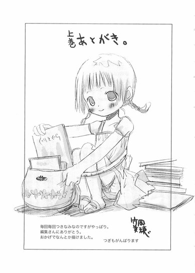

| [野村美月] 文学少女シリーズ07 | |
| 野村美月 | |
| (2015) | |
|
〝文学少女〟と神に臨む作家 上
野村美月
|
底本データ
一頁17行 一行39文字 段組１段
太字は底本ではゴシック体太字。
「◎」は底本では蛇の目、1-3-27。
「 ◇ ◇ ◇」は底本では１２字下げて「◇ ◇ ◇」。
山括弧は底本では二重山括弧。
「わたしは天野遠子。ご覧のとおりの〝文学少女〟よ」──そう名乗る不思議な少女との出会いから、二年。物語を食べちゃうくらい愛するこの〝文学少女〟に導かれ、心葉は様々なことを乗り越えてきた。けれど、遠子の卒業の日は迫り、そして──。突然の、〝文学少女〟の裏切りの言葉。愕然とする心葉を、さらに流人が翻弄する。「天野遠子は消えてしまう」「天野遠子を知ってください」──遠子に秘められた謎とは？心葉と遠子の物語の結末は!?最終編、開幕！
目次
プロローグ 自己紹介代わりの回想──あの日、彼女が願ったこと──
一章 先輩とカノジョ──
二章 きみが裏切った日──
三章 いと高く、光満ちる場所──
四章 作家の嘘──
五章 さよならの朝──
六章 死神の二つの物語──
七章 すみれの髪飾りの少女──
〝文学少女〟と神に臨む作家上
野村美月
亡くなる前の日、拓海くんは、わたしにすみれ色の小壜をくれました。
それは可愛らしいハートの形をしていて、さらさらした銀の粉が入っていました。
──オーレ＝ルゲイエの眠りの粉だよと、拓海くんはわたしの目を見つめてささやいたのです。
これを飲めば、あらゆる痛みや哀しみは雪のように溶け去り、もう憎んだり、疑ったり、嫉妬したりすることもなく、神様の腕に抱かれるように、清らかに眠ることができるのだと。
わたしが飲んでも、他の人に飲ませてもよいのだと。
すみれ色のハートの小壜に入ったオーレ＝ルゲイエの眠りの粉を、わたしは鍵のついた宝石箱に入れ、時折取り出して光にかざして眺めます。
透きとおったすみれ色のガラスの向こうで、愛らしく揺れる銀の粒を、うっとりと眺め、火照った頬に押しあて、ひんやりした感覚に癒されたのです。
この小壜さえあれば、わたしは運命を変えることができる。
きっとあの高く遠くにそびえる天上の門をくぐることもできるでしょう。
今わたしの掌中にある、この心臓は、一体誰のものでしょう。
わたし？ あの人？ カナちゃん？
プロローグ ◎ 自己紹介代わりの回想──あの日、彼女が願ったこと
神さまを得ようと思ったら、誰でもひとりでなくてはいけないのよ。
姉のような口調で、そう告げたひとがいた。
高校生になったぼくの側にも、姉のようにお節介を焼く先輩がいた。
黒く長い三つ編みを腰まで伸ばした、見た目は古風でしとやかな文学少女。なのにおしゃべりで強引ではた迷惑で、放課後になると一年生の教室までぼくを迎えにやってくる──。
ぼくははじめの頃、その先輩が苦手だった。
けれど、こっちがどんなに無視しても、迷惑そうに顔をしかめ、そっぽを向いても、ちくりと嫌味を言っても、彼女はべそをかいたりふくれっつらをした翌日には、花のようににこにこ笑いながら、
「部活の時間よ、心葉くん！」
と教室に現れるのだった。
そんな彼女が、夏のある朝、学校の木に登っているのを目撃した。
どうやら、木の枝に誰にも見られずリボンを結べたら、願いが叶うという、学園に代々伝わるなんの根拠もない乙女チックな伝説を信じていたようだ。えらく思いつめた真剣な眼差しで前を睨み、制服の胸もとからターコイズブルーのリボンをほどき、枝の先に結ぼうとしていたが、バランスを崩してすべり落ちそうになったのを、ぼくに見られて、真っ赤な顔であたふたしていた。
「鳥の雛が、地面に落ちちゃったから、巣に戻してあげたのよ」
そんな子供っぽい言い訳をしていたけれど──。
一体彼女はあのとき、ターコイズブルーのリボンに、どんな願いを込めようとしていたのだろう。
思い出に残る彼女は、夕暮れのやわらかな金色の光に満たされた狭い部室で、幸せそうに本のページをめくっている。
彼女は何者だったのだろう。
原稿用紙に向かうぼくの隣で、いつもいつも優しい眼差しで微笑みながら、なにを思っていたのだろう。
あの日、〝文学少女〟は、なにを願ったのだろう
一章 ◎ 先輩とカノジョ
「金子みすゞの詩集は、まるで桜餅のようね。甘いあんこを、桜色のつぶつぶのお餅が優しくくるんでいるの」
千切ったページの欠片をこくりと飲み込むと、遠子先輩は至福の表情でつぶやいた。
自由登校中の受験生が、二月に部室でのんきに本を食べていて良いものかと思うのだけど、遠子先輩は、
「センター試験を乗り切ったから、もう大丈夫！ちょっとは息抜きしなきゃ」
と強気なんだか迂闊なんだかわからない発言をし、部室へ顔を出すようになった。
そうして、おやつの三題噺の出来上がりを待つ間、窓際のパイプ椅子に体育座りし、本をめくってパリパリむしゃむしゃやりながら、嬉しそうに蘊蓄を垂れるのだ。
「金子みすゞは、一九〇三年──明治三十六年、四月十一日生まれの、山口県出身の童謡詩人よ。彼女の故郷は捕鯨がさかんな港町で、おうちは本屋さんだったわ。結婚をし子供を産みながら、詩を書き続けたの。
どの詩も自由で、のびのびしていて、可愛くて、優しい味がするのよっ。
桜餅には、なめらかなお餅で餡を挟んだ関東風の長命寺と、つぶつぶのお餅で包んだ関西風の道明寺があるけれど、やっぱりみすゞの詩は、つぶつぶねっ。可愛らしい突起のあるやわらかなお餅を、塩漬けした桜の葉の上からそっと噛ると、葉っぱが桜の香りを振りまきながらぷちりと千切れて、白い歯がお餅の中にゆっくり沈み、ほのかな甘さの餡に辿り着く感じなの！ねぇ、この詩を心葉くんも聞いたことがない？」
遠子先輩が目を閉じ、澄んだ声で詩を口ずさむ。
「わたしが両手をひろげても、
お空はちっともとべないが、
とべる小鳥はわたしのように、
地面をはやくは走れない。
わたしがからだをゆすっても、
きれいな音はでないけど、
あの鳴るすずはわたしのように、
たくさんなうたは知らないよ。
すずと、小鳥と、それからわたし、
みんなちがって、みんないい。」
目を開け、ぼくに向かってとろけそうな顔で、にっこりする。
「ねぇ、『みんなちがって、みんないい』素敵でしょう？ここは特に特に、甘くて美味しいのっ！」
そうして、目を細めたまま、「餡が舌にからみつくの」とか「甘いけれど、くどくなくて、いくらでもいけちゃうの」とか言いながら、パリパリ食事を続ける。
「みすゞは二十六歳で亡くなってしまったけれど、とっても真面目で優しくて、あたたかな人だったのですって。苦労も多かった人なのだけど、彼女の一番の理解者だった弟が、彼女がノートに書きためた詩を、大事にとっておいてくれたのよ」
半分ほど千切れてなくなった本を抱きしめて、感慨深げにつぶやいていたかと思うと、またぼくのほうを見て、うきうきした顔で催促する。
「心葉くん、そろそろ時間よ。おやつはできた？」
「はいはい、〝フクロウ〟〝温泉〟〝アコーディオンカーテン〟ですね。どうぞ」
書き上げたばかりの原稿用紙三枚分の三題噺を切り取って渡すと、遠子先輩は真っ白な両手を差し出し、ますますにっこりした。
「ありがとう。いただきまーす」
嬉しそうに文字に目を落としながら、華奢な指で端から大事そうに千切って、口へ運び、しゃくしゃくと噛みしめる。
「それ食べたら、とっとと帰って勉強してくださいね」
「もぉっ、せっかく先輩が後輩の様子を心配して見に来てあげたのに、そういうこと言わないの。あっ、これ美味し～」
頬をぷっくりふくらませて文句を言ってた顔が、簡単にほころぶ。
「肩こりのフクロウが、温泉へ保養に行くのね。温泉の周りにはアコーディオンカーテンが、ぐるりとめぐらせてあるのねっ。メルヘンチックで可愛いわ。甘い湯気を立てている蒸しパンをいただいているみたい。中においもが入っていて、ほくほくしてるの。あぁ、アコーディオンカーテンが、揺れながら音楽を奏ではじめたわ」
美味しい美味しいと連呼しながら、指で千切ってゆく。
「心葉くん、はじめの頃は、句読点が全然なかったり、いきなりマンホールに落ちて終わっちゃったり、幽霊に足つぼマッサージされたり、おかしなおやつばかり書いていたのに、本当に上手になったわね」
「そうですか」
それは単に嫌がらせだったのだけど。遠子先輩はやけに嬉しそうで、一口一口、味わいながら、にっこりする。
「遠子先輩の受験、いつでしたっけ」
「三月の中旬よ。後期試験だから、まだまだ先なの」
「それ、全然先じゃありませんから！ あっという間ですから」
前期試験で、東大理Ⅲを受けようとして足切りされたことを忘れたのか。そっちは記念受験なのっと本人は主張したけれど、無謀すぎる。先生は止めなかったのか。どう考えても落ちるだろう。よほど本命に受かる自信があるのか。いや、単に能天気で考えなしなだけなんだ、この人は。
「一体、どこの大学を受験するつもりなんですか？」
「内緒よ」
ぼくの話を食べながら、遠子先輩がけろりと答える。
「合格したら教えてあげる。ちゃんとお祝いしてね」
「それ、何年後ですか？」
「あーっ、ひどーい。わたしが落ちると思ってる～～～～。先輩を信用してないのね」
「夏休みの宿題を後輩に手伝わせるような先輩を、信用できるわけありません」
「あれは、たまたま時間がなかったのよぉ。もお、こうなったら絶対に合格して、わたしの実力を、心葉くんに教えてあげるわ」
雄々しく言って、千切った原稿をぱくりと口に入れた瞬間、いきなり目を白黒させた。
「うっ。か、辛いっ！」
手で口を押さえ、じたじたしながら涙目になる。
「な、なに、これ。温泉で爽やかな音楽に耳をすませていたのにアコーディオンカーテンが開いて、後ろから血まみれのフクロウが出てきたわ。ええっ、復讐って──なに？いやっ、蒸しパンの真ん中に、つぶつぶのマスタードの塊がある～～～～。いやっ、ひどい、ひどいわ。つぶつぶ辛～～～～～～い」
真っ黒な瞳からぼろぼろ涙をこぼしながら、ぼくを恨めしそうに睨んだ。
「うぅぅ......フェイントだわ」
「脳に刺激が行き渡って、頭がすっきりしたでしょう」
笑顔で告げると、遠子先輩は「......こんな刺激ほしくない」とつぶやいた。
いつもと変わらないやりとりに、つい心がゆるむ。
日が落ちる前の、おだやかな金色の光に満たされた小さなこの部屋で、このままどうでもいい話を続けていたいような、そんな怪しい気持ちになる。
けど......。
壁の時計を見て、ぼくはハッとした。
「すみません、そろそろ行かなきゃ」
慌ててシャーペンや五十枚綴りの原稿用紙を片づけはじめると、椅子にもたれてめそめそいじけていた遠子先輩が、顔をあげた。
「ななせちゃんと待ち合わせをしているの？」
「え......っ、あ、その......」
どうして、こういうときだけ勘がいいんだ！
いや、ぼくと琴吹さんはつきあいはじめたのだから、一緒に帰るくらいあたりまえだし、それを先輩に指摘されたくらいで、うろたえることなんてないのだけど。普通に「そうです」と答えればいいだけじゃないか。
なのに何故か鼓動が高まり、頬が熱くなり、声をつまらせたままおたおたしていると、遠子先輩はお母さんのように優しい目をして微笑んだ。
「早く行ってあげて。女の子を待たせちゃダメよ」
「は、はい」
鞄を持ち、ぎこちなくコートに袖を通す。袖口に指がひっかかって、うまくいかない。
そんな様子を、遠子先輩はあたたかな瞳で見つめている。そうするとぼくはますます意識して、額に汗がにじんでくる。
「遠子先輩も早く帰ってくださいね」
「はいは～い」
透明な金色の西日に包まれて、パイプ椅子に体育座りしたまま、軽やかに手を振って見送ってくれた。
その表情も、いっぺんの曇りもなく晴れやかだったのだけど......何故か胸が、ちくっとした。
晴れない霧のようなもやもやは、きっと遠子先輩が、ぼくに肝心なことを教えてくれないせいだと思う。
何故、遠子先輩が、井上ミウの初稿に書かれた台詞を知っていたのか。
プラネタリウムのあと、何度もカマをかけたり、正面から問いつめたりして、聞き出そうとしたけれど、遠子先輩はやわらかく笑うばかりで、いつの間にか話をそらしてしまうのだった。
もう出版社に残っているかどうかも定かではない、手書きの応募原稿を、遠子先輩は、いつ、どうやって読んだのか？
志望校をなかなか教えてくれないこととも、関係があるのだろうか。
あー、堂々巡りだ。
顔をしかめ、急いで戻す。琴吹さんにこんな顔を見せたらいけない。
夕日に赤く染まった図書室のカウンターで、琴吹さんは紺のＰコートを着て、ピンクのマフラーを巻いて待っていた。
鞄を抱え、うつむきかげんに、浮かない顔をしていたのが、ぼくを見上げて恥ずかしそうに笑みこぼれる。そんなきらきらした素直な微笑みに、ぼくの心も晴れ晴れとし、自然と笑顔になる。
「お待たせ。帰ろうか」
「うん」
小さくうなずいて、嬉しそうに立ち上がった。
「ねぇ、もうすぐバレンタインでしょう。井上に、ちょ......チョコとかあげてもいい？」
翌朝、教室で琴吹さんが頬を赤くして、睨みつけるように言った。
まだ早い時間なので、それほど人はいない。声をひそめて、つぶやく。
「それでその......手作りとか、ヤじゃない？」
「全然。ありがとう、嬉しいな」
答えると、ちょっぴりはにかんだあと、急に横を向いて焦っているような早口で、
「ま、毎年、お父さんに作ってるから、ついででっ。あ、でも、お父さんのより、材料とかいいの使って、ちゃんとデザインも変えるから。だから、ついでだけど、そんなについでってわけじゃ。だからあの──」
ああ、本当に女の子なんだなあ。琴吹さんって。ぶっきらぼうな話し方や、素っ気ない態度に慣れてみると、わたわたしたリアクションが、可愛くてたまらない。
「楽しみにしてるよ。前に焼いてきてくれたクッキーも、とっても美味しかったし」
「あれは、みんなに焼いてきたんだよっ。たまたまだったんだよ」
ムキになって主張するのがやっぱり可愛くて、つい口元がほころんでしまう。
「あ、あたし、なんかおかしなこと言った？」
「ううん」
「けど、なんか、笑ってる」
「そうかな」
唇を尖らせて睨んでいる琴吹さんに、可愛いなと思って、と言ってみたい気持ちに駆られたとき、後ろで明るい声がした。
「おはよっ！ ななせ、井上くん」
琴吹さんと仲良しの森さんが、満面の笑顔で話しかけてくる。
「ねぇ、井上くんとななせ、つきあってるんだって？昨日ななせと井上くんが、いい雰囲気で帰るの、見ちゃったんだあ。それで、ななせに電話して、白状させたの」
「ええっ」
「も、森ちゃん......！」
琴吹さんが声をつまらせ、森さんの手を引っ張る。森さんはかまわず、弾むような声でぼくに言った。
「大丈夫。みんなにはしばらく黙っててあげるよ。ななせ美人でモテるから、男子にバレたら大変だもんねー」
しばらくがどれくらいの期間なのか、とっても気になった。琴吹さんとつきあいはじめたことを隠すつもりはないけれど、わざわざ広めたくもない。
森さんが、こくこくとうなずく。
「うんうん、わかってるよ。みんなに内緒の関係って、盛り上がるもんねっ。だから、とーぶんは誰にも言わないよ」
だから、とーぶんって、どれくらい？
「ななせは照れ屋でぶっきらぼうだけど、すごくイイコだから、ななせのことよろしくね。ななせの好きな色とか、食べ物とか、ななせの気に入りそうなデートスポットとか、ななせがうっとりしちゃうようなシチュエーションとか、なんでも聞いて」
きっと森さんは、すごく面倒見の良い人なのだ。けど、面と向かってあれこれ言われると、ひたすら恥ずかしい。
「も、森ちゃんっ！ ちょっと来て！」
琴吹さんが、森さんの腕を両手で抱え込み、教室の隅のほうへ引っ張っていく。
「わわっ、なに、ななせ」
「いいから、来てっ」
そのまま離れていってしまった。見ていると、琴吹さんが眉を吊り上げ、すごい勢いで森さんに文句を言っていて、森さんは笑顔でなだめている。女の子同士のつきあいも、大変そうだな。
「おはよう、井上。なにを難しい顔をしているんだ」
振り返ると、芥川くんが立っていた。
「おはよう。別に大したことじゃないよ。女の子って内緒話が好きだな～とか、そんなこと」
ぼくが見ていた方向へ視線を向け、そこで琴吹さんと森さんが議論（？）を繰り広げているのを見て、芥川くんも納得したようにうなずく。
「まぁ、そういう悩みならいいだろう」
それから、からかうように目をなごませた。
「琴吹と、うまくいっているようだな」
「うん、おかげさまで」
「そうか。琴吹は男子に人気があるから、交際がバレたときの覚悟をしておいたほうがいい。きっと恨まれるぞ」
「ぅぅ、やっぱりそうだよね」
「まぁ、それも贅沢な悩みだな」
そのあと芥川くんは、昨日病院へ美羽のお見舞いに行ったことを話してくれた。本人の頑張りもあって順調に回復しているらしい。春のうちに退院できるかもしれないということだった。もちろんリハビリのために通院しなければならないし、両親のどちらと住むかという問題もある。
「朝倉は、部屋を借りて一人暮らしをしたいようだ。夜間でも通信講座でもいいから勉強もし直したいと言っていた。今、親と交渉中だそうだ。それはそれで大変だろうが、力になれたらと思う」
「そっか......美羽も頑張ってるんだ」
美羽の話を聞くとき、かすかな痛みを感じる。心の奥に残る傷跡が、指で押されて疼くような。けれどそれ以上に、美羽が未来へ向かって歩き出そうとしていることが嬉しい。あたたかな気持ちが込み上げてくる。
「ぼくにも、できることがあったら言って」
芥川くんがおだやかな笑顔で「ああ、わかった」とうなずく。
それから眉根をひそめて、急に苦い顔になった。
「実は、オレは部屋を借りるのは反対なんだ。若い女性の一人暮らしはやはり物騒だし、櫻井みたいな軽い男も多いし」
声に棘がある。芥川くんがここまで他人への不快感をあらわにするのは、珍しい。
「ひょっとして流人くん、またお見舞いに来たの？」
尋ねると、ますます顔を嫉妬にゆがめた。
「ああ。週末に花屋でもらったとかいう派手な花束を持って訪ねてきた。朝倉がうっとうしそうにしているのに、かまわずべらべら話しかけて、あげくに好みだからつきあわないかと口説きはじめる始末だ」
「ええっ！ 流人くんは、竹田さんとつきあってるんだよ！」
つい先日も、図書室のカウンターに肘をついて、竹田さんと話し込んでいるのを見て、唖然としたものだ。
流人くんは司書の先生をどう丸め込んだのか、いつの間にか図書室に堂々と出入りするようになっていた。制服の上にコートを着ているので、他校の生徒だとバレていないみたいだけど、長身で顔立ちや雰囲気も華やかなので、とにかく目立つ。
『ねぇ、彼、この頃よく見かけるけど、何年生だろう。カッコいいよね～』『声、かけてみよっか』『でも、カウンターの子、彼女っぽいよ』と、女の子たちがささやくのを聞いて、ぼくのほうが焦ってしまった。
流人くんはしたたかな笑顔で、
『だって、オレ、ちいとつきあってるし。好きな子には、毎日会いたいじゃないすか』
なんて言っていた。
それが、美羽にも、つきあわないかだなんて──全然変わってないじゃないか！竹田さんはどうしたんだ！
「オレもそう指摘した。そうしたら、竹田ともつきあっていると、平然と答えていた。それだけじゃない！この前、図書室に他校の女子が来て、櫻井のことを引っぱたいたそうだ」
「うわ......」
流人くんが女の子に叩かれた現場を、実際に目撃したことがある。本人は慣れてるらしくけろっとしてたけど。まさか、うちの学校で！しかも図書室で！琴吹さんはなにも言ってなかったのに。
「あの姫倉先輩とも、やりあったらしい」
「麻貴先輩!?」
さらに仰天して聞き返した。
「それって図書室で？ 麻貴先輩が、図書室に来たの？」
芥川くんが、しかめっつらのままうなずく。
「櫻井の顔面を、思いきり、拳骨で殴りつけたそうだ」
「えええええっ」
ぼくは目をむいた。それも、琴吹さんから聞いていない！
芥川くんの話では、麻貴先輩はにっこり笑って、すぐに図書室から出ていってしまったらしい。殴られた流人くんは、床に尻餅をつき不機嫌そうだったという。
不機嫌そう──という部分が引っかかった。修羅場が大好きで、女の子に叩かれても、なじられても、「オレ、マゾすから」とにやけている流人くんが。
ああけど、流人くんと麻貴先輩は仲が悪かったのだ。
外見や性格に似た部分が多いせいか、互いに天敵と思っているようで、夏に麻貴先輩の別荘でも、一悶着あったのだ。あのときも、流人くんは麻貴先輩に蹴りをくらって、床に尻餅をついていた。それで、「暴力女！」と叫んでたっけ。
「きっと流人くんが、麻貴先輩を怒らせることを言ったんだよ。自業自得だよ」
「まったくだ。オレもさすがに昨日は殴りたくなった。もちろん、朝倉は櫻井がなにを言っても、相手にしなかったが」
芥川くんはやっぱりムッとしていた。
流人くん、きみは一体なにをやってるんだ。てゆーか竹田さんは、流人くんの言動をどう思っているんだ。考えると、頭がこんがらがってきそうだった。
休み時間に琴吹さんにそのことを尋ねると、顔をこわばらせ、困っているように視線を泳がせ、うつむいてしまった。
「確かに、そんなこと、あったけど......た、竹田は、気にしてないみたい」
「そうなんだ」
「『流くんは、たくさん彼女がいるから』って、笑いながら話してた」
「うーん......」
渋い顔で唸るぼくを、琴吹さんが心配そうにちらっと見上げる。
「ねぇ、櫻井から聞いたの？ 櫻井と会ったの？」
「え？ ううん。芥川くんだよ」
「そう......」
琴吹さんの表情は、やっぱり冴えない。気になって、つい、
「あっ、ぼくは流人くんとは違うからね。彼女は一人だよ」
と口走ると、とたんに真っ赤になった。
「やだ......っ、なに言ってるの！ そんなこと聞いてないでしょ、もぉ、バカ！」
唇を尖らせ、横を向いてしまった。
「そ、それでその、今日は森ちゃんたちと、もんじゃを食べに行く約束をしてるから、一緒に帰れないけど......」
ぼくは笑顔でうなずいた。
「わかったよ。女の子のつきあいも大切にしなくちゃね」
「う......」琴吹さんが声をつまらせ、見上げてくる。「ねぇ、森ちゃんに話しちゃったこと、怒ってる？」
「なんで怒るの？」
「だって、その......井上が、嫌かなと思って」
「そんなことないよ。ぼくも芥川くんに、琴吹さんとつきあってるって話してるもの」
すると琴吹さんは、たちまち明るい顔になった。
「そうなんだ......！ 芥川に、あたしとつきあってるって言ってるんだ」
「日曜日、どこかへ行こうか？ 予定、あいてる？」
「うんっ、あいてる」
「どこにしよう。琴吹さん、行きたいとこある？」
「あたし......」
琴吹さんの目元が、また染まる。
「井上の家に、行ってみたい」
「ぼくの？」
「だだだだだ、ダメだったら、いいんだけどっ。どーしてもってわけじゃないし。映画でも水族館でも、あたしは全然──」
くすりと、思わず笑いがもれる。
「いいよ。ぼくの部屋なんか、なにもないけど、それでよければ日曜日に遊びにおいで」
見上げる顔がぱーっと明るくなり、女の子らしい素直な笑みがいっぱいに広がった。
「うんっ、ありがとう。絶対行くっ」
放課後、嬉しそうに森さんたちと教室を出てゆく琴吹さんを見送って、文芸部の部室へ行った。
ドアを開けると、呆れたことに今日も、三つ編みに制服の文学少女が、パイプ椅子に体育座りして膝に広げた本を読んでいる。遠子先輩はぼくを見て、にっこりした。
「また来たんですか」
「あー、なによ、その言い方。受験勉強の合間を縫って、会いにきてあげたのに」
「昨日も、おとといも、その前も来たじゃないですか。ありがたみも薄れます」
「ぅぅっ、可愛くない」
遠子先輩が頬をふくらます。
「けど、ちょうどよかった。流人くんのことで聞きたいことが──」
「ねぇ、心葉くん、週末に心葉くんのおうちへお邪魔してもいい？」
「へ？」
ぼくは大変間抜けな声を出してしまった。多分顔も同じくらい惚けていただろう。
何故、いきなりうちへ？ しかも週末？
「一度、家庭訪問しなくちゃって思ってたのよ。どうかしら？」
「どうかしらって......その」
遠子先輩は、にこやかにぼくを見つめている。
「予定がある？」
「いいえ」
「じゃあ、決まりね。土曜日の二時に心葉くんのおうちへ伺うわ」
ぼくがぼんやりしている間に、遠子先輩の訪問があっさり決まってしまった。
流人くんのことは聞き出せなかった。というか、すっかり忘れていた。
こうして、土曜日に遠子先輩が。日曜日に琴吹さんが、ぼくの家にやって来ることになったのだった。
うわっ......お母さんに、なんて話そう。
「まぁ、天野さんが!?」
金曜日の夜、遠子先輩が来ることをお母さんに伝えると、恥ずかしいほど大きなリアクションが返ってきた。
「まぁまぁまぁっ、お兄ちゃんがお世話になった天野さんが、遊びに来てくれるなんて」
年甲斐もなく目を輝かせ、はしゃぎ出す。
「お兄ちゃんが元気になったのも、天野さんのおかげですものねぇ。お電話でしかご挨拶したことないけれど、礼儀正しいしっかりしたお嬢さんだなって感心していたのよ。ずっとお会いしたいと思っていたの。お兄ちゃんの恩人ですものね」
「そんなたいしたものじゃないよ」
お母さんが騒ぐので、土曜は仕事で出かけていることが多いお父さんまで興味津々で、「なに！心葉の恩人が来るのか？じゃあお父さんも、明日は家にいよう」
と言い出す始末だった。
「ねぇ、お母さん、誰が来るの？」
「ふふ、お兄ちゃんの大事な人よ」
小学生の舞花に、こぼれそうな笑顔で話しているのを聞いて、顔から火を噴きそうになった。
「お母さん！ それ絶対違うから！」
「もうお兄ちゃんたら照れちゃって。あぁ、明日が楽しみね。声も綺麗だけど、外見もとってもほっそりして、素敵なお嬢さんなのよね」
「！ どうして、遠子先輩の顔をお母さんが知ってるの？」
「だって、お兄ちゃんのお部屋をお掃除しているときに、写真を見たもの。長い三つ編みの水着の──そうでしょう？」
けろりと言われて、慄然とした。
それってまさか、写真部の板垣くんに売りつけられた、遠子先輩の水着とか体操服とかの？胸元があまりにぺったんこで、さらしておくのが忍びなくて、セット購入した？
「あれは、変な理由で持ってたわけじゃないからっ。ただの義理だからっ。それに、もう人にあげちゃってないからっっ！ぼくが持ってても仕方ないし」
必死に主張するぼくを、お父さんまでにやにやと眺めている。舞花に、「変な理由ってなぁに？」と無邪気に問われて、ぼくは声をつまらせた。
お母さんは「おやつはなににしましょう。午前中に材料を仕入れてこなくちゃ。ねぇ、お夕飯も食べて行かれるでしょう？お母さん腕を振るうから、ちゃんと天野さんを誘ってね、お兄ちゃん」と、張り切っている。
「夕飯は......無理だと思う。それにおやつも気を遣わなくていいから」
「あら？ どうして？」
「しょ、小食なんだ。お昼とか、紙くらいの量しか食べないし、胃が普通の人より小さいみたい」
紙を食べて生きているのは本当だから、まるきり嘘というわけじゃない。
「まぁ......それであんなに痩せてるのね」
お母さんが残念そうにつぶやく。
「日曜にもお客さんが来るから、その人にごちそうしてあげて」
「あら？ お友達？」
「えっと......同じクラスの」
つきあっている彼女とは言いにくい。しかも、遠子先輩の訪問の翌日に、別の女の子が来るなんて。
「誰？ 芥川くん？」
「芥川くんじゃなくて別の......」
「そう。お友達が増えたのね！ やっぱり天野さんのおかげね。ああ、でも男の子なら、たくさん食べるわね。ボリュームのあるお料理のほうがいいわね」
嬉しそうにメニューを考えるお母さんに、来るのは女の子だと言えなかった。
翌日土曜日。空はからりとした冬晴れだった。
「はじめまして、文芸部の部長の天野遠子です」
制服に紺のダッフルコートという代わり映えのしない服装でやってきた遠子先輩は、玄関でしとやかに挨拶をした。
声の調子もやわらかく控えめで、眼差しは初々しく、きっちり編んだ長い三つ編みにもスカートの裾にも一分の乱れもない。古風で聡明な美少女といった遠子先輩に、お父さんもお母さんも、しきりに感心して溜息をついている。
「まぁ、いらっしゃい。心葉の母です。心葉が本当にお世話になりました」
「心葉の父です。これからも、うちの息子をよろしくお願いしますよ」
両親そろって深々と頭を下げるのを見て、逃げ出したくなった。
「舞花です。こんにちは、お姉ちゃん」
舞花もぺこりとお辞儀をする。
「こんにちは、舞花ちゃん」
膝を折って、目線を舞花の高さにあわせて挨拶する遠子先輩を、お父さんもお母さんも、ますます好意的な眼差しで見ている。
遠子先輩は、持ってきた手提げの紙袋をお母さんへ差し出した。
「わたしが焼いたシュークリームです。みなさんで召し上がってください。心葉くんのお母さんはお料理上手だとうかがっているので、比べられると恥ずかしいのですけど。わたしも、お菓子を作るのが趣味なんです」
そんなことを言って、恥じらってみせたりする。
ぼくは目眩がした。お菓子なんて全然作ったことないくせに！どこまで見栄っ張りなんだ！
お母さんは感激して、シュークリームを受け取った。
「まぁ、本当に礼儀正しくてしとやかなお嬢さんね。それに写真よりもっとお綺麗だし」
「写真？」
遠子先輩がおっとりと首を傾げる。
水着写真を所持していたことをバラされる前に、ぼくは遠子先輩の腕をつかんだ。
「お母さん、挨拶はもういいだろう！ 遠子先輩、ぼくの部屋へ行きましょう」
驚く遠子先輩を引っ張って階段をあがり、ドアを閉めるなり、どっと汗が噴き出した。
「心葉くんたら、お母さんたちに失礼よ」
「てゆーか、猫かぶりすぎです！ もはや詐欺のレベルです。あのシュークリーム、どこで買ってきたんですか」
「失礼ね。ちゃんとわたしが、本を見ながら作ったんです」
「へ？ お店で買ったものを、箱に詰め替えただけじゃないんですか？」
遠子先輩が、ぽかりとぼくの頭を殴る。
「そんなことしません」
「だって、遠子先輩、お菓子作れたんですか」
「えへん。文学少女に不可能はありません。調理実習のマドレーヌや、五目ご飯のおにぎりを、心葉くんにあげたでしょう」
「それ、共同作業ですから。遠子先輩、バターを計ったり、人参を洗ったりしただけでしょう」
「バターも混ぜたし、人参の皮もむきましたっ。もぉ、わたしのお手製のシュークリームを食べたら、あんまり美味しくて、泣いちゃうわよ」
部室にいるときとまったく変わらない会話を繰り広げていると、ドアがそぉーっと開いた。
遠子先輩が、慌てて猫をかぶり直す。
「うふふ、そういうわけなのよ、心葉くん」
なにがそういうわけなんだ。ドアの向こうから、舞花が目を丸くして見ている。
遠子先輩は訪問者が小学生の女の子だと気づくと、肩の力を抜き頬をほころばせ、自分から舞花のほうへ歩いていった。
家にお母さん以外の女の人がいるのが珍しいのか、舞花はじいっと遠子先輩を見上げている。
遠子先輩はさっきと同じように腰をかがめ、にっこりした。
「どうしたの？ 舞花ちゃん？」
「......お姉ちゃん、センパイ、なの？」
「そうよ。美人で頼りになる、料理上手で文学少女の先輩よ」
「言い過ぎです」
「プンガクショウジョ？」
「そう。食べちゃいたいくらい本が大好きな、女の子のことよ」
「？」
舞花が首を傾げる。それから突然「あっ」とつぶやいて、背中を向けてばたばた走っていってしまった。
「妖怪ですって言ったほうが、小学生にはわかりやすかったんじゃないですか」
「ひどーい、妖怪じゃないもんっ」
遠子先輩が手を振り上げたとき、舞花が胸に絵本を抱え、頬を紅潮させて戻ってきた。
遠子先輩が慌ててげんこつを背中に隠す。
「これっ」
舞花が絵本を差し出す。
「センパイは、アンみたい」
それは子供向けに書かれた『赤毛のアン』だった。表紙で、古めかしいワンピースを着た三つ編みの女の子が笑っている。
遠子先輩は懐かしそうに目を細めた。口元に、すみれの花のような可憐な笑みがにじむ。
「ああ、とっても美味しそうな本ね」
大事ななにかを心に思い浮かべているような、そんな優しい声でつぶやいた。
「美味しいの？」
「ええ『赤毛のアン』は、ケーキバイキングみたいに、いろんなお菓子の味がするの。摘み立ての木苺をカスタードクリームの上に、たっぷり盛り上げたタルト。やわらかなババロアの周りを、フィンガー状のビスキュイでぐるりと囲んだシャルロット。ほろ苦いキャラメルと甘いチョコレートが層になっているトルテ......アンがギルバートと絶交をしたあと、素直になれなくて、ついつっけんどんにしてしまうところは、まるで甘酸っぱいレモンパイのようね」
「レモンパイ......？」
舞花が本をぎゅっと抱きしめ、うっとりした目になる。
「そう、レモンの味は青春の味......そして、初恋の味なの」
微笑む遠子先輩を、舞花はつぶらな目で一心に見上げている。
そこへ、トレイに紅茶とお菓子を載せたお母さんがやってきた。
「まぁっ、舞花！ ダメじゃない、お兄ちゃんたちの邪魔をしちゃ。ごめんなさいね、天野さん」
「いいえ。舞花ちゃん、またご本のお話をしましょうね」
「うんっ。またお菓子のお話しして」
舞花が、またばたばたと走ってゆく。
お母さんが紅茶と一口サイズのフルーツタルト、それにシュークリームを並べる。
「天野さんのシュークリーム、とても綺麗にふくらんでいるわ」
「お菓子作りが趣味ですから」
あくまで猫をかぶり続ける遠子先輩。
「それじゃあ、ごゆっくり」
「ありがとうございます。いただきます」
ドアが静かに閉じる。遠子先輩は、お母さんたちが去ったほうを、澄んだやわらかな眼差しで見つめている。
どうしたのだろうと不思議に思っていると、おだやかな声でつぶやいた。
「いいご家族ね」
いきなりそんなことを言われて面食らうぼくに、ますます優しい声でしみじみとつぶやく。
「お父さんも、お母さんも、あたたかくて。妹さんも明るいいい子で、みんな仲が良さそうで......」
遠子先輩が、ゆっくりと、部屋の中へ視線を移動させる。午後の日射しがこぼれている明るい窓や、お母さんの手作りのモスグリーンのカーテン、漫画や小説がごちゃ混ぜに並ぶ本棚、小学生の頃から使っている机、そんなものをひとつひとつ、記憶に焼き付けるように、ゆっくりと──愛おしそうに、眺めてゆく。
「心葉くんは、こんなおうちで、あんな優しい人たちに囲まれて......育ったのね......」
胸がぎゅっと締めつけられた。
どうして、こんな顔をしてるんだろう。
どうして、そんなことを言い出すのだろう。
それに、どうして、今日、うちへ来たのだろう。
「......遠子先輩のご家族は、どんな人たちなんですか」
今まで聞いたことがなかった。流人くんの家に下宿している理由とか、ご両親はどこでなにをしているのかとか、なんとなく訊いてはいけないような気がして。
苦いような不安が、じわじわと込み上げてくる。胸がずっとざわめいている。
遠子先輩は、ぼくを見てやわらかく微笑んだ。
「お父さんとは小さい頃、よく本の食べ比べをしたわ。お父さんの膝で、一冊の本を、二人で両端から千切りながらいただいて、この本はふわふわのオムライスの味だとか、揚げたてのドーナツの味だとか......お話しをするの。同じ本をいただいているはずなのに、わたしとお父さんで味が違うときもあるのよ......。もっと小さい頃は、お父さんが、ハンバーグはこういう味だよとか、シチューはこんな味がするんだよ......とか言いながら、本を食べさせてくれたわ」
声も、表情も、幸せそうだった。遠子先輩が、家族をどれほど愛しているかが伝わってくる。
「......遠子先輩のお父さんも、本を食べるんですね」
「ええ。お母さんは、普通のごはんしか食べられなかったのだけど。わたしとお父さんに、いつも美味しいごはんを書いてくれたわ。お母さんは、わたしと同じ文学少女で、学生の頃は作家志望だったのよ」
遠子先輩が、花のようににっこりする。
紅茶の湯気が、白いティーカップから、やわらかに立ちのぼっている。
「お父さんは、お母さんにプロポーズするとき、『ぼくだけの作家になってください』って言ったんですって」
澄んだ黒い瞳に、甘い憧れが浮かぶ。
──心葉さんは、遠子姉の作家だから。
流人くんに言われた言葉が、ふいに頭によみがえり、鼓動の音が聞こえるんじゃないかと思うほど、心臓が跳び上がった。
まさか、遠子先輩のお父さんのプロポーズの言葉が、そんなだなんて。
どうしよう、動悸がおさまらない！
顔まで熱くなってきた。
ぼくは、レース模様の紙ナプキンの上に盛られたシュークリームに、とっさに手を伸ばした。
お母さんが褒めたように、シュークリームの皮はキツネ色に焼け、綺麗にふくらんでいて、ずっしり重かった。
「遠子先輩のお手製にしては、上出来ですね」
軽口を叩きながら、かぶりつく。
ぱりっとした皮の内側から、どろりとしたカスタードクリームが、口いっぱいにこぼれ出てくる。
次の瞬間、舌先から脳天へ、稲妻のような刺激が突き抜けた。
「～～～～～～～～！」
なんだ、これは。
しょっぱい──いや、甘辛い！ それも、みたらし団子のような甘辛さじゃなくて、もっとえぐいというか、塩っぽいというか、プリンに粗塩をめいっぱい振りかけて食べるような、そんなキワモノな味で──てゆーか、これは食べ物の味じゃないっ！
「どうしたの？ 心葉くん？」
シュークリームを持ったまま硬直しているぼくに、遠子先輩が不安そうに声をかけてくる。
ぼくはやっとのことで口の中のものを飲み下し、火傷しそうに熱い紅茶を飲み、ようやくまともに声を発することができた。
「遠子先輩っ、このカスタード、砂糖と塩を間違えてます！」
「ええっ！」
遠子先輩が目をむく。
「そんな──わたし、ちゃんと気をつけて──心葉くん、わたしのこと、だましてない？」
「だましてません。味見すれば一発でわかります」
思わず口走り、慌てて唇を結ぶ。遠子先輩は傷ついたような顔をしていた。
「すみません......」
「ううん......」
ぎこちなく首を振ったあと、「あーっ！」と叫んだ。
「大変だわ！ 心葉くんのお母さんたちに、召し上がってくださいって言っちゃった！」
ぼくらは慌てて部屋を飛び出て、階段を駆け下りた。
リビングのドアを開けたとき、ぼくらが見たのは、食べかけのシュークリームを手に、なんとも言えない複雑な顔をしているお父さんとお母さん、それに「しょっぱいよぉ」と泣いている舞花だった。
「......」
「そんなに落ち込まないでください」
「......ごめんなさい」
部屋に戻った遠子先輩は、膝を抱えてうなだれている。後ろにスダレがかかりそうなほど、どよ～んとしている。
「お父さんも、お母さんも、気にしてませんから」
二人とも、「いいんだよ」「お砂糖とお塩を間違えちゃうなんて、よくあるわ」と笑っていた。舞花はずっとべそをかいてたけど......。
「遠子先輩」
声をかけても、肩を丸めてうなだれたままだ。よほど落ち込んでいるらしい。知的でしっかりものの先輩のイメージが壊れたとか思っているのだろうか。
すると、元気のない声で言った。
「......わたし、美味しいシュークリームを、食べてもらうつもりだったのよ」
胸を、ちくりと突かれた。
遠子先輩は、ぼくらがあたりまえに食べているものの味が、わからない。
普段、砂糖や塩を使う機会もないのだろう。なのに、ぼくらに食べさせるために、本を見ながらシュークリームを作ってきてくれた。
自分は、味わうことができないのに。
「......」
食べかけのまま放置されていたシュークリームを手に取ると、ぼくは齧りついた。
「結構、イケますよ」
「心葉くん......！」
遠子先輩が顔を上げ、目を丸くする。
舌に、甘じょっぱいグロテスクな味が、ねっとりとからみつく。
ぼくはそのまま食べ続け、全部飲み込むと、二個目のシュークリームに手を伸ばした。
「やめて、無理して食べなくてもいいわ」
「......無理はしてません」
二個目を、齧る。
「でも」
遠子先輩は泣きそうだ。
「食べたいから、食べているだけです」
「おなかを壊しちゃうわ」
「そんなに簡単に壊れません」
口の中が、しょっぱいのに、甘くて辛くて、えらいことになっている。
ぼくは三個目のシュークリームに手を伸ばした。
「もういいわ。やめて」
「......遠子先輩は、最後まで食べてくれましたよね」
遠子先輩が目を見開く。
「ぼくが書いたものを全部、残さずに、いつも食べてくれましたよね」
眉が下がり、遠子先輩の睫毛が震え、目がうるんだ。
ぼくは三個目のシュークリームを飲み込み、痙攣を起こしそうな胃をなだめながら、最後の、四個目のシュークリームをゆっくりと口へ運んだ。
油断をすると、胃の中のものが逆流しそうになる。
辛いものを食べ続けると、舌が麻痺してなにも感じなくなるというけれど、そこに甘さが加わっているせいか、突き刺すような刺激は依然として続いていて、こめかみに冷や汗がにじんでくる。
放課後の文芸部で、めそめそ泣きながらぼくの書いたおかしな話を食べてくれた遠子先輩を思い出す。
──いやぁ～～～～、ヘンな味～～～～！ 苺味のかき氷に、練乳の代わりにマヨネーズがトッピングされてるぅぅぅ。
はじめの頃は嫌がらせで。
そのあとは、遠子先輩の反応が楽しくて。
ぼくは毎日毎日、奇天烈な話を書き続けた。
なのに、遠子先輩はどれだけ悲鳴を上げても、ぼろぼろ涙をこぼしても、ぼくの書いたものを決して残さなかった。
最後まで飲み込み、
「ごちそうさま。明日も部活に来てね」
と明るく微笑んでくれた。
どうして、あんなことができたのだろう。
こんな、食べ物とは呼べないようなものを、毎日食べ続けることができたのだろう。
そんなことを考えると、胃だけでなく胸までいっぱいになって、苦しくなった。ぼくが最後のシュークリームを必死に片づけるのを、遠子先輩は黙って見ている。
「......」
ようやくすべてを飲み下したとき、おなかははち切れそうで、胸のあたりがむかむかし、喉は妙にひりひりしていた。
「ごちそうさまでした」
そう言うと、遠子先輩はうるんだ目のまま小さく微笑んだ。
「......ありがとう」
ティーポットから、遠子先輩が二杯目の紅茶を注いでくれる。
ぬるくなり舌に優しくなった紅茶を、ぼくはちびちび飲んだ。
胃がまだ痙攣している。二度と、二度と、こんな真似はできない。
遠子先輩が、お母さんの作った一口サイズの苺とオレンジのタルトを指でつまみ、
「可愛い」
と微笑んで、口へ入れる。
切ないような、あたたかいような、不思議な沈黙が流れたあと、遠子先輩は懐かしそうにつぶやいた。
「ねぇ......一年生の頃、心葉くんは、とても暗くて、反抗的で、意地悪だったわね」
ぼくは紅茶を吹きそうになった。
「なんですか、それ！ ぼくのこと、そんな風に思ってたんですか！」
遠子先輩が微笑んだまま言う。
「だって、本当に意地悪だったもの。部活はさぼろうとするし、返事は冷たいし、嫌味を言うし、わざとヘンな話ばかり書いて、先輩を困らせてばかりだし」
「それは、遠子先輩が無理矢理ぼくを、文芸部に引っ張り込んだからです。ぼくは部活動するつもりなんてなかったし、作文を書く気もなかったのに」
長い長い冬の終わり。その年の春は、ずいぶん遅れてやってきた。
引きこもり生活のあと、美羽のことを引きずったまま高校生になったぼくは、暗い毎日を送っていた。
誰とも関わりたくない。もう、傷つきたくない。ただ平凡におだやかに日々が過ぎていけばいい。そんな風に願っていたぼくの前に、遠子先輩は現れた。
中庭の、真っ白な木蓮の木の下で本を読む、長く黒い三つ編みの古風な上級生。
そのしとやかそうな先輩が、いきなり本のページを破いて、口へ入れたときは、仰天した。
──きみが秘密をバラさないように側で見張ることにするわ。
──わたしは二年八組天野遠子。ご覧のとおりの〝文学少女〟よ。
春を告げるすみれのように、晴れやかに可憐に、名乗りを上げ、あたふたするぼくの手を握りしめ、校舎の三階の西の隅にある狭い部室へ連れて行った。
そんな状況で、紙を食べる非常識な先輩に、心を開けるわけがない。ぼくが書き散らした文法無視、展開滅茶苦茶の三題噺は、さぞすさんだ味がしただろう。
「あー、やっぱり、わざとだったんだ」
遠子先輩が頬をふくらませて、ぼくを睨む。
それから、また表情をなごませた。
「でも、たまにあったかい、美味しいお話を、書いてくれたわね。胸がきゅっとするような甘酸っぱいお話や、ほろ苦いお話も......。本当に、たくさんのお話を、心葉くんはわたしに食べさせてくれたわね」
再び、切ない空気になる。
遠子先輩の眼差しが、口調が──普段とどこか違っているような気がして、不安になる。
「大学へ行ったら、おやつはどうするんですか？まさか手紙で毎日送れなんて言いませんよね」
遠子先輩は優しく微笑んだ。
「そんなこと、言わないわ」
喉が渇き、ますます不安が込み上げてくる。
部屋に漂う空気は、とてもやわらかくて優しいのに。胸の中に重く暗いものがたまってゆく。
まるで、遠子先輩が今にも目の前から消えてしまいそうな......。
遠子先輩は、大事なものを見つめるような澄んだ瞳で、じっとぼくを見つめている。
ぼくも、目をそらせない。
「おやつは食べられなくなるけれど。いつか心葉くんが書いた小説を、わたしに読ませてね」
心臓を、生あたたかい手でいきなり握りしめられたような、リアルな痛みが走った。
遠子先輩は、優しくぼくを見つめている。
これまでにも遠子先輩は、ぼくに同じことを何度か言った。
小説を書いてほしいと。
ゆるやかに──けれど、しっかりと包み込むように締めつけてくる胸の痛みは、続いている。
これまでと同じように、ぼくは声をつまらせたまま、返事をすることができなかった。
そんなぼくを、遠子先輩はうんと年上の人のようなおだやかな表情で、見つめていた。
日が落ちて暗くなった頃、遠子先輩はぼくの家をあとにした。
「また来てくださいね、天野さん」
「ありがとうございます」
お母さんたちに丁寧に頭を下げ、小声で「シュークリーム、すみませんでした」と頬を赤らめる。お父さんもお母さんも微笑ましそうに「いいんですよ」と言っていた。
「ばいばい、センパイ」
元気に手を振る舞花に「ばいばい、舞花ちゃん」と小さく手を振り返し、遠子先輩が外へ出る。
ぼくは途中まで送っていった。
「もう、ここでいいわ」
青白い外灯の明かりの下で、遠子先輩が微笑む。家に来たとき持っていた、もう一つの紙袋をぼくのほうへ差し出した。
「借りていたマフラーと手袋と、シャーペンよ。返しそびれて、ごめんなさい」
受け取ると、中に雪のように白いマフラーが見えた。
「まだ試験が残ってます。シャーペンは必要なんじゃないですか」
奇跡を起こすためのお守りです。北風が吹く寒い晩、ぼくは頬を熱くして、遠子先輩にそれを差し出したのだ。
遠子先輩はまた、大人っぽい笑みを浮かべた。
「じゅうぶん役に立ってくれたわ。ありがとう。あとは奇跡じゃなくて、実力で頑張るわ」
まるで、もう会えないような──。
それがわかっているから、今ここで、借りていたものを全部返したような。
昼間、部屋で感じたのと同じ感覚。
遠子先輩の姿が、今にも薄れ、消えてしまいそうな。
そんな──足元がぐらつくような不安に胸を押し潰され、ぼくは立ち去ろうとする遠子先輩の手をつかんで、引き戻した。
「待ってください。──まだ寒いですから！」
なにを焦っているのだろう。一人の人間が、ある日、目の前からすっかり消えてしまうなんて、ありえないのに！
紙袋から白いマフラーを出すと、洗濯したてらしく花の香りがした。あの夜と同じように、遠子先輩の首に巻きつける。
「もう一度貸します。そのまま巻いて帰ってください」
遠子先輩は目を見張ったあと、ふいにくずおれそうな切ない眼差しになり、そのあと幸せそうににっこりした。
「ありがとう。やっぱりマフラーがあると、あたたかね」
「あげるんじゃありませんからね！ ちゃんと返しに来てくださいね！」
「はいはぁ～い」
おどけた返事をして、闇の向こうへ去ってゆく遠子先輩を、手に紙袋を持ったまま泣きたいような気持ちで見送った。
◇ ◇ ◇
遠子はやっぱり文陽さんの娘なのね、カナちゃん。
休日になると、文陽さんの膝の上にちょこんと座り込んで、一緒に嬉しそうに本を食べています。
文陽さんが、とろけそうな優しい顔で、ページを小さく千切って口に入れてあげると、目を細めて伸びをし、顔を上に向けて、「お父さん、もっと、もっと」と舌足らずな声でねだるのよ。
リビングの窓際の日だまりが、遠子と文陽さんのお気に入りの場所です。そこにクッションを敷いて、夕方、金色の光が窓からあふれ出すまで本を読み、ページをばりばりと食べて、話しています。
「わかったわ、お父さん！ 『小さなスプーンおばさん』はミルクのたっぷり入ったスープの味ね！」とか、「『伊勢物語』は、菜の花を飾ったちらし寿司みたいね」なんて風に。
『赤毛のアン』のアンとギルバートのもどかしいやりとりは、甘酸っぱいレモンパイだそうよ。「青春の味、初恋の味」なんですって。文陽さんが、遠子の前髪を指で、さらさらとすきながら、澄んだ綺麗な目でそう話していました。
あんまりおやつを食べすぎると、お夕飯が入らなくなるので、ほどほどにしてほしいと文陽さんに文句を言ったら、
「とんでもない。夕飯が入らないなんて絶対ありえないさ。ぼくも遠子も、きみの書いたごはんが、どんな本よりも大好物なんだから」
と、笑いながら言うの。
文陽さんは本当に口が上手くて、いつも誤魔化されてしまいます。けど実際、文陽さんと遠子が、わたしの書くごはんを残したことは、一度もないのです。
先日遠子は、図書館の児童コーナーで、本を千切って食べようとして、司書のお兄さんに叱られてしまいました。
眼鏡をかけた優しいお兄さんが、遠子は大好きだったので、ショックだったのね。家に帰ってからも、ずっと泣いていました。
「わたしは、本を食べようとしただけなのよ」
「図書館の本はみんなの本だから、食べてはいけないんだよ。本屋さんに売っている本もそうだ。お金を払って、自分の本になってからじゃなきゃ、食べちゃだめだ」
文陽さんが遠子を膝の上に抱きしめて、前髪を撫でながら、優しく言い聞かせます。
「それに、これからは大切な人の前でしか、本は食べちゃいけない。これはとても大事なことだから、遠子はよおく覚えておかなきゃいけないよ」
「たいせつなひと？」
「そう、お父さんや、お母さんや──いつか遠子が、本当に大切に思う人──遠子の作家の前でしか、食べちゃいけない」
「わたしの作家？」
そうして、文陽さんはわたしにプロポーズしたときの話を、遠子にしたのです。
遠子は頬を染めて、うっとりと聞いていました。
「お母さんは、お父さんの作家なの？」
「そう、お父さんと遠子の作家だ」
文陽さんがそう言うと、顔中で嬉しそうに笑いました。
「素敵ね、お父さん。とっても素敵ね」
遠子も、いつか遠子だけの作家に出会うのでしょうか。
それは、どんな人でしょう。
遠子の髪が伸びてきたので、三つ編みにしてあげました。
「お母さんも、学生のときは三つ編みだったのよ。三つ編みは、文学少女の証なのよ」
と言ってあげると、
「お母さんとおそろいね」
と喜んでいました。
髪をほどくと、ふわふわと広がって、
「お母さんとおんなじ」
ますます嬉しそうに、踊ります。
◇ ◇ ◇
お母さんたちに琴吹さんのことを言い出せないまま、日曜日が来てしまった。
琴吹さんは、お昼前──十一時にぼくの家へやってきた。
「は、はじめまして......っ！ いい井上くんのクラスメイトで、こ、琴吹ななせと申しますっ」
がちがちに緊張した噛みまくりの挨拶を、お父さんもお母さんも、なんとも言い難い微妙な表情で見つめている。その顔から二人の困惑が、ひしひしと感じられて、ぼくは居心地が悪くて仕方がなかった。
「あ、あのっ、これ。あたし、いえ、わたしが焼きました。みなさんでどうぞっ」
昨日の遠子先輩のように、手提げの紙袋を差し出す。
「まぁ......気を遣っていただいてありがとう」
お母さんが慌てて受け取る。けど、言葉や表情がぎこちなく、時折、お父さんとアイコンタクトしている。
「お菓子作り、趣味なんです。美味しくないかもしれませんけどっ」
これまた遠子先輩とそっくり同じ台詞に、両親がますます微妙な表情になる。
「琴吹さんは本当にお菓子を作るのが好きだし、上手なんだよ」
急いでフォローすると、琴吹さんは、
「や、そんなこと──」
と照れて赤くなった。
「あのっ、あまり期待しないでください。お母さんたちのお口に合うかどうか、わかりませんから。えっとその、レモンパイなんです」
「うわぁ、レモンパイ！」
この場の微妙すぎる空気を、まったく読めてない舞花が、嬉しそうに飛び上がった。
「レモンパイはアンとギルバートの味なんだよ～！甘くて酸っぱいんだよ～。レモンパイ、食べたかったの。お姉ちゃん、ありがとう。わぁい、わぁーい、レモンパイだ～！」
舞花のはしゃぎっぷりに目を丸くしつつも、ここまで喜んでもらえて嬉しいのか、琴吹さんの表情が明るくなる。
「まあ、舞花ったら。お客様の前で、お行儀が悪いわよ」
お母さんがめっと、たしなめる。
けれど舞花はすっかりレモンパイに心を奪われていて、お母さんの手の紙袋を、きらきらした目でのぞき込んでいる。
「琴吹さん、あがって。ぼくの部屋へ行こう」
「う、うん」
お邪魔しますと言って、琴吹さんが靴を脱いだとき、紙袋の匂いをくんくんと嗅いでいた舞花が、声を張り上げた。
「いいにお～い。昨日のお姉ちゃんのシュークリームはしょっぱかったけど、今日のお姉ちゃんのレモンパイは、美味しそ～」
琴吹さんが、ぴくりとする。
「昨日の......お姉ちゃん？」
ぼくもお母さんもお父さんも、固まった。
舞花が子供らしい無邪気な笑顔で、決定打を放つ。
「うんっ、センパイだよっ。三つ編みで、アンに似てるの！」
「......」
数分後、ぼくと琴吹さんは二人きりで部屋にいた。
「あのっ......」
琴吹さんは顔をこわばらせ、カーペットに正座している。膝に置いた手を、握りしめたままだ。空気がはてしなく重い。
「コート、脱いだら？」
そう言うと無言で立ち上がり、女の子らしいふんわりしたデザインの白いコートを脱ぎ、淡いピンクのセーターと、黒のミニスカートになった。
ハンガーを差し出そうとしたが、その前に、くるっとコートを丸めて畳み、横に置いてしまう。そうして、また正座をし、硬い表情で膝を見つめる。
マズい。なにか明るくなる話題を振らなきゃと気をもんでいると、ぼそっとつぶやいた。
「......遠子先輩、来たんだ」
うわ──────っ。
汗が吹き出し、心臓が口から飛び出しそうになる。ぼくは慌てて言い訳した。
「ゴメンっ、隠してたわけじゃないんだ。けど、たまたま──そう、たまたま！部活のことで相談があって、ちょっとうちに寄っただけなんだ。偶然なんだよ」
「......塩シュークリームを持って？」
「いや、塩シュークリームなんて、お酒落なもんじゃないよっ。単に砂糖と塩を間違えた、甘じょっぱいシュークリームで」
「......手作りのシュークリーム持って、たまたま偶然来たんだ、遠子先輩。もしかして、よく来るの？」
「は、はじめてだよ！ 昨日がはじめてで、手作りもはじめてで、なにもかもはじめてで、予測不可能だったんだ！」
ああ、なにを言っているんだ、ぼくは。ドツボにはまりかけたところへお母さんがやってきて、ホッとした。
トレイに、紅茶のセットと切り分けたレモンパイ、それに皿に盛り上げた胡麻団子が載っている。よしっ、これでお茶を飲んでお菓子を食べて、空気が変われば──。
「ごめんなさい、もっと可愛いお菓子にすれば良かったわね。お兄ちゃんたら、女の子だなんて一言も言わないから、男の子が来ると思っていたのよ」
琴吹さんの肩がぴくりと揺れるのを見て、ぼくは首筋にナイフを突きつけられた心境になった。お母さん、なんて余計なことを！
「いいえ......胡麻団子、大好きですから、嬉しいです。ありがとうございます」
口では丁寧にお礼を言いつつ、声が震えている。表情も岩のように硬い。
お母さんも不穏な気配を察したのか、逃げるように部屋から出ていってしまった。
「えーと！ そのっ！ クラスメイトが遊びに来るって言ったら、お母さんが男の子だって誤解しちゃったんだっ。それで否定しそびれて、どうせ当日わかることだし、いいかなって......」
「......」
「琴吹さんのレモンパイ、美味しそうだね！ いただきます！」
かちゃかちゃ音を立てて皿を引き寄せ、真っ白なメレンゲに、フォークを突き刺す。
パイは非常に柔らかで、土台もさくっとしていて、フォークですんなり切りわけることができた。口の中に入れると、ふんわりしたメレンゲと、その下の、カスタードとレモンを混ぜて作った甘酸っぱいレモンクリームに、パイのさくさく感が加わって、見た目を裏切らない美味しさが舌の上に広がる。
「すごい！ パティシエが作ったレモンパイみたいだよ」
正直な感想がこぼれた。
琴吹さんが顔を上げて、おずおずぼくを見る。唇がまだ尖っているけれど、頬がうっすら赤い。
「本当に美味しいよ、うん」
大きく切り分け次々口へ運ぶのを、ますます赤く染まった顔で、じっと見ている。
ぼくが笑いかけると、慌てたように視線をそらし、急に眉を下げ、泣きそうな顔になった。
「......口元、クリームついてる」
「え」
急いで、手でごしごし拭き取る。
琴吹さんはうつむいたまま、つっけんどんに言った。
「あ、あたしっ、すごくヤキモチ焼きなのっ。遠子先輩が来たって聞いて、さっきから胸がむかむかして、うまく笑えないんだ。ご、ごめんっ、うっとうしいよね。でも、井上は遠子先輩といるとき、すごく自然だし──遠子先輩も、井上のこと、あたしよりずっとわかってる気がして──」
「そんな！ 遠子先輩はただの先輩だよ。ぼくが遠子先輩とどうとか、絶対ないよ」
身を乗り出し、細い肩に手をかける。
本当は、ひとつだけ琴吹さんに嘘をついていて、そのことがぼくの胸を刺した。
遠子先輩は、ただの先輩じゃない。
二年間いつも側にいて、ぼくに深く関わってきた。家族とも違う、友達とも違う──特別な存在。けど恋人でもない。
ぼくが今つきあっているのは、琴吹さんだ！
「井上......」
琴吹さんが息をつめる。
目と目が絡み合って、喉が塞がれているように呼吸が苦しくなって──そのままキスしてしまいそうな雰囲気になったとき......。
「あっ、勝手にあがらせてもらいますから、おかまいなく！」
下で、聞き覚えのある声がした。
どかどかと階段を上がる音。
いきなりノックも無しにドアが開き、色の抜けたジーンズに、ダウンジャケットの流人くんが、陽気な笑顔で入ってきた。
「ちーす、邪魔します」
「流人くん！」
「......！」
ぼくらは近距離のまま固まった。琴吹さんは真っ青になり、ぼくの手は琴吹さんの肩にかかったままだ。
「あ、イイトコでしたか？」
いやらしく微笑まれて、慌てて離れた。
「りゅ、流人くん、いきなりどうしたの？」
「いや、近くまで来たんで、寄ってみました。交ぜてもらっていっすか？」
返事を待たずに、さっさとクッションをお尻に敷いて座り込み、お母さんの胡麻団子をつまみはじめる。
流人くんがドスンと腰をおろしたとき、琴吹さんが肩を跳ね上げた。
「うおっ、いい味。心葉さんのお母さんのお手製すか？こっちのレモンパイは、琴吹さんかな」
「流人くん、あの......」
何故？ どうして？ 疑問が頭の中をぐるぐる回る。
今まで一度も、うちに寄ったことなんかないじゃないか。そもそも琴吹さんが歯を食いしばって、半泣きで睨みつけているこの状況で、何故こうまで平然とくつろげるんだ。
お母さんが、流人くんの分の紅茶とレモンパイを持って部屋に入ってきたとき、流人くんは三つ目の胡麻団子を頬張っていた。
「お母さん、料理うまいすね」
「まぁ、嬉しい。お代わりもあるからたくさん食べてね。お昼も用意してあるのよ。あとで持ってくるわ」
「お母さん、美人！ 最高！」
流人くんは、すっかりお母さんと打ち解けている。お母さんも、遠子先輩や琴吹さんより砕けた口調で会話している。あろうことか、見え見えのお世辞に頬まで染めている。
流人くんは、琴吹さんのレモンパイも手づかみで、かぶりついた。
琴吹さんの肩が、またびくっと揺れる。
「へぇ......」
感心したようにつぶやき、舌でじっくり味わうように食べ続ける。
琴吹さんは嫌そうに流人くんから目をそらし、両手でスカートの布をつかんで、体をこわばらせている。流人くんが、なにかつぶやいたり、足をずらしたりするたび、肩を小さく縮め、泣くのをこらえている顔になる。ぴりぴりした張りつめた空気が、琴吹さんを取り巻いているようだ。
見ているぼくは、気が気じゃなかった。
レモンパイをすっかり食べ終えると、流人くんが指を舌でなめて言った。
「ごちそうさま、うまかったです。遠子姉は、料理の腕だけだと、全然負けてるなぁ。せっかく心葉さんのために作ったシュークリームが、塩と砂糖を間違えてたって、帰ってからしょんぼりしてましたよ。うちに残ってたのをちらっとなめたけど、ありゃ確かにひどい。とても食えたもんじゃありません。犬の餌にもならない」
空気がさらに、張りつめる。
焦るぼくを、流人くんが意地悪な甘い目で見つめた。
「けど、心葉さんは、全部食べたんすよね」
琴吹さんの顔が、決壊寸前までゆがむ。
「流人くん、その話は──」
止めようとするぼくの声を遮り、流人くんはぺらぺらとしゃべり続けた。
「よほどじゃないと、あれは完食できません。遠子姉も、毎晩シュー皮を焼き続けたかいがあったんじゃないすか。はじめの頃は、全然ふくらまなくて、遠子姉の胸みたいにぺったんこだったんですよ。それを何度も焼き直して──おかげで、オレの朝食はしばらくの間、焦げて潰れたシュー皮でした。やっとまともにふくらんだときは、オーブンの前でくるくる回ってましたよ。
あれで、カスタードの材料を間違えなきゃ完璧だったんすけどね。
ま、砂糖と塩を間違えて、オチをつけるとこが遠子姉らしいかな。おかげで、心葉さんの気持ちも、よっくわかりましたし」
口元をゆがめ、鋭く笑う。
「あんなマズイもん全部食ってくれて、ありがとうございます、心葉さん」
琴吹さんは震えている。
ぼくの胃も焼けつきそうだ。流人くんの意図がわからない。けど、琴吹さんを守ってあげなきゃ。そんな使命感にかられて、ぼくは猛然と言った。
「もし琴吹さんが、レモンパイの砂糖と塩を間違えても、ぼくは残さず全部食べたよ！」
琴吹さんがぱっと顔を上げる。驚いた目をしたあと、泣きそうな顔になった。
「琴吹さんだって、一生懸命レモンパイを焼いてきてくれたんだよね」
ぼくの言葉に、真っ赤に染まった顔でうなずく。
「い、井上に、喜んでほしくて」
「あー、熱いすね」
流人くんが、わざとらしく声を張り上げ、テーブルに荒々しく肘をつく。
「まぁ、つきあいはじめの頃は、どんなカップルもラブラブすよ。けど、オレが見たところ心葉さんと琴吹さんは、相性良くないすね」
嘲笑うような表情を浮かべたときだ。
「あ、あんたに、そんなこと言われたくないっ！」
琴吹さんが、もう限界だというように、こぶしを握りしめて立ち上がった。
ぎょっとするぼくの前で、全身を震わせ、眉根にぎゅっと力を入れ、燃える目で流人くんを睨みつけ、上擦った声で叫ぶ。
「なんでっ──なんで、いっつもそんなこと言うのっ！あたしと井上は合ってないとか。井上は無理してるとか、た、楽しそうじゃないとか、ノリが違うとか、波長がズレてるとかっ、あんたに、そんな権利あるのっ？わざわざ井上んちまで、嫌味言いに来るなんて......っ！最低っ、そんなにあたしのこと、気にくわないのっ？」
「いえ、美人はだーいすきすよ。でも、怒るってコトは、自信ないってコトっすよね。琴吹さんも自覚してんだ」
顔に嘲笑を貼り付けたまま、流人くんがずけずけ語る。
ぼくは、二人のやりとりを混乱して見ていた。〝いつも〟って、どういうことだ！
流人くんは、琴吹さんに普段からこんなことを言っているのか!?
「琴吹さんとつきあってても、心葉さんは気を遣って、本音とか言えないし、甘えられないすよねー。琴吹さん、ずーっと緊張してるから、会話もはずまないし、そらつきあってても全然楽しくないでしょ？そういうカップルって、お互い疲れちゃってすぐ別れるんすよね。心葉さんは遠子姉といるときのほうが、肩の力が抜けていて、千倍も楽ちんに見えますよ」
「──っ、そ、そんなこと」
「そんなことないよ！ ぼくは琴吹さんが好きで、つきあっているんだから」
流人くんが不遜な目で言う。
「好き──って思い込もうとしてるだけじゃないすか？美羽のときも、そんなでした？違うでしょ？もっと燃え立つような激しい気持ちがあったんじゃないすか？」
言葉が容赦なく胸を抉る。確かに、美羽に感じていた気持ちと、琴吹さんに感じている気持ちはまるで違う。美羽のときは、もっと激しくて、胸いっぱいに好きで好きでたまらなくて、美羽のすべてを抱きしめたかった。琴吹さんに対する気持ちは、静かでおだやかだ。でも──。
流人くんが琴吹さんを見上げて笑う。
それはさっきまでの毒のある笑みとは違う──爽やかで無邪気な、見惚れるほど魅力的な笑みだった。
「早いとこ心葉さんと別れたほうが、傷つかずにすみますよ。琴吹さんくらい美人なら、すぐに新しい彼氏が見つかりますって。なんなら、オレとつきあいますか？」
琴吹さんはレモンパイをつかみ、それを流人くんの顔に投げるように押しつけた。カスタードとメレンゲが、流人くんの顔の上に、べちゃっと音を立てて広がる。
「ふ、ふざけないでっ！ もう、あたしにかまわないで！二度と図書室へも来ないでっ！」
ぎりぎりいっぱいの様子で叫ぶと、コートと鞄をつかんで部屋から飛び出していってしまった。
「琴吹さん、待って！」
追いかけて階段の前で肩をつかむ。けれど涙声で、
「ご、ゴメン......今日は帰る、ゴメンね、ゴメンね」
と言われて、それ以上引き止めることができなかった。
階段を駆け下りていく小さな背中を、胸が裂けそうなもどかしい気持ちで、見送った。
部屋へ戻ると、流人くんは顔についたレモンパイを、指でぬぐっていた。
「ひどいじゃないか！ 流人くん！ 琴吹さんにあんなこと言うなんて！きみ、一体なにしにきたんだ！」
「もちろん、邪魔しに来たんですよ」
カスタードクリームのついた指をぺろりとなめ、平然と答える。
ぼくは唖然とし、言葉を失った。
「琴吹さんが今日、心葉さんちに来るって小耳に挟んだんで、彼女が来る時間を見計らって、わざわざ押しかけたんです」
罪悪感のかけらもない調子で、淡々と語る。
背中が薄ら寒くなり、ぼくは訊いた。
「どうして、そんなことするの？」
すると流人くんは、まっすぐにぼくを見た。
怒っているような、苛立っているような、そんな激しい目でじっと見つめられて、怖くなり、体が石のようにすくんだ。
「心葉さんが、琴吹さんなんかとつきあうからすよ。心葉さんは、遠子姉の作家なのに」
これまで聞いたことがないような険しい声が、黒い蛇のように喉に絡みつき、食いついてくる。その痛みと衝撃に、頭が熱くなる。
流人くんが立ち上がった。
顔の位置が高くなり、怯えるぼくを睥睨し、
「忘れないでください。自分が遠子姉の作家だってこと」
低い声でつぶやいて、部屋を出てゆく。
ぼくは正面から熱風を浴びせられたような気持ちで、開きっぱなしのドアを見つめていた。
どういうことなんだ、流人くん。
二章 ◎ きみが裏切った日
「あー、流くん、やっぱり心葉先輩んちに行ったんだぁ」
翌日。
ぼくは早めに登校し、人気のない図書室で、竹田さんと話していた。
夜、流人くんのことで話があるとメールをしたら、竹田さんから『じゃあ、図書室の鍵を開けておきます。ホームルームの前に、いらしてください』と返信があったのだ。
「流くん、ななせ先輩のこと、ずぅぅぅっといじめてたから、行くんじゃないかと思ったんですよね」
子供っぽい高い声ですらすら語るのに、唖然とした。
「流人くんは、竹田さんに会いに、図書室に来てたんじゃないの！」
「違いますよ～。お目当ては、あたしじゃなくてななせ先輩のほうです。はじめはいつもの調子で口説いてたんですけど、ななせ先輩は、心葉先輩一筋だし、軽い人嫌いだから、さすがの流くんも、いつもみたいにはいかなかったんですよね。ななせ先輩、これっぽっちもなびかなくて、見てて楽しかったですよぉ。それで、流くんも誘惑するのは諦めて、今度はななせ先輩が不安になるようなことばかり言って、意地悪してたんです。こっちは、かなりきいてたみたいでしたねぇ」
「どうして、そんなこと」
「心葉先輩と、別れさせたかったんじゃないですか」
──心葉さんが、琴吹さんなんかとつきあうからすよ。心葉さんは遠子姉の作家なのに──。流人くんに激しい目で見つめられ、言われたことを生々しく思い出し、首筋のあたりに鳥肌が立った。
ぼくの知らないところで、流人くんと琴吹さんに、そんなやりとりがあったなんて！
そういえば、流人くんのことを聞いたとき、琴吹さんは困ったようにうつむいていた。
自分の迂闊さに、胃が煮え返るほど怒りを感じる。
「なんで言ってくれなかったの、竹田さん」
竹田さんは、ふわりと笑った。
「だってあたし、流くんの彼女ですもん。彼氏のことを告げ口するなんてできませんよ」
「流人くんは、他の女の子ともつきあっているって聞いたけど」
「そうですね」
子犬のように無邪気に目をくりっとさせる。
「まぁ、あたしは彼女といっても、〝仮〟ですし。どっちかっていったら、共犯者みたいなもんなのかなぁ」
〝共犯者〟という言葉に、またひやりとした。
「竹田さん、まさかきみも、琴吹さんのこといじめてるの!?」
以前、竹田さんは、琴吹さんを病院の階段から落とすよう、仕向けたことがある。
青ざめるぼくに、竹田さんはけらけら笑ってみせた。
「やだ、今度はなにもしてませんよ～。それに、あたし、今はどっちかっていったら、ななせ先輩を応援してるんです～。ななせ先輩、朝倉さんに負けてなかったし、あたしがななせ先輩にしたことを知っても──あたしが嘘つきだってわかっても、変わらなかったから。あぁ、この人、弱いけど強いんだなぁって、ちょっと感心したんです」
晴れ晴れとした表情で語る竹田さんの言葉を、そのまま信じていいのか、複雑な気分だった。
「ごめんっ」
休み時間に謝ると、琴吹さんは目を丸くしていた。
「昨日は、うまく庇ってあげられなくて、ごめん。流人くんに、いろいろ言われていたことも気づいてあげられなくて、本当にごめんっ」
「い、井上は、悪くないよ。あたしだって、昨日は急に帰っちゃって......ご、ごめんね。あのくらい、どってことなかったのに。昨日は、我慢できなくて......」
琴吹さんが、うろたえながら言う。泣き出しそうに伏せた目に、胸がズキッとした。
「櫻井の言うとおり、あたし、自信ないから......。井上は遠子先輩とのほうが、お似合いに見えるし。遠子先輩がシュークリームを持って井上の家に来たって聞いて、もしかしたら、遠子先輩は井上のことって......」
「それはないよっ。遠子先輩だってぼくのこと、使いパシリの後輩としか思ってないよ」
琴吹さんが顔をあげて、明るく笑う。きっと無理をしているのだろうけれど、ぼくに心配をかけないように、一生懸命──。口元が少し震えている。
「そうだね、遠子先輩は、北海道に彼氏がいるんだもんね。白いマフラーの似合う素敵な人だって、遠子先輩話してた。なのに遠子先輩にヤキモチやくの、おかしいよね」
それは、遠子先輩が見栄で言ったことだって、ぼくは知っていた。
遠子先輩には、彼氏なんていない。
「うん......そうだよ」
なのに言えなかった。琴吹さんの言葉にうなずいてみせる。
「あたし、頑張るっ。えっとその、遠子先輩といるときよりも、井上がリラックスできるように」
健気に宣言するのを見て、喉が苦しくなり胸の奥が軋んだ。
美羽のときも、琴吹さんはそう言ってくれた。ぼくは琴吹さんを突き放してしまったのに、最後までぼくを信じて、力になってくれた。
しっかりしなきゃいけないのは、ぼくのほうだ。
琴吹さんのこと大事にしよう。もっともっと琴吹さんを好きになろう。今度はぼくが、琴吹さんを守るんだ！
放課後、琴吹さんは森さんたちと帰宅した。買い物に行く約束をしていたのだという。
「明日はっ、一緒に帰れるから」
「うん、じゃあ、明日帰りにどこかへ寄ろう」
「う、うんっ。約束ね」
みんなにわからないように、恥ずかしそうに、こっそり手を振ってくる琴吹さんに、そっと手を振り返し、少し遅れてぼくも教室を出た。
文芸部へは行かず、そのまま昇降口へ向かい、靴を履き替え外へ出る。
二月になっても寒さはゆるまず、空気が肌を引っ掻くようで、ひりひりと乾燥して冷たい。
かじかむ手に携帯電話を握り、流人くんの番号を呼び出す。
流人くんに、もう琴吹さんにちょっかいを出さないでくれと、はっきり伝えるつもりだった。ぼくは遠子先輩の作家なんかじゃないし、この先も小説を書くつもりはないことも......。
コールを鳴らしながら、門を通り過ぎたときだ。
「井上くん」
大人の声に、呼び止められた。
携帯を耳にあてたまま、振り返る。
自動車が大きな唸りをあげて、かたわらの車道を通り過ぎた。
寒々とした冬枯れの街路樹の中に佇んでいたのは、お父さんよりも年上の、ダークブラウンのコートを着た、おだやかそうな男性だ。
「久しぶりだね、井上くん。私のこと覚えているかな？」
乾いた葉が風に散るように、やわらかな声が、皮膚を──心を、ざらりと撫でる。
忘れるわけがない。
耳元で留守番電話のメッセージが響き、それがどんどん掠れて遠ざかり、時間が音を立てて、巻き戻ってゆく。
過去から襲いかかってきた深い闇に、響き渡る悲鳴に、空を貫くような絶望に──、目の前が真っ暗になり、心臓が止まった。
立ちつくすぼくの瞳に映っていたのは、井上ミウの担当編集をしていた人だった。
中学三年生の春。
井上ミウという十四歳の中学生が、史上最年少で文芸雑誌の最優秀新人賞に選ばれ、話題になった。
受賞作は一冊の本になり、発売されるやベストセラーになり、映画化ドラマ化され、それも記録的なヒットを飛ばし、社会現象と呼ばれるほどになった。
出版社は井上ミウの正体を隠し、十四歳という年齢の他は、性別すらあきらかにしなかった。それがますます読み手の好奇心をかきたて、井上ミウは深窓の令嬢で、ペンより重いものを持ったこともない文学少女だと言われもしたけれど。
ミウは二作目を発表することなく、消えてしまった。
井上ミウは深窓の令嬢でも才能あふれる文学少女でもなく、ただの中学生の井上心葉で、ぼくだったから。
「もう、三年近く経つのかな」
大人が利用するコーヒー専門店で、ぼくは自分の担当だった人と向かい合っていた。
店内はアンティークな造りで、天鵞絨のソファーのクッションはやわらかく、照明は暗かった。ほろ苦いコーヒーの香りが、白い湯気と一緒にぼくらの鼻先をかすめてゆく。
佐々木さんは、縁にターコイズブルーの模様がある上品なカップを手にぼくを見つめ、懐かしそうにつぶやいた。
「はじめてきみに会ったとき、あの小説を本当に中学生が書いたのかと驚いたよ。
同時に、この子でなければ書けなかったかもしれないと納得した。あれは多分、あのときの──十四歳のきみにしか書けなかった小説だ。それを本にする仕事に関われたことを、私は今も非常に幸運なことだったと思っている」
目元に皺が寄り、優しい顔になる。
二年前と変わらない。
過ぎ去った日の記憶が、胸の奥を軋ませる。
この人は、一度もぼくを責めなかった。
十四歳の天才作家の虚像に押し潰され、目の前で美羽が屋上から飛び降りて、心を壊し、息ができなくなる発作を起こし、もう書けない、小説なんて嫌いだと泣きじゃくるぼくを、自分もまた傷ついているような、深い眼差しで見つめていた。
最後にどんな話をしたのか、覚えていない。
カーテンを閉めた部屋のベッドの中に、体を丸めてもぐりこみ、誰とも会いたくないと震えながら繰り返すうち、誰もぼくを訪ねてこなくなった。
あのとき、ぼくの世界は、一度終わったのだ。
コーヒーを口に含むと、苦い味がした。
二度と戻ることのない過去が、目の前に陽炎のように揺れているような、不思議な気持ちにとらわれる。
十四歳のぼくが、湯気の向こうから、不安そうにこちらを見ている。
手には触れられないのに、胸に残る痛みはあざやかだ。
「あなたに、そんな風に言っていただけるなんて思いませんでした。ぼくはたくさん迷惑をかけたのに」
責任感がなかった。子供だった。
けど、あのときは一文字だって書けなかった。
佐々木さんの目に、憂いが浮かぶ。
「作家は繊細な人が多いから......大人でさえプレッシャーに耐えきれず、煮詰まって書けなくなることがある。ましてや中学生のきみには、辛いことも多かったろう。
はじめて話をしたとき、とても純粋な、やわらかな心をした少年だと思ったよ。
そのまま傷をつけず、まっすぐに伸ばしてあげたかった。だから、きみを守るつもりで、プロフィールを一切公開しなかった。けれどそのことが、逆にきみを追いつめてしまったのかもしれない。井上ミウの名前が、あまりに大きくなりすぎて......」
佐々木さんは目を伏せ、カップを持つ指に力を込めた。
「作家に良い作品を書いてもらうのが編集者の役目なのに、私はそれができなかった。もう書きたくないと言わせてしまうほど、きみを傷つけてしまった。井上ミウを失ったのは、担当である私のミスでもある。すまなかった」
頭を下げられて、申し訳なさで胸が塞がった。期待に応えられなかったのは、ぼくのほうなのに。
井上ミウを覆面作家として売り出したのも、そのほうが宣伝になるからだと思っていた。ぼくを守ろうとしてくれていたなんて、知らなかった。本当になにも見えていない、逃げるしかない、愚かで無力な子供だったのだ。
ぼくは強い口調で言った。
「そんなことありません。あなたがおっしゃったように、あの小説は十四歳のあのときにしか書けないものだったんです。文章作法もろくに知らない中学生が、日記を書くような感覚で、たまたま偶然書けてしまった──それだけだったんです。ぼくの実力じゃなくて──。だから二作目を書く才能は、もともとぼくにはなかったんです」
「そうだろうか」
佐々木さんに真顔で見つめられて、ぼくは声をつまらせた。
「私はそうは思わない。いつかまた、きみが書きはじめてくれたらと、ずっと願っていた」
「ぼくは......」
手がかすかに震え、つぶやく声が掠れた。目の前に佐々木さんの真剣な眼差しがある。
「もう一度、一緒に仕事ができないだろうか？あれから二年以上も経つ。今なら二作目が書けるんじゃないか？」
もう一度、小説を？
頭の芯を、矢のように鋭い痛みが貫いた。
ぼくが、また小説を？
痺れるように熱くなってゆく頭の中に、遠子先輩の顔が浮かぶ。
『いつか心葉くんの書いた小説を、わたしに読ませてね』
優しい声でそう言ったこと。
けど、ぼくは小説は──。
心臓をつかまれ、ぎりぎりと引き絞られるような激痛と、暗い闇に投げ出されたような恐怖が、荒れ狂う波のように襲ってくる。
井上ミウの小説を否定することを、ぼくはやめた。あのプラネタリウムの夜、未来へ向かって歩み出すことを誓った。
けれど、それは井上ミウではなく、井上心葉として歩む未来だ──！
ぼくの進む道の先に、井上ミウは存在しない。
ぼくは、作家にはならない。
遠子先輩の顔、美羽の顔、泣き出しそうな琴吹さんの顔が、交互に浮かんでくる。
もうなにも失ったりしない。
おだやかで平和な日常も、まっすぐで誠実な友達も、ぼくを思ってくれる不器用だけど優しい女の子も。
──忘れないでください。自分が遠子姉の作家だってこと。
流人くんの声を、ぼくは強く振り払った。
頭の中には、ぎこちなく微笑む琴吹さんの姿だけが残っている。
大事にしようと決めたばかりの、ぼくの恋人が。
そう、二度と失敗しない！ ぼくは井上心葉として、大切な人たちを守りながら生きてゆくんだ！
佐々木さんの目を見つめ返し、ぼくは無理に微笑んだ。
「ありがとうございます。そんな風に言ってもらえて、光栄です。けれど、ぼくは井上ミウではない今の自分に満足しています。今が幸せだから、もう井上ミウには戻りません。小説も書きません」
一瞬、
遠子先輩の声が、耳をかすったような気がした。
けど、それがどんな声だったのか、なんと言ったのかは、わからなかった。
「気が変わったら連絡してほしい」
佐々木さんからもらった名刺を、ぼくは家のゴミ箱に丸めて捨ててしまった。
その晩、入浴をしようと二階の部屋から階段をおりていったとき、来客を告げるチャイムが鳴った。
時刻は九時をまわっている。こんな時間に誰だろう？
玄関の魚眼レンズをのぞくと、長い三つ編みが見えた。
「！」
心臓が止まりそうになり、ぼくは慌ててチェーンをはずし、ドアを開けた。
外の冷気がどっと流れ込んできて、皮膚を突き刺し骨を震わせる。凍りつくような闇の中に、病人のように青ざめた遠子先輩が、白い息を吐き、肩で喘ぎながら立っていた。
いつも外出の時は、制服を着なければいけないと主張しているのに、紺のダッフルコートの下は、セーターとロングスカートだ。
それだけでも変なのに、三つ編みが片方途中でほどけて乱れ、紫色に染まった唇をわななかせている。眉根をきつく寄せ、ぼくを見つめる黒い瞳に、激しい苦痛と絶望を閃めかせている。
こんな遠子先輩を見るのは、はじめてだ！
「なにがあったんですか？」
遠子先輩が顔をくしゃりとゆがめて、泣きそうな顔になる。それから両手を伸ばして、ぼくの胸元をぎゅっとつかんだ。
白い指先が喉に触れたとたん、氷柱のような冷たさに、皮膚が粟立った。
「......どうしてっ」
壊れた笛みたいに掠れた声で訴えるなり、遠子先輩は咳き込んだ。
すぼめた目の端に涙をにじませて、ごほごほと咳を続けながら、ぼくの服をずっとつかんでいる。青白い指先が、震えている。
「とにかくあがってください。こんなところで立ち話をしたら、風邪を引きます！」
幽霊のようにふらふらして、足元がおぼつかない遠子先輩の肩を抱き、二階の部屋へ連れてゆこうとするが、遠子先輩は激しく首を横に振り、動こうとしない。
「どうして、心葉くんっ」
抱き寄せた肩が、びっくりするほど薄く冷たい。遠子先輩はここまで華奢だったろうか。頼りない肩をしていただろうか。
「どうしてっ、どうしてっ」
子供のように訴えながら、両手でぼくの腕をつかみ、苦しそうに歯を食いしばり、うるんだ目で、すがるように見上げる。
開けっ放しのドアから、風が刃物のように吹き込み、皮膚を引っ掻いた。ほどけた髪が、ぼくの頬を幾度も叩く。荒い息が、吐き出されるそばから白く濁ってゆく。
頭が混乱して、うまく働かない。なんで、遠子先輩はこんなに苦しそうな顔をしているんだ？ぼくに、なにを言おうとしているんだ？とにかく二階へ連れていかないと、お母さんが来てしまう。
無理矢理引っ張り上げようとしたとき、遠子先輩がぼくの腕を強く引き寄せて唸った。
「どうして......もう書かないなんて、佐々木さんに言ったのっ？本当に、二度と小説を書かないつもりなの？」
刃のような衝撃が、ぼくの全身を切り裂いた。
佐々木さんだって！
何故、ここで佐々木さんの名前が出るんだ？それだけじゃない！どうして、ぼくが、佐々木さんと会ったことや、話した内容を知っているんだ？
遠子先輩は、佐々木さんと知り合いなのか！
頭の中で、今日の出来事や、過去の出来事、名前、顔が、火のようにぐるぐる渦巻く。
なにをどう尋ねていいのかわからず立ちすくむぼくに、遠子先輩が上擦った声で叫ぶ。
「もう書かないなんて──そんなこと──どうしてっ!?どうして心葉くん！どうして、書かないなんて言うの!?」
ぼくの腕をつかみ力任せに揺さぶりながら、目に絶望と苦痛をにじませ、どうして、どうして、と繰り返す。
どうして？ どうして、遠子先輩が、佐々木さんのことを知っているんだ？
揺さぶられるままのぼくの目の中で、ほどけた三つ編みが、細い肩で幾度も跳ねる。遠子先輩が顔をゆがめて叫んでいる！
「井上ミウには戻らないなんて、どうして！ 今なら、二作目が書けるんじゃないかって、佐々木さんが言ったでしょう？もう一度、書いてみないかって──」
どうして、知っているんだ？ そんなことどうして！佐々木さんと会ったことなんか、どうしてっ！
心が、ぐらぐらと揺れる。
いつもおだやかに笑っていた遠子先輩が──。苦しいとき、優しくささやいてくれた遠子先輩が──。泣きそうな顔でぼくを批難し、感情をぶつけ、責め立てている！
「どうしてっ、どうして、断るのっ？ 捨ててしまうのっっ？才能がないなんて、どうしてそんなことっ！」
体は凍えきっているのに、つかまれている腕が熱くて痛い。頭の中も、心臓も、全部焼けつくようだ。喉が苦しい。
足音が、近づいてくる。「お兄ちゃん、なにを騒いでいるの？」
ぼくは、「なんでもないよ！」と叫び、遠子先輩をドアの向こうへ押しやり、自分も靴下のまま外へ出て、ドアを閉めた。
叩きつけるような激しい音が「お兄ちゃん......！」という、お母さんの声を打ち消す。
「......ッ！ 遠子先輩は、佐々木さんのこと知ってたんですか！」
自分でもぞっとするほど、厳しい声だった。
外灯の薄明かりに照らされた闇の中で、遠子先輩が、大きく目を見開く。
風が、ぼくらの周りで唸りをあげて渦巻いている。
「ぼくが井上ミウだって、最初から知ってたんですか！」
遠子先輩は答えない。
強く眉根を寄せたまま、激しい苦悶の表情で、ぼくを見つめている。
「そうなんですか？ 知ってたんですか？ それで、二作目を書かせるために、近づいたんですか？文芸部に引っ張り込んで三題噺を書かせたのも、ずっと側にいたのも、二作目が目当てだったんですか！」
そんなことない！ それだけじゃないはずだ！
どうして黙っているんだ！
そんな苦しそうな目で、ぼくを見ているんだ！
そうじゃない、それは誤解だと言ってほしい。ぼくが辛くてたまらなかったときに、遠子先輩はいつも側にいてくれた。優しい手でぼくの手を握り、ぼくの心を抱きしめ、立たせてくれた。
お母さんが、ぼくの恩人だと言っていたように、遠子先輩がいなければ、ぼくはここまでこられなかった。
どんなに絶望しても、真っ暗で道がわからなくても、ひとりばっちだと感じることがあっても、遠子先輩だけは変わらず微笑んで、手を差し伸べてくれる。
誰に呆れられても、切り捨てられても、忘れられても、遠子先輩だけは味方でいてくれる。
そんな確信が、いつの間にか心の中に深く根をおろしていた。
だって、遠子先輩は、いつもぼくを助けてくれたから。
一番信頼していたはずの人が──絶対に裏切ることのなかったはずの人が──目の前で裏切りの言葉を口にしている。
ぼくがこの世でもっとも言われたくなかったこと──小説を書けと──井上ミウに戻れと──作家になれと言っている。
そのために、ぼくをここまで導いてきたのだと。
「井上ミウの初稿を知っていたのも、佐々木さんに見せてもらったからなんですね！どうして黙ってたんです！警戒されるからですか！ぼくをだましてたんですか！」
こんなこと言いたいわけじゃない。けど、止まらないっ。
遠子先輩は、どんどん小さく薄くなってゆくようだった。月と外灯の明かりの下、口を結んだまま、苦しそうにぼくを見上げている。ぼくの腕をつかんでいる手から、力が抜け落ちてゆく。
砕けそうに細い肩を強くつかんで揺さぶりながら、ぼくは心の中で祈るように叫び続けていた。
お願いです！ 言い訳をしてください！ ぼくの言葉を否定してください！裏切りなどなかったと言ってください！
遠子先輩がこれまでぼくに示してくれた母親のような、姉のような愛情や優しさが、全部偽りだったとは思わない。嘘だけであんな風に心配したり、助けたりできない！本当のことが、ちゃんとあったはずだ。
それを、ぼくにわかる言葉で、説明してください！
けれど遠子先輩は、どんな言葉も口にしない。ぼくにどれだけなじられても、問いつめられても、歯を噛みしめ、眉根をぎゅっと寄せ、押し寄せる痛みに耐えるかのように、ぼくを見つめている。
それが、ぼくの問いへの肯定のように感じられて、目の前が真っ暗になり、喉が裂けそうになった。
「ぼくは......絶対に、小説なんか書かないっ」
その瞬間、遠子先輩の目に──顔に──浮かんだ、激しい絶望を──痛みを──声にならない叫びを、ぼくもまた、胸が千切れそうな絶望とともに見おろしていた。
すべてが暗闇に包まれ、崩れ去る恐怖、痛み、哀しみ。
声が掠れ、もうどんな罵りも、哀願の言葉も出てこない。
小説なんか書かないっ。絶対に、書かないっっ。
小説は、いつもぼくからいろんなものを奪ってゆく。もう失うのは嫌だ。井上心葉として生きたいと願ってなにが悪いんだ！
遠子先輩が、くたくたに疲れ切った表情で、ぼくの腕をつかんでいた手をはなした。
冷たい風が吹く闇の中、無慈悲な神に向かって、なおも諦めきれず、最後の祈りの言葉を口にするように、儚げな目で──途切れそうな声で、つぶやいた。
「......それでも......っ、それでも......きみは、書かなきやいけないわ」
ほどけた三つ編みが、肩から儚くこぼれ落ちる。のろのろと背中を向けると、遠子先輩はうつむき加減のまま門を押して出て行った。
門が軋むかすかな音に耳をすましながら、細い体が闇の中へ消えてゆくのを、ぼくは立ちつくしたまま見つめていた。
そうして、遠子先輩の姿が完全に見えなくなったあと、膝から力が抜け、そのままドアの前にしゃがみ込み、うなだれたのだ。
お母さんに誰が来たのか？ なにがあったのかと詰問されたけれど、「なんでもない」としか言えなかった。青ざめきったぼくを見て、お母さんは心配そうに口をつぐんでしまった。
部屋を暗くし、ベッドに横になっても、眠ることなんかできなかった。
胸が熱い火で炙られているみたいにずきずきして、喉が引き裂かれそうで、耳の奥で遠子先輩の声がずっとリフレインしている。
『きみは、書かなきゃいけないわ』
『書かなきゃ』
『書かなきゃいけない』
『きみは、書かなきゃ』
やめてくれっ！
ぼくは、書きたくないっ！ 書きたくないんだっっ！
シーツを握りしめ、奥歯を噛みしめたとき、携帯電話の着メロが鳴った。聖歌を思わせる重厚で荘厳なメロディが、暗い部屋の中に響き渡る。
マナーモードにするの、忘れてた......。
ぼくは起きあがり、机の携帯をつかんで送信者を見た。
流人くん......！
息を殺して、通話ボタンを押す。
「......もしもし」
「......遠子姉が、落ち込んでるんですよ」
薄い携帯の向こうから、くぐもった低い声が聞こえ、心臓が縮み上がった。
「......部屋にこもって......真っ青な顔して──オレが本を差し入れても......いらないってゆーんです」
流人くんの口調に、普段の陽気さはかけらもなく、皮膚がぞくぞくと粟立つほどに暗く険しかった。
「......なにがあったのか、おおよそ察しはつきます」
「遠子先輩は──」
ぼくに嘘をついていたんだ！ ぼくに書けと言ったんだ！
感情にまかせて口走りそうになったとき、鉛のように重い声がぼくの耳を打った。
「逃げるんすか？」
口の中が、いっぺんに乾く。
「夢を見せたのは心葉さんなのに。......あんな話を書いておいて、それを読ませて、希望を持たせて──なのに、もう書かないと言って、逃げ出すんですか？」
冷たい夜気が皮膚を撫で、体から急速に温度が失われてゆく。
なにを......なにを、言ってるんだ、流人くんは。
「全部忘れて......思い出にして、自分だけ美人の彼女と幸せになるつもりですか？ジュリエットはずたずたに傷つき狂ってゆき、ジェロームは毒を飲み、アリサは一人で狭い門をくぐったんですよ！」
声が、しだいに激しさと鋭さを増してゆく。
「きみはなにを言ってるんだ！ アリサとかジュリエットとかって、一体なんなんだ！」
「そう、心葉さんは、なんにも知らない。そうやって大事にされて、守られていた。なのに裏切るんすか？遠子姉を、この世に存在しない人間のまま放り出すんですか！そんなのは、許さないっ！」
この世に存在しない人間！ 遠子先輩が!?
意味がわからない。
心臓がばくばくと荒れ狂い、携帯を持つ手が汗ばんでくる。
流人くんは、また地を這うような低い声になり、言った。
「これまでオレは、天野遠子と井上心葉の物語の、読み手でした。けど、ここから先はオレが書き手になって物語を作ります。井上ミウは書かなきゃいけないんだ。でないと、天野遠子は、消えてしまう」
ぷつりと通話が途絶える。
気がつけば、喉がからからに渇き、全身が汗でびっしょりだった。パジャマが肌に張りついている。
天野遠子は、消えてしまう。
流人くんの声が、耳の奥で不気味に響いている。
天野遠子は、消えてしまう。
◇ ◇ ◇
カナちゃん、お願いです。
遠子が「叶子おばさん」と呼ぶたび、嫌そうな顔をするのはやめてあげてください。
この前も、遠子が食事をするのをじっと見ていて、遠子が「おばさんも食べる？」と紙を差し出したら、顔をしかめて、ぷいっと横を向いてしまったわね。
遠子や流くんから見たら、わたしもカナちゃんも立派におばさんでしょう？
カナちゃんが、おばさんと呼ばれることを気にするなんて、意外です。
流くんに「叶子さん」と呼ばせているのも、大人げないと思うわ。
遠子は、小学生になってから、ますます食いしん坊になりました。わたしが書いたお話を、毎日美味しそうに食べています。
「お母さん、おかわり。あの子リスの兄妹は、このあとどうなったの？ねぇ、お母さん、書いて書いて」
と目を輝かせてせがむので、大変です。いくら書いても書いても、「おかわり」なのだもの。
けれど、給食の時間はやっぱり苦手のようで、今も泣きながら帰ってきます。
「みんな、シチューやプリンを、おいしい、おいしいって言うの。けど、わたしはなんの味もしないの。そう言ったら、遠子ちゃんはおかしいって笑われたの。
どうして、わたしだけ、みんなとちがうの？みんなは、本を食べないの？わたしは、シチューやプリンを食べても、ぜんぜんおいしくないの？
給食食べるの、もういや。けど、食べないと、おそうじの時間も、ひとりで最後まで食べなきゃいけないの。そうしないと、先生にしかられるの。
男の子が、また天野がひとりで給食食べてるって、からかうの。
わたしが、『はてしない物語』のバスチアンみたいにうんと勇気を出して、本のほうがずぅーっとおいしいって教えてあげたら、本を食べるなんて、天野はようかいだって、言われたの。
ねぇ、お母さん、わたしはようかいなの？ 男の子はいじわるだからきらい。給食もきらい。学校、行きたくないっ」
玄関にしゃがみ込んで、ぽろぽろ涙をこぼすのです。
だからわたしは遠子を抱きしめて、頭を撫でながら、優しく言ってあげるのです。
「頑張って給食を食べて、えらかったわねぇ。遠子は、妖怪なんかじゃないわ。普通の女の子で、本を食べちゃうくらい大好きな、ただの文学少女よ」
三章 ◎ いと高く、光満ちる場所
「あのね、バレンタインにどんなチョコを作ろうか考えてるの。井上は、あんまり甘くないほうがいい？ドライフルーツとか苦手じゃない？リクエストあったら言って」
「うん......ドライフルーツも好きだし、なんでも食べられるよ」
朝の教室で、嬉しそうに話しかけてくる琴吹さんに生返事をしながら、頭の中は昨日の遠子先輩の訪問と、流人くんの電話のことでいっぱいだった。
遠子先輩が消えてしまうって、どういうことなんだ。流人くんは、自分が書き手になると言っていた。なにをするつもりだろう。
「ねぇ、井上、ちゃんと聞いてる？」
「え？」
気がつくと琴吹さんが唇を尖らせて、睨んでいた。
「あ、ゴメン。チョコレートだよね。なんでも平気だよ」
「もぉ、なんでもいいとか、そういうの一番困る」
唇が、ますます尖る。
「えっとじゃ、ビターなほうがいいかな。ナッツとか入ってなくてシンプルなやつ」
とたんに、嬉しそうににっこりする。
「う、うん。シンプルなビターチョコだね、わかった」
教室の中に人が増え、にぎやかになってゆく。いつもなら急に素っ気ない態度になり、そそくさと離れてゆくのに、今日はぼくの机の前から動かない。恥ずかしそうに目の下を染めたまま、じっと立っている。
「おはよっ、ななせ、井上くん」
森さんが、元気に声をかけてくる。
「なになに？ バレンタインの話？ 朝からアツアツだねっ」
「も、森ちゃん......！ 向こうへ行こうっ」
琴吹さんが森さんに抱きつき、ぼくから引き離そうとする。
「ねぇ、どーせなら、ななせの家で、作りたてのチョコレートケーキをいただくってのもアリかもだよ」
引きずられながら、森さんが明るい声でそんなことを言う。
「森ちゃん！」
「彼氏の家へご訪問した次は、彼女の家へご招待だよね？バレンタインなんて、二人の関係を一歩進める絶好のチャンスじゃない。利用しない手はないよ」
「しゅ、宿題の答え合わせしようっ、森ちゃん」
琴吹さんは真っ赤な顔で、森さんを引っ張っていった。
一人になると、また考えに沈んでしまう。遠子先輩のこと......流人くんのこと......。
流人くんが言っていた、ジュリエットとかジェロームとか、アリサとか......。
『ジュリエットはずたずたに傷つき狂ってゆき、ジェロームは毒を飲み、アリサは一人で狭い門をくぐったんですよ！』
あれは、どういう意味だったんだろう。
ジュリエットつて、シェイクスピア？ けど、ジェロームは？アリサは？
「心葉先輩」
名前を呼ばれて、ドキッとした。
振り返ると、竹田さんが後ろの出入り口から顔を出して、手招きしている。
急いで廊下へ行くと、図書室のシールが貼ってある文庫本を差し出した。
『狭き門』というタイトルを見て、心臓が跳ね上がる。
アリサは狭い門をくぐったって──！ これって──。
無邪気な子犬のように、竹田さんがにっこりする。
「流くんのお使いです。この本、心葉先輩に渡してくれって」
「流人くんは、なにを考えてるの？ 竹田さん」
「わかりません。千愛はただのお使いですから」
にこにこしながら答える。
「あ、でも、あたしも、流くんを利用してるから、おあいこかな」
「利用？」
「流くんは、あたしの本当の顔を知ってても、つきあおうって言ってくれたから。流くんといると、楽しいし、ラクだから。彼女のフリをさせてもらってるんです」
「それは竹田さんが、流人くんのことを好きになってるってことじゃないの？」
竹田さんの顔から、すっと笑みが引き、無表情になる。
「......多分、違います。それに流くんには、好きな人がいますから」
「えっ」
竹田さんの口調は確信に満ちていて、ぼくは思わず引き込まれた。
竹田さんがまた仮面をつけ、無邪気に笑う。
「流くんと遊んでいる女の子たちじゃなくて、流くんが本当に心から大好きで、けれど想いを伝えることのできない〝特別な人〟が、ちゃーんといるんですよ。その人が手に入らないから、流くんは、自分だけを愛してくれる女の子を捜してるんです。みーんな、その人の代わりなんです」
鼓動が速まり、頭が熱くなる。
それって、雨宮さんのこと？
いや、違う。
流人くんは雨宮さんを、〝特別になれたかもしれない子〟だと言っていた。なら、流人くんが本当に好きなのは──。
頬を打たれるような衝撃とともに浮かんだのは、まぶしそうに遠子先輩を見つめる流人くんだった。女の子にちょっかいを出すたび、頬をふくらませて叱りつける遠子先輩にへらへら言い訳をし、またぽかりとやられている流人くんは、どこか楽しそうだった。
二人は幼なじみで、今も同じ家で暮らしている。
流人くんが好きなのは、遠子先輩なんじゃ！
「ホームルームがはじまっちゃうから、もう行きますね」
竹田さんが明るい声で言い、ぼくの耳元にそっと顔を寄せ、ささやいた。
「流くんは、本気になったら怖い人だよ。だから、気をつけてください」
頭上でチャイムが鳴り響く。
子犬のように、ぱたぱたと駆けてゆく竹田さんを茫然と見ていたら、後ろから肩をつかまれた。
「どうしたんだ井上？ チャイムが鳴ったの、聞こえなかったのか？」
「芥川くん......」
「なにかあったのか？」
心ここにあらずなぼくを見て、眉をひそめる。
「ううん......なんでもない。昨日、夜更かしして寝てないんだ」
「なら、いいんだが......」
芥川くんでも、遠子先輩のことは話せない。
「先生が来るぞ。教室に戻ろう」
「うん......」
背中を押されて歩き出す。芥川くんは心配そうに顔をしかめていた。席に着く前、ぼくが手に持っている文庫本に、ちらりと目を落とし、つぶやいた。
「『狭き門』......ジッドだな」
「急に読んでみたくなって......竹田さんに言ったら、わざわざ届けてくれたんだ」
芥川くんがまた眉根をちょっと寄せて、なにか引っかかっているような、思案しているような表情になる。
「何故、その本を読もうと思ったんだ？」
「別に、なんとなく」
「そうか......なら、多分偶然だろう」
最後のほうはよく聞き取れなかった。先生が入ってきて、芥川くんも席に戻った。
とても授業を聞く気になれなくて、ぼくは竹田さんから渡された本を、教科書の後ろに隠して、息を殺すようにして読みふけった。
作者はアンドレ＝ジッド。ノーベル賞も受賞した、フランスの作家だ。
語り手である主人公の名前はジェローム。ヒロインの名前はアリサ。
ジュリエットは、アリサの妹の名前だった。
裕福な家庭に育ったジェロームは、彼より二つ年上の従姉妹のアリサを、子供の頃から愛している。
アリサは信仰心の強い物静かな女性で、ジェロームに、神のもとへ近づけるような立派な人間になってほしいと願っている。そのため、彼の求婚を拒否するのだ。
ジュリエットは、姉と正反対の陽気な少女で、ひそかにジェロームを愛している。けれど、姉のアリサが妹の気持ちを察して、ジェロームと結婚させようと考えていることを知り、自分から身を引き、若いとはいえない商人の妻になる。
それでも、アリサはジェロームを受け入れようとはしない。
狭き門とは、聖書にある〈力を尽して狭き門より入れ〉という詩句に由来している。
続きはこうだ。
〈滅びにいたる門は大きく、その路は広く、之より入る者おおし。生命にいたる門は狭く、その路は細く、之を見いだす者すくなし〉
アリサは、神へ続くその門は、二人で並んで通れないほど狭いので、あなたは一人でゆかなければならないと伝える。そして、ジェロームへの本当の気持ちを書いた日記を残し、一人で息をひきとるのだ。
休み時間も、次の授業中も、ぼくは『狭き門』を読み続けた。
何故、流人くんは、この本をぼくに届けさせたのだろう。
ジュリエットはずたずたに傷つき狂っていったと、流人くんは言っていた。けど、本の中のジュリエットは、不細工で俗っぽい男と、愛のない結婚をするけれど、夫になったその人は度量の深い良い人で、ジュリエットを愛していた。ジュリエットはたくさん子供を産んで幸せになる。姉が亡くなったあとに生まれた女の子に、姉と同じアリサと名前を付けるのだ。
それに、ジェロームも毒を飲んだりしない。アリサへの届かない想いに苦しみ、葛藤するけれど、去ってゆくアリサを引き止めず、自分はアリサに愛されておらず、それがアリサの答えなのだと、簡単に諦めてしまう。
ではアリサは？
何故、アリサがジェロームを、こうまで頑なに拒むのか、無宗教のぼくには、いまひとつ理解できない。ジェロームを神へ向かわせるために、彼のもとを去るしかなかったアリサは、一人で狭き門をくぐったと言えるかもしれない。
けどそれが、遠子先輩やぼくと、どう関わりがあるんだ？流人くんは、ぼくになにを伝えようとしているんだ。
読み終えたあと、幾度もページをめくり読み返したけれど、疑問が増すばかりだった。
ぼくがあまりにも本を読み続けているので、芥川くんに、「食事のときくらいは、読むのをやめたほうがいい」とやんわり注意された。
「あ、ごめん」
「いや、楽しんでいるならいいんだが......」
言葉を濁したあとで、
「本当に、困っていることはないんだな？」
と、また訊かれた。
「う......うん。そのうち......話すよ」
曖昧につぶやいて、お母さんの作ったお弁当を食べるぼくを、芥川くんはやっぱり眉をひそめて見ていた。
「井上、今日、ずっと本を読んでたね？」
掃除の時間、そっと近づいてきた琴吹さんも、心配そうに尋ねた。
齧りつくようにページをめくるぼくは、琴吹さんから見ても、普通ではなかったのだろう。
「『狭き門』......だよね、井上が読んでたの。あたしも、読もうかな」
「よくある古い小説だよ。暇だったから、ついハマっちゃっただけだよ」
「そう......？」
琴吹さんが納得いかなそうにつぶやく。
「ねぇ、今日、放課後どっか行こうって約束したよね」
胃がぎゅっと縮んだ。
こんな不安定な気持ちで、琴吹さんと出かけたりしていいのか？
けど、琴吹さんはほのかに頬を染め、うきうきした様子で、「どこへ行こっか？」と訊いてくる。
用ができたから一人で帰るなんて言えない。
「教室から一緒だと、森ちゃんに見つかっちゃうから、いつもみたいに図書室で待ち合わせでいいかな？」
「......うん」
琴吹さんを傷つけないような、うまい理由を見つけられないまま、重苦しい気持ちで、うなずいた。
ホームルームが終わったあと、待ち合わせの図書室へ行く前に、文芸部へ足を運んだ。
部屋の中は冷たく空っぽで、遠子先輩の姿はなかった。
ほつれた三つ編みを激しく揺らし、ぼくの腕を握りしめ、目に苦悩をいっぱいに浮かべて、震えながら叫んでいた遠子先輩。
『どうして！』と問いかける声や、青ざめた顔を思い出したとき、胸が引きつるような痛みが走り、息がつまった。
「どうして......」
言葉にしたとたん、喉が塞がり、鼻がツンとし、まぶたが熱くなる。
「......っ、どうして、遠子先輩......」
ダメだっ。琴吹さんが待ってる。早く行かなきゃ。
歯を噛みしめ、ドアを閉めたとき。
後ろで人の気配がした。
「井上くん？」
振り返ると、襟と袖に毛皮のついたコートを着た、若い女の人が立っていた。メイクをばっちり決めた派手な美人で、ぼくの知らない人だ。
「どなたですか？」
「ああ、やっぱり井上くんねっ！ よかった、会えて。教室にいなかったから、帰っちゃったのかと思ったわ」
「あの......」
「井上くん、携帯、貸してくれる？」
「え？」
「早く」
催促されて差し出すと、
「ありがと」
するりと取り上げ、ウインクした。
「じゃっ、行こっか」
「待ってください！ どこへ──」
背中を向けて歩き出すのを見て、ぎょっとする。
「着けばわかるわ」
「困ります。ぼくは約束が！ 携帯返してください！」
「あはは、まだダメよ」
そんな風にして、校門の前まで来てしまった。
どうしよう、琴吹さんが待っているのに。
彼女はタクシーを停めると、後部シートになまめかしい仕草ですべり込んだ。
「乗って。あなたを連れてくるよう、流くんに頼まれたのよ」
頭が火がついたように熱くなる。やっぱり、流人くんの知り合いだったんだ！
これが流人くんの書いたシナリオなら、乗っちゃダメだ！琴吹さんのところへ戻るんだ！
なのに──、ぼくの足は前へ進んでいた。まるで、そうするしかないように──。
車のドアが音を立てて閉じると、彼女は華やかな笑みを浮かべて、運転手に都内の高級ホテルの名前を告げた。
◇ ◇ ◇
流くんは今日もいい子で、カナちゃんを待っていました。
遠子と、本当の姉弟のように仲良く遊んでいます。ほっぺを赤くした流くんが、遠子のあとを「お姉たん、お姉たん」と、ちょこちょこついてゆく様子は、生まれたばかりのひよこのようで、可愛らしいです。
この前、遠子があんまり美味しそうにケストナーの『エーミールと探偵たち』を千切って食べるので、流くんも気になってしまったのでしょう。自分も『エーミール』を破いてお口へ入れてしまいました。
しばらくもぐもぐしたあと、すぐにぺっぺっと吐き出して、「シナモンのドーナツの味なんかしないよ～～～～」と顔をしかめていたけれど。
「流くんには、おばさんが別のドーナツを揚げてあげるわ。だから、もう遠子の本を食べてはダメよ」
と言うと、「うんっ、おばさん、わかったよ」と、大きくうなずいていました。
それでも、遠子がお夕飯にわたしの書いたごはんを食べていると、指をくわえてじーっと見つめ、
「いいなぁ、遠子お姉たんは。おばさんのお話を食べれていいなぁ」
と、うらやましそうに言います。
「流たんは、お母さんのオムライスもハンバーグも食べられるでしょ。これは、わたしのなんだから、流たんにはあげないもん」
遠子が紙を胸にぎゅっと抱いて意地悪を言うと、ちょっとしょんぼりしたあと、にっこりし、
「そうだねっ。おばさんのオムライスは、とってもおいしいから、いいや」
と言うのです。
「大きくなったらおばさんと結婚する！ そしたら、ずう～～～～っと、おばさんのごはんが食べれるもの！」
なんて言われると、思いきり抱きしめて、頬ずりしたくなってしまいます。
流くんは、素直で明るくて、本当に可愛いです。
カナちゃんは、お仕事が忙しいのでしょうか？
今日も文陽さんは帰ってきません。カナちゃんと一緒なのでしょうか？
流くんをあずかるのは、少しも嫌ではないけれど、カナちゃんがもう少し流くんをかまってあげたらと思うわ。
カナちゃんも文陽さんも、お仕事に没頭すると周りが見えなくなってしまうので、心配です。
◇ ◇ ◇
タクシーを降りると、彼女はガラスの回転扉から建物へ入り、フロントにコートを預けた。
「携帯返してください」
「まだダーメ」
ぼくにもコートを脱ぐよう言い、通学鞄と一緒にフロントに渡す。引き替えに番号プレートを受け取り、それも自分のスーツのポケットに入れてしまった。
「っ！ 流人くんはどこにいるんですか？ 早く会わせてください」
ロビーは広々としていて、白い柱がライトに照らされて光っている。敷きつめられた絨毯は足がめり込みそうなほどやわらかい。普段ぼくらが生活している空間とはあきらかに違う豪奢な雰囲気に圧倒され、飲み込まれそうになる。
こんなとこまでついて来てしまったことを、ぼくは後悔していた。
琴吹さんは、もう帰っただろうか。すっぽかして、怒ってるんじゃないか。
彼女はエスカレーターで地下へおり、そのまま花や絵画が飾られた廊下を進んでゆく。
「携帯を渡してください。流人くんと直接話します！」
彼女は振り返らない。ぼくがついてくると確信している足取りだった。
赤い天鵞絨を張った扉を開け、悠然とその中へ入ってゆく。
ぼくも、ムキになって追いかける。
そのとたん、ざわめきが全身を包んだ。
人が──、
光が──、
声が──、音が──、
あらゆるきらめきが、混じり合い、ひしめきあっている。
都会の雑踏を歩くときの喧噪とは違う。華やかで、煌びやかで、粛然とした──日常とかけ離れた別世界に紛れ込んだような。
見渡すほどの大広間に、大人の男女があふれていた。男性は高級そうなスーツだったり、ラフなニットだったりまちまちで、女性は色鮮やかなスーツや光沢のあるワンピースで、ドレスアップしている。着物の人もいる。みんな手にきらきら光るグラスを持ち、ゆったりと歩き、挨拶をしたり、幾人かで固まり歓談したりしている。
会場の中央と端には、テリーヌやキャビアなどのパーティー料理が並び、正面のステージには大きな花壜があり、色とりどりの花々が、噴水のようにこぼれ落ちている。
ウエイターからグラスを受け取り、彼女は人混みの間を、さらさら進んでゆく。
「ま、待ってください」
ぼくはグラスを断り、追いかけた。華やかな波のようにうねる人々の向こうに見失いそうになり、焦る気持ちが高まる。
突然、会場の照明が暗くなった。
「！」
視界を奪われ、心臓が縮む。
ステージにまばゆい明かりがともり、そこへ数人の男女があがり、横並びになった。
スーツを着たサラリーマン風の三十半ばくらいの男性、茶色のワンピースに身を包んで体をこわばらせている四十代前半くらいの女性、シャツにレザーのパンツという自由業風の二十代後半ほどの男性──彼もやっぱりそわそわと視線を動かしている。
これはなんなんだ？
一体、なにがはじまるんだ？
首筋がざわめくような不安は、ステージの上に掲げられた〝薫風社〟という社名、それに〝創立記念パーティー〟〝授賞式〟という文字を見たとたん、冷水を浴びせられたような恐怖に変わった。
ここは出版社のパーティー会場なんだ！ しかも、三年前ぼくが賞を取った会社の！
ステージに立っているのは受賞者で、会場にいる人たちは、みんな作家や出版社の関係者だ！
衝撃が心臓を突き刺し、皮膚にびっしり鳥肌が立った。
踏みしめているフロアが、二つに割れ、逆さまに落ちて行くような感覚に、頭の中が真っ白になる。
汗がどっと噴き出し、それが一気に冷え、吐き気がするほどの悪寒に包まれる。
視界がぐらぐらと揺れ、足がすくんで動かないっ。どうして、ぼくはこんなところにいるんだ！ぼくは関係ないのに──！
受賞者の紹介があり、最優秀賞を取ったサラリーマン風の男性がマイクの前に進み出て、スピーチをする。
「作家になることは、子供の頃からの夢でした。受賞できたのは、支えてくれた家族のおかげです。これからも、みなさんに楽しんでいただける小説を書くよう頑張ります」
受賞者の嬉しそうな言葉が、刃物のように胸を撫でてゆき、心臓が震える。
嫌だっ、こんなとこ、いたくない。ここは嫌だ！嫌だっ！
恐怖と嫌悪がごちゃ混ぜになって、体の内側で黒い嵐のように荒れ狂っている。
足元がおぼつかず、喉が塞がり、息苦しさに倒れそうなぼくの耳に、そのときささやきが聞こえた。
「井上ミウが、パーティーに来てるって、本当か？」
心臓が止まるかと思った。
声は、悪い幻聴のように、次々と聞こえてくる。
「ミウは、作家をやめたんじゃなかったの？」
「また書くという話もあるらしい」
「ハードカバーと文庫をあわせて五百万超えだっけ？出版社が手放すわけないよな」
「どの子が井上ミウなのかしら」
自分が学園の制服であること、それが大人ばかりのこの会場で、どれだけ異質で浮き上がって見えるかということに思い至り、これまでよりもっとゾッとした。
体中の毛が逆立ち、心臓が凍りつくような恐怖だった。
今はまだ、闇がぼくの姿を隠してくれる。
けど、会場が明るくなったら──！
みんなから好奇の視線を向けられるのは、避けられない。ぼくが井上ミウだと、わかってしまうかもしれない。
どうして、扉の前で引き返さなかったのだろう。この人波の中を、どうやって出口まで辿り着けばいい。
ステージに背中を向け、すくむ足に心の中で「動け」と命じたとき──。
広間に、凛とした声が響いた。
「作家とは、一人で狭き門をくぐるような孤独な職業だと、わたしは考えます」
純粋な水で作られた氷のように、どこまでも透きとおった、冷たい声。
心に直接響き渡るような、抗いがたい魅力を持つ声に引き寄せられ、ステージを振り仰ぐと、すらりとした女性が、マイクの前に立っていた。
すっきりしたショートカットの髪、冴え冴えとした眼差し、細い首筋、体の線に沿って流れ落ちるロイヤルブルーのドレス。
透明な光を浴びて凛と立つ一輪の花のような、その美貌の女性に、ぼくは会ったことがある。
そう、確か......。
「家族や友人に頼って、読者に媚びを売るような甘えた根性では、この先、作家として生き残ることはできないでしょう」
受賞者の言葉を真っ向から否定する厳しい発言に、周囲で苦笑が漏れる。
「相変わらずだな、カナコさん」
「フンッ、なにが作家よ。顔とスキャンダルだけで売れた人が、よく言うわね。あんなの恥知らずな暴露本じゃない。小説とは呼べないわ」
流人くんの家の前だ！
発作を起こして遠子先輩の下宿先に運び込まれたとき、帰り際、門のところで、タクシーから降りてきた彼女と擦れ違ったのだ。
『遠子先輩の後輩で、井上と言います』
挨拶をしたぼくを一瞬見つめたあと、視線をそらし、無言で家の中へ入ってしまった。
遠子先輩が、流人くんのお母さんだと話していた。
周りから聞こえてきた『カナコさん』という名前。
それに流人くんの苗字の櫻井──その二つが結び合わさったとき、ぼくはステージに立っている彼女の正体に気づき、頭を強く殴られたような衝撃を受けた。
櫻井叶子！
有名なベストセラー作家で、井上ミウが大賞を取ったとき、審査員をしていた人だ！
同時に、受賞作に対する彼女の講評も、今聞いたばかりの冷たい声で、よみがえった。
『書き手はまだ未熟で、まっすぐな感性を生かして書かれた作品には、思春期にしかないきらめきがあり、一読の価値がある。が、はたしてこの書き手が、他の作品を生み出すことができるか疑問』
会場が明るくなり、ぼくはハッとした。
ステージにはもう誰もいない。
とたんに自分が今、どんな状況にいるのかを思い出し、忘れていた恐怖が震えとともに込み上げてきた。
「ねぇ、あの子、制服よ。誰かしら？」
そんな声が耳に入ってきて、背筋が冷え上がった。
早くここを出なきゃ──。
顔を伏せ、もつれるような足取りで、必死に人波をくぐり抜けてゆく。
会場中の人から見られている気がして、頭が熱くなり、目の前の風景がかすんだ。
あと少し、もう少しで、ロビーへ出られる。
焦って無理に進もうとしたせいで、前にいた男の人にぶつかってしまった。
「す、すみませんっ」
「いや、こっちこそ。あれ？ きみ、高校生？」
相手が目を見張る。
「すごいな、その歳で仕事をしてるの？ ぼくは小説を書いているんだけど、きみは作家さん？」
男の人が名刺を出してくる。他の人たちまで、興味ありげに集まってきた。
「えー、この子、堀部さんの知り合いなの？」
「わたしも気になってたのよ。紹介して」
「おいおい、きみ、どうしたんだ。黙っちゃって。緊張してるのか？」
知らない人たちに囲まれて、次々話しかけてこられて、呼吸が乱れて、どうしていいのかわからなくて、
「すみませんっ、通してください。急いでいるんです」
泣きそうな声で叫んで、無理矢理囲みを押し分けた。
もう人にぶつかるのもかまわず、夢中で走ってようやく扉の前に辿り着き、そこを開けようとしたとき──後ろから腕をつかまれた。
「！」
心臓が縮み、叫び声を上げかけたとき、名前を呼ばれた。
「井上くん、待ってくれ！」
息を切らして、ぼくを見おろしていたのは、スーツ姿の佐々木さんだった。
「流人くんから、連絡をもらったんだ。きみが会場にいると聞いて驚いたよ。すぐに見つかってよかった」
佐々木さんは怯えるぼくを会場から連れ出し、ホテルのラウンジへ連れていった。
席の間隔が開いているので、会話を聞かれることもない。薄暗い照明やソファーの横の鉢植えが、姿を隠してくれるようで安心し、張りつめていた気持ちがゆるんでゆく。
「これを、預かってきた」
ぼくの携帯と、コートの番号プレートをテーブルに置く。
結局、流人くんの目論見どおり行動していたのかと思ったら、ますます力が抜けた。
同時に、知りあいの女性や佐々木さんまで動かして、ぼくをパーティーに引っ張り出した流人くんに底知れない怖さを感じ、寒気がした。
「......流人くんは、ぼくを佐々木さんに会わせるために、こんな回りくどいことをしたんでしょうか」
佐々木さんが、表情を曇らせる。
「さあ、どうだろう。けど、流人くんも、きみに二作目を書いてほしいんじゃないかな」
ぼくは、うつむいた。
流人くんが、ぼくに書かせたいのは、それが遠子先輩の望みだから？
流人くんの〝特別な人〟が、そう願っているから？
胸の奥が、擦れるようにひりひりする。
「......佐々木さんは、流人くんのことも、遠子先輩のことも、知ってたんですね」
佐々木さんは、また困ったように顔をしかめた。
「......遠子先輩にも、書かなきゃいけないって言われました。......ぼくが佐々木さんと会ったことも、遠子先輩は知っていました」
携帯を握りしめ、掠れた声でつぶやく。
そんなぼくを、痛ましそうな、申し訳なさそうな眼差しで、佐々木さんが見つめている。
「実は、井上くんに会いにいったのは、遠子ちゃんに連絡をもらったからなんだ。今のきみなら新しい小説を書けるはずだと、遠子ちゃんは言っていた」
それは、ぼくの胸をますます締めつけただけだった。
やっぱり遠子先輩は、ぼくが井上ミウだと最初から知ってたんだ。ぼくに二作目を書かせるために、近づいたんだ。
「......ぼくは、書きません」
佐々木さんが、溜息をつく。
「遠子ちゃんにも、そう伝えたよ。きみは書かないと。遠子ちゃんはずいぶんショックを受けているようだった」
「......」
携帯を握る手に汗がにじむ。喉が苦しくて、鼻の奥がツンとして、ぼくは、うつむいたまま尋ねた。
「遠子先輩や流人くんとは、どういう知り合いなんですか......。流人くんのお母さんは、作家の櫻井叶子さんだったんですね。その関係ですか」
「それもあるが......。遠子ちゃんの父親が、私の同僚だったんだよ」
「遠子先輩の、お父さん？」
「そう、天野文陽といって、優秀な編集者だった」
編集者！ 遠子先輩のお父さんが？
顔を上げると、佐々木さんは懐かしそうに目を細めた。
「あれほど本を愛し、作家を愛し、その力を引き出した編集者を、私は知らない。彼の作る本は、細かな装丁まで作り手の愛情にあふれていた。天野と組んでベストセラーになった作家も多くてね、伝説の名編集者なんて、大層な呼ばれ方をしたものだよ」
佐々木さんの口調には、親しみがこもっていた。曇りがちだった目がみるみる輝いてゆくのを、ぼくは不思議な気持ちで見つめた。
佐々木さんは饒舌に語り続けている。
作家はみんな、天野と仕事をしたがったと。
中には、我が儘だったり、締め切り破りの常習犯だったり、問題のある作家もいたが、天野は上手につきあっていたと。
言うべきことは怯まず伝え、助けるべきときは全力で知恵をつくし、作家との信頼関係を成り立たせていた。まだ若く、おだやかで物腰の丁寧な優男だったが、仕事ぶりは誰よりも熱かったと。
まるで、自分のことのように誇らしげに──。
「校了前は、いつ寝ているのかと呆れるほど会社に詰めっぱなしで、なのに、どんなに疲れていても、苛々して他人に当たり散らしたりすることなんかなかった。
逆に、みんながピリピリしているとき、『大丈夫、どうにかなります、頑張りましょう』と言って、おっとり笑ってみせるんだ。こちらが思わず、なごむような顔でね！
それで、校了がすむと、社内のソファーにいきなりぶっ倒れて、翌日まで眠り続けるんだからなぁ......。
奥さんが、よく小さい遠子ちゃんや流人くんを連れて、着替えや差し入れを持って訪ねてきたよ。校了明けにソファーでひっくり返ってぐーぐー寝ている天野を、遠子ちゃんが揺すりながら、『お父さん、起きて。おうちへ帰りましょう』と可愛い声で呼びかけていたのを、今もよく覚えている。あの頃から遠子ちゃんは三つ編みにしていて、本当に可愛いかったなぁ」
きっと、佐々木さんと遠子先輩のお父さんの間には、いい思い出がたくさんあって、それが次々胸に込み上げてきて、止まらないのだろう。
ぼくは、遠い異国の話を聞くように、現実感が持てないまま、耳を傾けていた。
「お母さんの結衣さんも、ふんわりした可愛い人でね。もともとは天野の大学の後輩で、小説の持ち込みをしていたんだ。文学少女で、作家志望だったんだよ。いつの間にか、天野がちゃっかり自分の専用作家にしてしまったが」
──お父さんは、お母さんにプロポーズするとき、〝ぼくだけの作家になってください〟って言ったんですって。
澄んだ瞳に浮かんでいた、甘い憧れ。
すみれの花のように、幸せそうに微笑んでいた遠子先輩。
けど、佐々木さんの話を聞けば聞くほど、これまで近くにあったものが、遠のいてゆくような、痛みを感じた。
ぼくは、遠子先輩のことをなにも知らない。
知っていたつもりだったのに、知らなかった。
家族のことも。
子供時代のことも。
なにも......。
「遠子ちゃんは、結衣さんによく似ているよ。笑い方なんて、そっくりだ。口調も仕草も、まるで結衣さんがそこにいるみたいだよ。
そのせいだろうね。天野も遠子ちゃんをそりゃあ可愛がっていたよ。遠子ちゃんが生まれる前なんか、あの仕事一筋で、会社が自宅とまで言われていた男が、夕方になると飛ぶように家に帰って、結衣さんの世話を焼いていたものなぁ。あのときだけは、仕事そっちのけだった。結衣さんのことが心配で放っておけないみたいで、会社にいる間もそわそわして、みんなにからかわれてたっけ」
「......遠子先輩のご家族は、今、どうしているんですか」
低い声で尋ねると、佐々木さんは急に口をつぐみ、哀しそうに目を伏せた。
「二人とも、遠子ちゃんが八つのときに亡くなったよ。自動車に乗っていて......事故だった」
ぼくは、小さく息をのんだ。
何故、遠子先輩が流人くんの家に下宿をしているのか？
ずっと疑問に思っていた。
両親のことを語る遠子先輩の口調がとてもあたたかで、なのに時折そこに切なさが混じる理由も──。
遠子先輩の両親は、ずっと前に亡くなっていたのだ！
佐々木さんは、それ以上詳しく語らなかった。口を閉じ、テーブルの上で手を組み、少しうなだれ、苦しそうに沈黙していた。
彼もその事故で、かけがえのない友人を失ったのだ。
「......」
重い空気が続いたあと、佐々木さんがのろのろと顔をあげた。
そうして、ぼくを見つめ、これだけは言わなければならないというように、真剣さのこもる声で言った。
「......井上くん。遠子ちゃんは、きみの一番最初のファンだったんだよ。
遠子ちゃんほど、井上ミウの二作目を待っていた読者はいないだろう。きみの担当をしていた頃、よく遠子ちゃんに、二作目はまだかと催促をされた。二年前、ミウはもう書かないかもしれないと言ったとき、遠子ちゃんは泣きそうな顔をしていた」
ぼくは、なにも言えなかった。
遠子先輩の悲しそうな顔や、断ち切れそうな声を思い出すたび、喉が締めつけられて、胸が切り裂かれて。遠子先輩がつかんでいた腕が、疼くように熱くなって──。
遠子先輩に会いたいと思う気持ち。
会えないと思う気持ちが、心の中で激しくぶつかりあって......。
──部活の時間よ、心葉くん。
嫌がるぼくの手を引いて、部室へ連れて行った遠子先輩。やわらかな金色の西日の中で、毎日遠子先輩のおやつを書いた。
原稿を渡すとき、遠子先輩はいつも嬉しそうだった。
優しい微笑み。
明るい声。
あの声を聞きたいのに、遠のいてゆく。姿も、眼差しも、かすれてゆく。
「やはり、二作目を書く気にはならないだろうか......？」
ぼくを見つめる佐々木さんの問いかけに、唇を固く閉じたまま、返事をすることができなかった。
タクシーで送るので、一階のロビーで待っていてほしいと、佐々木さんは言った。
「電車で帰ります」
「いや、今日はいろいろあって疲れたろう。送らせてほしい」
佐々木さんの言うとおり、運動をしたわけでもないのに、手も足もずっしりと重く、こめかみが、ずきずきする。電車で人混みにもまれたら具合が悪くなりそうだったので、申し出を受けることにした。
「ありがとうございます」
「すぐに行くから、ソファーに座って待っていてくれ」
そう言って、自分は同僚のところへ戻っていった。
今日は、佐々木さんは主催者側で忙しかったはずなのに。ぼくにつきっきりにさせてしまい、申し訳なかった。
エスカレーターで一階へ行き、フロントで番号プレートと交換に、コートと通学鞄を受け取る。コートを着て、鞄を抱えて、ロビーのソファーに座ると、さらに体が重くなったような気がした。
夕飯の時間になってもぼくが帰らないので、お母さんはきっと心配している。
琴吹さんも......。
携帯を開こうとしたとき、あざやかなロイヤルブルーのドレスを着た、すらりとした女性が歩いてくるのが見えた。
「！」
心臓が強く打ち鳴らされ、携帯を手にしたまま息をのむ。
流人くんの母親でもあるその人は、マイクの前に立っていたときと同じように、他者を拒絶するような冷たく凛とした空気をまとっていた。
目がそらせず、全身をこわばらせ、見つめる。
彼女はフロントで高そうな毛皮のコートを受け取り、優雅な仕草で羽織ると、正面の回転扉のほうへ進んでいった。
喉がからからに渇いている。まばたきができず、目が痛い。
そのとき、彼女が振り返った。
感情のこもらない絶対零度の瞳が、ぼくの目と出会う。
その瞬間、眼差しが透きとおった矢になり、胸に突き刺さったような気がした。
離れた位置で、ぼくらは見つめ合った。
息ができないまま、視線をそらせないまま、どれくらいそうしていただろう。
緊張に耐えきれず、ぼくは立ち上がり、彼女のほうへ卑屈に歩み寄った。
「櫻井叶子さん、ですよね。あの......ぼく、聖条学園の井上心葉です。遠子先輩の後輩で、一度、おうちの前でお会いした」
この人が誰かの母親だなんて、信じられない。
手足も首筋も腰も、驚くほど細くて、肌も蝋のように白くなめらかだ。歳はいくつなのだろう。流人くんのお母さんなら三十代後半か、四十を超えてたっておかしくないはずなのに、年齢なんてものを超越してしまっているように見える。
ショートカットに整えた艶やかな栗色の髪にも、すっきりと通った鼻筋にも、赤く染めた唇にも、あたたかさや生々しさがまったく感じられず、ひたすら冷たく、端整で、圧倒的なほど美しかった。
彼女は、無言でぼくの顔を見ている。
「......」
「この前は、急にお邪魔してすみませんでした。それでその......流人くんのお母さんが、作家の櫻井叶子さんだったなんて、驚きました」
「あなたは今、なにか書いているの......？」
澄んだ冷たい声で、いきなり問われて、ぼくは言葉を失った。
無表情のまま彼女が続ける。
「あなたは、井上ミウでしょう」
頬が燃えるように熱くなった。
ぼくが井上ミウだって、知っている！
考えてみたら、遠子先輩にも流人くんにも、ぼくがミウだとバレていたのに、審査員をしていた彼女が知らないはずがない。応募原稿には、ぼくの本名も住所も略歴も書いてあったのだから。
「......小説を書くのは、やめたんです。今は普通の高校生です」
声が震えそうなのを必死にこらえながら、つぶやく。胸をじりじりと焦がしていたのは、羞恥と怒りだった。この人も、遠子先輩や流人くんのように、ぼくに書けと言うのだろうか。
けれど、作家櫻井叶子は、興味なさそうに、冷たい声で告げた。
「そのほうがいいわ。あなたは作家にはなれないから」
頭に血が駆けのぼった。
──この書き手が、他の作品を生み出すことができるか疑問。
全身がひりひりするほどの恥ずかしさに襲われ、息ができずにいるぼくに、彼女があたかも天から見おろすように、淡々と言葉を続ける。
「あなたによく似た小説を書く人を知っているわ。その人は心が弱くて、作家にはなれなかった」
ぼくはこわばったまま、なにも言い返せない。
完全に、位負けしている。
彼女が天上に輝く高貴な月なら、ぼくは草の陰にこそこそ身を潜める、臆病なコオロギだった。
「井上くん」
佐々木さんが、慌てた様子で走ってくる。
叶子さんは、佐々木さんに軽く会釈すると、無言でぼくに背を向け、ロイヤルブルーのドレスの裾を艶やかに揺らし、回転扉の向こうへ消えてしまった。
「井上くん、叶子さんになにか言われたのかい？」
みじめな顔で立ちすくむぼくに、佐々木さんが心配そうに尋ねる。
「......ぼくは......作家にはなれないって」
──作家とは、一人で狭き門をくぐるような孤独な職業だと、わたしは考えます。
突き放すような凛とした声が、今ぼくに向かって投げつけられた言葉とともに、耳の奥によみがえり、苦い思いでいっぱいになる。
佐々木さんが、顔をしかめる。
「叶子さんは、仕事に対して人一倍厳しくて、誤解されやすいんだ。だからその......気にしないでほしい」
「......気にしてません」
つぶやいたとたん、頭が熱くなった。そうだ、気にする必要なんてないはずだ。ぼくは作家にはならないのだから。
なのにどうして、こんなにショックを受けているのだろう。胸の奥が抉られたように痛いのだろう。
佐々木さんが、いたわるようにぼくの肩に手をおく。
「待たせてすまなかったね。帰ろう」
「......叶子さんは、天野がデビューさせた作家でね。遠子ちゃんのお母さんの結衣さんとは、学生時代から親友だったんだよ」
タクシーの中で、佐々木さんがぼつぼつと話してくれた。
「井上くんは、叶子さんの本を読んだことがあるかい？」
「......いいえ」
「叶子さんの小説を最後まで読むと、それまで自分が存在していた世界が、ひっくり返ってしまったような衝撃を受ける。平穏な日常の中に潜む禁忌や恐怖を、彼女の筆はためらうことなく引きずり出し、冷徹なまでに描きつくす。実体験をなぞっているだけの、女性作家にありがちな告白小説と、批判する人もいるけれど、それは違う。櫻井叶子は本物の作家だ」
おだやかな口調の中に、揺るがない賞賛がこもっていた。
叶子さんに言われた言葉は、今も胸の奥で疼き続けている。
あの人は、そんな小説を書くのか......。
ためらいのない、冷徹な。
迷ってばかりのぼくとは、正反対の──。
「描写があまりにリアルすぎるせいで、『背徳の門』の主人公の亜里砂は、叶子さん本人だなんて騒がれもしたが、あれも週刊誌が大袈裟に書き立てただけで......」
「アリサ？」
胸がひやりとし、思わず聞き返す。『狭き門』のヒロインもアリサだ。それに、『背徳の門』というタイトルも、『狭き門』を連想させる。
「亜里砂という主人公が、叶子さんに似てるんですか？」
佐々木さんがハッとし、急に言葉を濁した。
「まぁ......確かに作者と重なる部分は多いが。まるきり同じというわけではない。あの本に書かれたことが、すべて真実ということも、もちろんない。小説は新聞記事とは違って、あくまでフィクションだから......」
ためらうようにつぶやき、話題を変えてしまった。
「お兄ちゃん、今までなにをしてたの？ どうして、連絡をくれなかったの？」
家に辿り着くと、お母さんが心配そうな顔で、玄関まで出てきた。
「ごめん、お母さん。友達と急に映画を見に行くことになって......。携帯のバッテリーが切れていて、連絡できなかったんだ。公衆電話を探したけど、見あたらなくて......」
「それなら、お友達の携帯を借りればよかったのに」
「その人、携帯持たない主義なんだ」
ちくちくと突き刺さるような胸の痛みをこらえ、嘘を並べる。
さっきまで佐々木さんと一緒だったと話したら、お母さんはどんな顔をするだろう。
もう一度書かないか。そう誘われたことを打ち明けたら。
書かないほうが良いと止めるだろうか。それとも、お兄ちゃんの好きにしていいのよと、答えるだろうか。
どちらにしても、お母さんもまた二年前のあのときのように、苦しむのだろう。
ぼくが井上ミウにならなければ──小説なんて書かなければ、お父さんも、お母さんも、ただの高校生の井上心葉の親として、平穏に暮らせたのに。
「お兄ちゃん、お夕飯は？」
「ありがとう、食べるよ。ちょっと着替えてくる」
階段をのぼり、自室へ向かう。エアコンのついていない部屋は、凍りつくように寒かった。
ぼくはポケットから携帯を出し、琴吹さんの留守電を聞いた。
『えっと......あたし、だけど。なにかあった？』
それから二件目の留守電も。
『文芸部にもいないけど、今、どこにいるの？メールでいいから、連絡ちょうだい』
琴吹さんの声は、不安そうに掠れている。
最後はメールだった。
『もう、帰るね。
レンラク、待ってる』
画面に表示された文字を見ながら、胸が潰れ、目と喉が熱くなった。メールの送信時間は、図書室の閉室時間の一時間も後だ。それまで、待っていてくれたのだろうか。
琴吹さんの番号を呼び出し電話をしようとしたとき、突然、荘厳なメロディが鳴り響き、ぼくは携帯を落としそうになった。
着信！
琴吹さん？
いや、琴吹さんの着メロは、『美女と野獣』のテーマだから違う。別の人だ。
相手を確かめて、首筋がゾクッと粟立った。
流人くん──！
冷たく震える指で通話ボタンを押し、耳にあてる。
そのまま息を殺していると、低い声が忍び笑いと一緒に聞こえた。
「おかえりなさい、心葉さん」
尖った氷で切りつけられたように、寒気が走る。
どうして、ぼくが帰宅したことを知っているんだ！
冷静に考えれば、佐々木さんがぼくと別れたあと、流人くんに連絡を入れたのかもしれないし、流人くんから佐々木さんに確認をしたのかもしれない。
けど、このときぼくは、流人くんがすぐ近くで、ぼくの行動を見張っているような気がして、カーテンの隙間から見える一筋の闇にも、体が震えた。
「パーティー、楽しんでくれました？」
「......ッッ、楽しめるわけないじゃないか。あんなところに、制服で放り出されて」
「目立ってよかったじゃないすか。一体、なにを怯えてるんです？本来なら心葉さんはあの場所で、誰よりも栄誉に包まれて、嫉妬と羨望の眼差しを浴びて、輝いていられたはずなんですよ。なのにこそこそ隠れて、逃げ回って。自分が嫌になりませんか？」
「きみは、なにが言いたいんだっ」
ぼくを怒らせようとしているのか？ それともただ嬲っているのか？
「心葉さんが、作家って職業を恐れてるのは、心葉さんがそっから逃げてるからすよ。堂々と、立ち向かえばいいんです。そしたら、あとは才能が心葉さんを天辺に押し上げてくれる。誰の批難も、くだらない感傷も届かない、輝かしい高みにね。そこから凡人を見おろすような──そんな生き方を望んでみても、いんじゃないすか？」
「そんなのぼくは望まない。狭き門を一人でくぐるような孤独な生き方なんか──」
胸が怒りでざわめき、頭が痺れるほどに熱くなる。ぼくは強い口調で言った。
「きみのお母さんが、そう言ってたっ。作家はそういう職業だって。家族や友達に頼ってばかりの甘ったれじゃ生き残れないって。ぼくは、家族や友達と一緒にいるほうがいいっ。だから作家になんかならなくてもいいし、きみのお母さんにも、『あなたは作家になれない』って、面と向かって言われたよっ！」
「......それで、引き下がるんすか」
「進む理由なんてないだろう？ 竹田さんに『狭き門』を届けさせたりして、なにを考えているんだ。ぼくに、なにをさせたいんだ？『狭き門』に、どんな意味があるっていうんだ！」
「わかりませんか？」
流人くんが、暗くつぶやく。
「考えてください。ジュリエットとジェロームが結ばれてたら、どうなっていたか」
「ジュリエットと、ジェローム......？」
ジェロームは語り手の主人公で、ジュリエットはアリサの妹で、ジェロームに片想いをしている。
アリサは、ジェロームとジュリエットが結ばれることを望んでいたけど、ジュリエットはジェロームに想いを告げることなく、身を引いた。
あの本の中で、ジェロームはひたすらアリサを求め、アリサ一人を愛し、ジュリエットにはかけらも想いを寄せなかった。
そのジュリエットが、ジェロームと結ばれていたら？
「ジュリエットは、はたして幸せになれたでしょうかね？ジェロームが心を捧げていたのはアリサだったのに」
「......それが、ぼくにどういう関係があるんだ」
「ジェロームは、心葉さんに似てませんか？ ふらふらしてて......感じやすいのに鈍感で、ジュリエットが自分を好きなことにも、まったく気づかなくて。アリサを追いかける意気地もなくて、言い訳ばっかりで」
「......っ」
「そんなんだから、アリサを神様にとられちまうんですよ。アリサはジェロームの前から消えて、ジェロームは二度とアリサに会えなくなる。心葉さんも、このままだとそうなりますよ」
エアコンのついていない冷たい部屋で、携帯を耳に押しあて流人くんの言葉を聞くぼくの体に、空気が重くのしかかってくる。携帯を握る指先が、寒さでぴりぴりする。
「それって、遠子先輩のこと？ 流人くん、きみは遠子先輩のために、こんなことをしているの？遠子先輩のことが好きなのは、きみなんじゃないのか？」
スピーカーの向こうで、わずかに沈黙があった。
やがて、静かな声が答えた。
「そっすね......。大好きです」
胸が痛いほどに引き絞られる。やっぱり、そうだったんだ！
「遠子姉は他の女とは違う......特別です。遠子姉の母親が、オレの初恋でした」
遠子先輩の、お母さん？
予想していなかった告白に驚くぼくに、流人くんは憂いのにじむ声で続けた。
「子供の頃から、彼女に憧れてましたよ。......ずっと側にいられたら、どんだけ幸せだろうって。けど......その人は、幸せにはなれなかった。
信じていた相手から、取り返しのつかない裏切りを受けて、真っ暗な孤独の闇に突き落とされた......そうして、心をむしばまれていったんすよ」
声は、だんだんと苦しげなものに変わっていった。
プラネタリウムで、流人くんが言っていた言葉。
──オレは、惚れた女を最後まで守れる男になりたいな。
流人くんが守りたかったのは、遠子先輩の母親の結衣さん......？
けど、結衣さんは夫の文陽さんと一緒に、車の事故で亡くなっている。
だから代わりに、娘の遠子先輩を守ろうとしているのだろうか。
──みーんな、その人の代わりなんです。
想いを伝えられない〝特別な人〟が、流人くんにはいると、竹田さんはぼくに話していた。
遠子先輩も、流人くんにとっては、〝代わり〟なのか？
流人くんの口調が、また強くなる。
「アリサは、ジェロームに、女の子が生まれたら自分の名前を取って〝アリサ〟と名付けてほしいって、言いましたよね。けどその子が──ジュリエットの娘の小さなアリサが、一体どうなったと思います？」
ぞっとするほど低い声が、冷たい息とともに、ぼくの耳に吹き込まれた。
「存在を消されたんすよ」
◇ ◇ ◇
これまで〝遠子お姉たん〟と呼んでくれた流くんが、小学生になったとたん、〝遠子姉〟と呼ぶようになって、遠子はぷりぷり怒っています。
流くんは、「お姉たんなんて、子供っぽいから、はずかしい」と言うの。
「流たんは、わたしの子分で弟なのに、なまいきだわっ。わたしももう、流たんって呼んであげない！流人って、呼び捨てにしてやるんだから！〝たん〟をつけてあげないんだからっ！」
遠子はそれで流くんが泣きながら謝って、「ごめんなさい、ごめんなさい、お姉たんって呼ぶから、おれも流たんって呼んで」と言ってくると信じていたのね。なのに、流くんがけろりとしているので、ますます腹を立てて、悔しがっているようでした。
ねぇ、カナちゃん。
名前で、じたばたしている子供たちの話を聞いて、わたしとカナちゃんが友達になった、中学時代のことを思い出しませんか？
はじめて図書室で本を読んでいるカナちゃんを見たとき、とっても綺麗で大人っぽくて、凛としていて、上級生かしらと思って、見惚れてしまいました。
わたしと同じ一年生だってわかったときは、びっくりして、ますますカナちゃんのことが気になってしまいました。
クラスも違ったので、遠くからこっそり眺めているだけだったけど、ずっと憧れていたのよ。体育の時間だけはカナちゃんのクラスと合同で、それが楽しみで仕方なくて、前の日に時間割表を見ては、ドキドキしていたの。わたしは、運動がとっても苦手で、小学生までは体育の授業なんて、大嫌いだったのに。綺麗なカナちゃんを見ていられるだけで、嬉しかったの。
だから、中学二年生の時、カナちゃんと同じクラスになれたときは、あんまり幸せで、頭が爆発しそうでした。
カナちゃんと友達になろう！ カナちゃんのことを、もっと知りたい！カナちゃんに近づきたい！
そんな野望を抱いて、家で何度も何度も、カナちゃんに話しかける練習をして、息をはずませて本番に臨んだのでした。
「櫻井さん、このまえ、図書室で森鴎外の『舞姫』を借りたでしょう？わたしも、読もうと思ってたんだっ。どうだった？」
本当は、わたしは『舞姫』をとっくに繰り返し読んでいて、エリスの哀しい運命に涙をこぼし、胸を締めつけられたりしていました。
わたしの好きな本を、カナちゃんも「おもしろかった」と言ってくれたらいいなぁと期待していたのに、カナちゃんの言葉はそっけないものでした。
「つまらなかったわ」
「えっ」
「エリスが、うざかった」
そのあと、カナちゃんは教室から出ていってしまったので、わたしたちの記念すべき初会話は、たったそれだけでしたね。
それからも、わたしはカナちゃんが図書室で借りた本をチェックしては、さりげなくその話題を振るという作戦を実行し続けましたが、
「櫻井さん、ショー＝ペンさんの『意志と肖像としての世界』ってどう？」
「『意志と表象としての世界』、アルトゥール＝ショーペンハウアーよ。興味深かったけど、あなたにはつまらないと思うわ、里村さん」
結果は、やっぱり芳しくなかったわね。
わたしは本が大好きで、ひそかに小説も書いていて、自分では文学少女のつもりでいたのに、カナちゃんが読んでいる本は、たまにちんぷんかんぷんでした。
それでも、わたしがしつこかったせいでしょう。
カナちゃんも、だんだんとわたしの相手をしてくれるようになりましたね。
カナちゃんはクールで、大人で、あんまりわたしに笑いかけたりしなかったけれど、わたしの委員会が遅くなったとき、教室で本を読みながら待っていてくれて、とっても嬉しかったのよ！
わたしの小説を、はじめて読んでくれた人も、カナちゃんでしたね。
あのときも、カナちゃんは、おもしろいとは言ってくれなかったけれど、
「続きはあるの......」
と訊いてくれて、うんと極上のチョコレートのかけらをもらったみたいに、幸せで、嬉しかった。
「続きを、書いたら読んでくれる？」
「......いいけど」
カナちゃんが、ぶっきらぼうにそう言ってくれたことが、ずっとわたしが小説を書く原動力でした。
昼休みに机をくっつけてお弁当を食べたり、放課後一緒に帰ったり、だいぶ親しくなってからも、わたしとカナちゃんは「櫻井さん」「里村さん」と苗字で呼び合っていたでしょう？
わたしは、ずっと「カナちゃん」と名前で呼びたくてたまらなかったので、ある日思いきって、
「カナちゃん」
と呼びかけたら、カナちゃんは三秒くらい固まってから、嫌そうな顔で、
「背中がむずむずするから、やめてくれない」
と、言ったわね。
がっかりしたけれど、ここで引き下がっちゃいけないと勇気をかき集めて、わたしは、
「カナちゃん、カナちゃん」
と、呼び続けました。
とうとうカナちゃんも根負けして、なにも言わなくなりましたね。
そんなカナちゃんが、わたしのことを、はじめて、
「結衣」
と名前で呼んでくれたのは、中学校の卒業式のときでしたね。
あのときのことは、絶対に、一生忘れません。
カナちゃんが志望していた高校は、わたしには難しすぎて、けれどカナちゃんと一緒にいたくて、うんと頑張って勉強したのに、やっぱり落ちてしまって──別々の高校に進まなければならないことが辛くて、胸が引き裂かれそうで、
「カナちゃんは、きっと高校生になったら、わたしのことなんて忘れちゃうわ。わたしはカナちゃんが大好きだけど、カナちゃんはそうじゃないものっ」
子供みたいなことを言って、ぽろぽろ泣くわたしに、
「結衣」
と、カナちゃんは真面目な顔で、呼びかけてくれたのだったわね。
「忘れたりしないわ、結衣。高校が別でも、放課後も休日も会えるでしょう。そうしたら、結衣の小説の続きも読めるわ」
あのとき、わたしとカナちゃんの周りで、白い風花が、ひらひらと舞っていたこと。
雪が積もった木の根の向こうに広がる空が、真っ青だったこと。
わたしを見つめるカナちゃんの瞳が、とても真剣だったこと。
頬を撫でてゆく風の爽やかさや、涙をぬぐってくれたカナちゃんの指先が、ひんやりと心地よかったことも。幸せで、雪と一緒に溶けてしまいそうだったことも。
繰り返し、繰り返し、思い出します。
カナちゃん。
あの頃みたいに、カナちゃんともっとお話がしたいです。
お仕事は、まだ忙しいのでしょうか。
四章 ◎ 作家の嘘
翌日。
教室で顔を合わせると、琴吹さんは困ったように、うつむいた。
「お......おはよう」
「昨日はごめん」
「うん......いいの。電話くれたし......」
ゆうべ、さんざん迷ったあと、琴吹さんの携帯に電話を入れた。
『遅くにごめん。メールにしようかと思ったんだけど......』
家族から緊急の電話があり、急いで帰らなければならなくなったと、ぼくは嘘の説明をした。流人くんが関わっていたことを知ったら、琴吹さんはきっと気にする。言わないほうがいい。
『親戚が重体だって聞いたから、その......動転して......。本当にごめん。うん、大丈夫......なんとか持ち直したから。うん......うん......ありがとう。ごめんね......』
琴吹さんは怒ったりせず、逆にぼくを気遣ってくれた。
罪悪感で胸が押し潰されそうだったけど、これ以上琴吹さんを傷つけたくない。
「あのね......今日は、森ちゃんたちと帰らなきゃいけないの......。みんなで、その......チョコレートを買いに行くから」
琴吹さんが申し訳なさそうに、ぼそぼそつぶやく。
「ああ、バレンタイン、明日だったね」
すると、ぱっと赤くなった。
「み、みんなもう、本命チョコは用意してるんだよっ。あたしだってちゃんと......。ただ、前の日だと、デパートとか駅ビルでチョコの試食をやってて、高級チョコがたくさん食べられるからって......」
「そうなんだ」
「あたしはチョコが食べたいわけじゃないんだけど、つきあいでっ。でも、行かないほうがいい？」
琴吹さんがちらりとぼくを見上げる。
こんな風に気にかけてもらっていることや、嘘をついていることに、胸がズキズキと疼きながら、ぼくはぎこちなく微笑んだ。
「いや、行っておいで。せっかくの高級チョコ食べ放題なんだから」
「......う、うん」
まだ心配そうにうなずいたあと、ぼくの制服の袖を、きゅっとつかむ。
「あ、でも、明日はバレンタインだから、井上も放課後、ちゃんとあけといてねっ」
「わかってるよ」
「そ、それでその......」
琴吹さんが、さらに赤くなる。
「明日、あたしのうちに、来ない？」
「え」
「もももも森ちゃんに言われたからじゃないよっ！お、おかしな理由じゃなくて──どうせだからその、あたたかいのを食べてもらいたくて──そ、それだけだからっ！誤解しないでねっ」
ぼくの袖を握ったまま、早口で言い訳する。
思わず笑みがこぼれた。
「いいよ」
「！」
琴吹さんが目を見開く。
「明日の放課後だね。チョコレート、楽しみにしてるよ」
恥ずかしかったのか、うつむいて、
「......うん、頑張る」
嬉しそうな小さな声で、つぶやいた。
仲良しの女の子が登校したので、琴吹さんはそちらのほうへ行ってしまった。
心が、ほんの少しだけど軽くなる。
傷つくことも傷つけることもない、ほのぼのとした日常を、愛しく思う。
大事にしたい。失いたくない。ぼくが生きるのは、琴吹さんがいるこの場所だ。
けど、すぐにまた、暗い影が胸に落ちた。
ホームルームまで、まだ時間がある......。
ぼくは、教室を出て、図書室へ向かった。
昨日、佐々木さんが話していた櫻井叶子の小説のことが、ずっと気になっていたのだ。
主人公の名前が亜里砂だということ。
作家本人が、主人公のモデルと言われていること。
流人くんが話していた、ジェロームと結ばれたジュリエットというのは、もしかしたら、叶子さんの書いた小説の話なんじゃないか。
図書室のドアには『閉室』の札がさげてある。
司書の先生は来ているだろうか。
ノブを回すと、なんなく開いた。
がらんとした部屋は、カーテンが全開になっていて、朝の光がまぶしく射し込んでいる。閲覧室の机の前に、制服を着た女生徒が一人で座っている。
椅子ごと体をこちらへ向けて、竹田さんが無邪気に笑った。
「おはようございます、心葉先輩。この本を、捜しに来たんですよね」
差し出した手に、『背徳の門』とタイトルがついたハードカバーの本があるのを見て、まばゆい日常から真っ暗な非日常へ、突き落とされたような気がした。
「ぼくがここへ来るって、流人くんに言われたの？」
竹田さんは、どうでしょうというように、にっこりしたまま、暗いダークブルーの表紙の本を、ぼくに渡した。
「今日は司書の先生が、お休みなんです。よかったら、こちらで読んでいかれませんか？」
錆び付いた螺旋状の階段を、カンカンカン......と足音を立てて降りてゆく。
灰色のドアの前まで来ると、竹田さんはドアを開けた。
「どうぞ」
以前にも来たことのある部屋は、あのときと同じように甘い香りがした。ページが黄ばんだ古い本の香り──。そして、あのときよりももっと暗く、骨が軋むほど寒かった。
図書委員ですら不気味がって入るのを拒むという地下の書庫は、竹田さんの秘密の部屋だという。
本棚が幾重にも立ち並び、壁や床にもぎっしりと古い本が積み上げられた〝本の墓場〟の狭間にぽっかり空いた幾ばくかのスペースに、古い学習机と椅子がある。
竹田さんが机の電気スタンドを、つける。そうすると、ほのかに明るくなった。
「これは、あたしからの差し入れです」
そう言って、オレンジの水筒と使い捨てカイロを、机に置く。
「水筒の中は、桃のウーロン茶です。じゃあ、あたしは授業に出ますから、ごゆっくり」
「......差し入れ、ありがとう」
「えへへ、いいえ～」
子供っぽく首を傾げて照れてみせ、竹田さんはドアを閉めて行ってしまった。
カンカンカン......という足音が遠ざかってゆく。
どうして教室へ戻らず、ここまで来てしまったのだろう。また、琴吹さんに心配をかけてしまう。
自分でもよくわからなかった。ただ、竹田さんからこの本を受け取ったとき、なにか得体の知れない、黒々としたものに捕らわれてしまったのだ。
それは、櫻井叶子という作家を、ステージではじめて見上げたときの感覚に似ていた。
一切を拒絶するような冷たく気高い空気をまとったその人を、畏れながら見つめずにいられないような。
背筋が震え、頭が痺れるような、あの不思議な感覚──。
ギシギシと鳴る椅子に座り、ぼくは竹田さんがくれた使い捨てカイロの封を切って、膝に置いた。
オレンジの水筒の蓋を開け、桃の香りのするあたたかいお茶を内蓋に注ぐ。それを飲んで体をあたためると、本を開いて読みはじめた。
最初の数行。
それだけで、文章の放つ透明感に圧倒された。
少しの無駄もない、水晶のように磨き上げられた言葉が、厳しく選別され、整然と並んでいる。
余計な装飾は一切ない。なのに組み立てられた文章は、どこまでも美しく透明で、状況や心情が、目の前に浮かぶように、リアルに伝わってくる。
読み進むうち、喉がからからに渇き、薄暗さも寒さも、気にならなくなっていった。それよりも、心の中に湧き起こる寒気や闇の濃さのほうが圧倒的で。
澄み切った美しい文章で綴られた物語──。それは一人の女性と一組の夫婦の、愛と憎しみの記録だった。
語り手は亜里砂という名の女流作家で、ハルという愛称の、有能な編集者が登場する。その妻の名前は唯子というのだ。
亜里砂と唯子は大学の文芸サークルに所属する友人同士で、唯子は作家志望の文学少女である。人付き合いの悪いクールな亜里砂と、誰にでも親切で愛らしい唯子は、正反対のキャラクターとして描かれている。
唯子は先輩の紹介で、サークルのＯＢであるハルに原稿の持ち込みをする。
やがて唯子とハルは恋人になり婚約をするが、編集者としてのハルを惹きつけたのは、唯子の持ち込んだ原稿ではなく、部誌に書かれた亜里砂の短いエッセイだった。
ハルは唯子に内緒で亜里砂に会い、小説を書くよう説得する。
きみは、書くべき人間だ。きみは『狭き門』を読んだことがあるかい？天上の愛を求めるアリサはきみに似ている。自分の信じるものだけを、頑なに追い求める姿が──。けどそういうきみなら、いつか狭き門をくぐり、〝至高〟に辿り着けるかもしれない。
亜里砂が自分の体験を元に書き上げた小説を、ハルは絶賛する。
この小説をぼくに預けてほしい！ きみは作家になるだろう。いや、すでにきみは、限られた者しか見ることを許されない狭き門を、見出している！あとはそれをくぐるだけだ。
ハルと唯子は結婚し、亜里砂の小説は大々的に出版され、話題になる。
唯子は、ハルと亜里砂を責め立てる。
何故、亜里砂が小説を書いていることを、わたしに黙っていたの？わたしの知らないところで、二人きりでなにをしていたの？
亜里砂は唯子に言う。
わたしとハルは、『狭き門』のアリサとジェロームなのだと。だから決して結ばれない。アリサはそれを望まない。そして、唯子はジェロームと結ばれたジュリエットなのだと。
作家と編集者として、強い絆で結ばれてゆくハルと亜里砂。そこに男女の肉欲は存在しない。そんな愚かで不確かで、わずらわしいもの、二人には必要ない。
ただお互いが、神という名の理想へ──至高の小説へ辿り着くための、唯一無二のパートナーであればいい。
亜里砂は、行きずりの男や、危うい年下の少年とは、平然と寝てみせる。
けれどハルだけは、そのような対象ではないと思っている。
そんな考えを持つこと自体、自分とハルに対する冒涜だ。二人の関係は、もっと純粋で確かなものだ。
亜里砂が叶子さん。
ハルが文陽さん。
唯子が結衣さんなのは、三人をよく知らないぼくが読んでも明白だった。
設定や状況が、あまりにかぶりすぎている。
この話を読んだ人が、三人のことをそのまま書いた話だと思っても、無理はない。
一体、どこまでが本当で、どこからが偽りなのか？それとも、ここに書かれたすべてが、作家櫻井叶子の作り出した創作でしかないのか、まったく判断がつかない。
怜悧な文章と、予断を許さない話運びに、ただただ引きずり込まれてゆく。
かじかむ指を、カイロであたためながら、ぼくはページをめくり続けた。
ハルの妻になった唯子は、ハルが亜里砂と浮気しているのではないかと疑い、胸の奥に嫉妬の炎をくすぶらせる。
ハルが編集の仕事で帰りが遅く、頻繁に外泊をすることが、唯子には亜里砂との密会の口実にしか思えず、耐えられない。着替えを持ってゆくふりをして、ハルの仕事場にたびたび確かめに行った。
子供が欲しい──と唯子は思いつめるようになる。
子供がいれば、ハルを自分の元に引き止めておける。
ハルを亜里砂に奪られずにすむ。
唯子は、なりふりかまわずハルを誘惑し、亜里砂の仕事部屋のマンションで、獣のように交わる。
その様子を、亜里砂は隣の部屋から、冷めた目で見つめていた。
やがて唯子は妊娠し、女の子を出産する。
名前は、トーコ。
ページをめくる手が、止まった。
トーコ？
これは、遠子先輩のことか！
ハルと唯子のモデルが遠子先輩の両親ならば、娘の遠子先輩が登場してもおかしくない。
けれど、身近な人の名前が小説の中に出てくるというのは、それだけで妙な気持ちになる。ましてや、こうまでエピソードが重なるとなると......。
ハルは生まれた娘に夢中になり、娘の顔を見るため、仕事を早めに切り上げて帰宅することが多くなった。
亜里砂は、ハルに裏切られた気持ちになる。
ハルは自分の同志ではなかったのか？ ともに至高を目指す、パートナーではなかったのか？ハルは俗にまみれ、堕落してしまったのか？
たとえジュリエットと結婚しても、ジェロームにとっての唯一は、アリサでなければならないのに──！
揺れる亜里砂に、唯子は幸福を見せびらかす。
トーコがどんなに可愛いか、ハルがどれだけトーコを愛しているか、片時も目を離さず世話を焼き、可愛がっているか。宝物のように思っているか。
自分たち家族が、どれほど満たされ、幸福か。
ことあるごとに亜里砂に告げ、亜里砂に手紙を書き、写真を送り、自宅に招待し、トーコの愛らしさや、ハルがトーコを熱愛する様子を見せつける。
唯子と亜里砂の立場は逆転し、亜里砂は苛立ちを増してゆく。
トーコさえ、いなければ。
自分とハルが目指した輝く理想の前に立ちはだかる、無邪気な赤ん坊に、亜里砂は殺意を向ける。
トーコが憎い。
この世から消えてしまえばいい！
ある日、とうとうどす黒い衝動が抑えられなくなった亜里砂は、唯子の留守中にトーコの首に手をかける。
トーコが小さな手足をばたばたさせてもがき、必死に抵抗するのもかまわず、片手で口を押さえつけ、片手で細くやわらかな首を絞め続ける。やがてトーコは泣くのをやめ、動かなくなった。もう息もしていない。
トーコの心臓の上に耳を押しっけ、鼓動が聞こえないことを確認し、亜里砂は暗い喜びとともに帰宅する。
これでハルも目を覚ますだろう。
唯子は、絶望の底に突き落とされるだろう。
けれど唯子の様子は、それ以降も、まったく変わらなかった。
亜里砂にトーコの話をし、前以上に幸せを見せびらかす。
トーコは、死んだのではなかったのか？ 自分は、トーコを殺しそこねたのか？
幸せそうにトーコの話を続ける唯子を見ていると、胸が張り裂けそうになる。耐えられない！
憎しみは狂気をはらみ、亜里砂は唯子に毒を飲ませ、殺そうとする。
朝食のスープに混ぜたその毒を、ハルも誤って一緒に飲み、そのあと車で出かけた二人は事故死する。
あとには、娘のトーコが残された。
それは人形で、押し入れに、亜里砂が殺したトーコの死骸があった。
トーコという子供は、すでにこの世に存在していなかったのだ。
最後のページから、ぼくはしばらく目を離すことができなかった。
今ある世界が、すっかりひっくり返ってしまったような衝撃──。
櫻井叶子の小説の読後感を、佐々木さんはそう評していた。
あまりに引き込まれすぎ、小説の世界から現実の世界へ、なかなか帰ってこられない。
あちらの世界で、自分という存在が一度殺された──そんな心地さえする。
けれど、それ以上にぼくの全身を冷たくしていたのは、亜里砂が作中で、トーコを殺害したことだった。
──ジュリエットの娘の小さなアリサが、一体どうなったと思います？
流人くんの声が、耳元でよみがえり背筋が震えた。
──存在を消されたんすよ。
文字どおり、櫻井叶子は天野遠子の存在を消したのだ。彼女の書いた小説の中で、赤ん坊のトーコの首を絞めて──。
ここに書かれたことは、すべてフィクションだ。
遠子先輩は、ちゃんと生きて、存在している。
けど、その生きている人間を──しかも、友人の娘で、下宿人として生活をともにしている女の子を──たとえ小説の中でも、あんなに残酷に殺せるものなのか？
それだけじゃない。
友人夫妻にも、毒を盛って殺しただなんて──。
ハルと唯子は、自動車事故で亡くなっている。ハルが運転している最中、毒が体に回り、ハンドルを切り損ね、ガードレールにぶつかり、車ごと崖下に転落したのだと。
遠子先輩の両親も、車の事故で亡くなったと、佐々木さんが話していた。あのとき、佐々木さんは言葉を濁していた。
もし、小説に書かれたことが本当なら──。
天野夫妻に毒を飲ませ、事故に遭うよう仕向けたのが、叶子さんだとしたら──。
いや、そんなことありえない！ 自分が人を殺したことを、小説の中で告白するなんて狂ってる。第一、本当なら警察が放っておくはずがない。
「落ち着くんだ」
スタンドの明かりをつけただけの薄暗い本の墓場で、ぼくは自分自身に言い聞かせるようにつぶやいた。
なにが虚構なのか真実なのか、わからない。
「......っ、しっかりしろ、振り回されるな」
はっきりしていること──。それは、遠子先輩は今このとき、この世に存在していること。櫻井叶子が、自分と天野夫妻、その娘をモデルにしたと思われる小説を書いたこと。作品の中で、夫妻と娘を殺害したこと。天野夫妻が実際に事故死していること。娘の遠子先輩が、櫻井家に下宿していること。
考えれば考えるほど、櫻井叶子という人間が、不気味に思えてくる。自分が人殺しだと告白するような小説を書いたことも、その中で殺した女の子を、自宅に下宿させていることも。
何故、彼女は、こんな小説を書いたんだ。
この小説を、遠子先輩は読んだのだろうか？
だとしたら、どんな気持ちで？
ぼくがもし、自分が殺される小説を書かれ、それを読んでしまったら、心臓を刃物でずたずたに突き刺されて、暗い海に投げ捨てられ、沈んでゆくような心地になるだろう。
あまりにショックで、人が信じられなくなるかもしれない。しかも、そんなものを書いた人と同じ屋根の下で暮らさなければならないなんて──。それは、闇に飲み込まれるような恐怖だろう。
この人は、実際に自分を殺したいほど憎んでいるのかもしれない。いつか本当に殺されるかもしれない。そんな疑心暗鬼に捕らわれて、気持ちが休まる暇がなくて、おかしくなってしまうかもしれない。
遠子先輩は、どうだったのだろう。
両親が亡くなったとき、遠子先輩はまだ八歳だったと、佐々木さんが言っていた。
それからずっと、櫻井家にいたのだろうか？
前に、櫻井家の門の前で叶子さんと擦れ違ったとき、遠子先輩は叶子さんに親しげに話しかけ、『いってきまぁす！』と明るく笑っていた。
あのときの遠子先輩から、叶子さんへの不信や怯えはまったく感じられない。
けど──。
ぼくを一瞬じっと見つめ、すいっと視線をそらし、かたわらをすり抜けていった叶子さんを思い出す。
あのとき叶子さんは、一度も遠子先輩に言葉をかけなかった。遠子先輩の顔を見ることもせず、まるで天野遠子という少女が、そこに存在しないかのように振る舞っていた。
全身の毛がざわっと逆立った。
あれがもし、遠子先輩の日常だとしたら──。
地下室の冷たい闇に押し潰されそうな気がして、ぼくは本を閉じ、そこをあとにした。
螺旋階段をのぼって重いドアを開けると、閲覧室には誰もいなかった。
壁の時計を見る。そろそろ三時間目が終わる時刻だ。
三時間も下にいたのか......。
教室に戻らないと。琴吹さんが心配している......。
そのとき、ポケットで携帯電話が震えた。
まるで、ぼくが本を読み終える時刻を、見澄ましたかのように。
すべては、彼が書いたシナリオどおりというように──。
ぼくは息をつめ、携帯を耳にあてた。
「もしもし」
「......叶子さんの小説、どうでした？」
地の底から響いてくるような暗い声が、スピーカーを通してぼくの耳へ忍び込んでくる。
ぼくは汗ばむ手で携帯を握りしめ、険しい声で言った。
「......ジュリエットと結ばれたジェロームって、遠子先輩の両親のことだったんだね。けど、あれは小説の話じゃないのか？佐々木さんは、遠子先輩の両親はとっても仲がよかったって話してたよ」
「そうやって自分を納得させて、また逃げるんすか？あそこに書かれたことはすべて作家の嘘で、現実じゃないって」
流人くんの苛立ちが伝わってきて、胸を抉られた。
「〝存在しない人間〟にされたやつの気持ちを、想像したことがありますか？そこにいるのに、いないことにされて、なにもかも否定されて──毎日心を削りとられて、失望を繰り返しながら、それでも笑ってなきゃならないやつの気持ちが、心葉さんにわかりますか？」
声がしだいに大きくなる。スピーカー越しに、生々しい感情をぶつけるように、流人くんが叫ぶ。
「そんな人間に、心葉さんは夢を見せたんですっ！心葉さんが書けば、なにかが変わるかもしれないって！未来を変える力を、心葉さんなら持っているかもしれないって！」
「どうしてぼくなんだ。作家なんて、他にたくさんいるじゃないかっ。どうして、ぼくが書かなきゃならないんだ！」
感情が揺れ動き、岸壁に砕け散る波のように高ぶってゆく。
「天野遠子を知ってください、心葉さん」
胸に強く切り込んでくるような流人くんの言葉に、息をのんだ。
「何故、遠子姉が、心葉さんに小説を書かせようとしたのか。心葉さんでなきゃダメなのか。遠子姉の気持ちに、真実に。心葉さんはいい加減、気づかなきゃいけない」
通話が切れ、ぼくは立ちつくした。
──天野遠子を知ってください。
ぼくは、これまで遠子先輩のことを、よくわかっているつもりでいた。
けど、それは学校での遠子先輩だけで、それ以外の場所での遠子先輩のことを、まるで知らなかった。
遠子先輩の家族が、亡くなっていることさえも。
頭の芯が焼けるように熱くなり、喉元に激痛をともなう叫びが込み上げたのは、苦しいからなのか、悔しいからなのか、判断がつかなかった。
けど、なにか行動しなければならないことはわかった。
何故、遠子先輩が、ぼくに書くことを望むのか。
二年間、なにを考えて、ぼくの側にいたのか。
遠子先輩のこと、天野夫妻のこと、そしてあの空高く君臨する冷たい目をした作家──櫻井叶子のことを、ぼくは知らなければならない。
それがたとえ、誰かの書いたシナリオどおりの展開でも。
教室に戻ると、琴吹さんが駆け寄ってきた。
「井上、どこ行ってたの！」
眉根にぎゅっと力を込めて口をへの字に曲げ、泣くのを我慢している顔で、訊いてくる。
「図書室で調べ物をしてたんだ」
「調べ物......!?」
そんな理由で授業をさぼっただなんて、驚いているのだろう。声をつまらせ、目を見張る。
「それで、時間がかかりそうだから、今日はもう早退しようと思うんだ」
「なにを調べてるの？」
「ごめん、今はまだ話せない」
また口をへの字に結び、心配そうにぼくを見つめる琴吹さんに、
「明日は絶対に学校へ来るし、放課後もあけておくから、大丈夫」
なるべく明るい口調で、断言してみせる。
「約束......だよ」
「うん」
席に戻り、鞄に教科書をつめていると、芥川くんがやってきた。
「帰るのか」
「急用ができて」
「井上、オレの手はまだ不要か？」
真剣な眼差しで、芥川くんが尋ねる。
芥川くんも、心配してくれてるんだ......。
まっすぐな目に、胸を突かれた。
「ありがとう。どうしても必要なときは、お願いするよ」
「いつでも声をかけてくれ」
「わかった」
無理して微笑み、ぼくはコートと鞄を手に持って、教室を出た。
そのあと、校内の音楽ホールへ足を運んだ。
そこはオーケストラ部のＯＢが建てたもので、最上階に、姫と呼ばれる麻貴先輩のアトリエがある。
三年生は自由登校だけど、麻貴先輩は推薦が決まっているので、受験はしないと言っていた。絵を描きに来ているかもしれない。
理事長の孫であり、姫倉グループの跡取りでもある麻貴先輩は、情報通で知られている。見返りに必ず〝代償〟を要求するが、今のぼくはモデルでもなんでも務めてもよい心境だった。麻貴先輩に、遠子先輩の両親の事故について調べてもらえないだろうか。
けれど、アトリエにいたのは、麻貴先輩ではなく、お目付役の高見沢さんだった。
「せっかく来ていただいたのに、申し訳ありません。麻貴さんは体調がすぐれないようで、先ほど帰られました」
「そうですか......」
「伝言があれば、お預かりしますが」
「いいえ、大丈夫です。お大事に」
あの麻貴先輩が、体調が悪いだなんて。あの人でも風邪を引いたり、おなかを壊したりすることがあるのだろうか。
あてにしていたのだけど、仕方がない。ぼくにできる範囲で、調べてみるしかない。
◇ ◇ ◇
カナちゃん、遠子が、文陽さんの本棚からジッドの『狭き門』を、こっそり抜き出して、食べてしまったの。
それは文陽さんが学生の頃から大事に持っていて、幾度も愛読していた古い本だったので、遠子はおなかを壊してしまいました。
ベッドでべそをかいている遠子に、文陽さんは、
「もうお父さんの本を勝手に食べたりしちゃいけないよ。それに、古い本は賞味期限が切れている食べ物と同じで、読んでもいいけど、食べたらおなかを壊してしまうって、教えただろう」
とおだやかな声で、言い聞かせています。
遠子は「ごめんなさい、お父さん。もうしません」と、べそべそ泣きながら、「でも、お父さんが、むねが、きゅーっとしちゃうような、やさしいお顔で、『狭き門』を読んでたから、どんな味がするのか、食べてみたかったの」と訴えます。
文陽さんは優しい目になり、微笑みを浮かべて言いました。
「それで、『狭き門』は、美味しかったかい？」
遠子が、しゃくりあげながら答えます。
「よくわからなかったわ。ぼんやりしていて、透明なハルサメを、つるつるじゃなくて、もぐもぐ食べてる感じなの。かんでも、かんでも、味がしなくて......ハルサメが逃げていっちゃうの。お父さん、アリサはどうして、ジェロームと結婚しなかったの？アリサはジェロームのことが好きだったんでしょう？なのに、どうして、一人で神さまのところへ行っちゃったの？」
「遠子にはまだ少し、難しいかもしれないね......。遠子が大人になって、好きな人ができたら、アリサの気持ちがわかるかもしれないよ。
そのときは、もう一度『狭き門』を食べてごらん。きっと味が変わっているから」
「......どんな味になるの？」
「作者のジッドは、この物語はヌガーのようだと、日記に書いていた。べたべたした飴の中に、美味しいアーモンドがあると。それが、アリサの手紙だって。
けど、お父さんは、この本はコンソメスープのように思うんだ」
「コンソメ......スープ？」
「そう。夜が訪れる前の、金色の輝きのような──美しい琥珀色のね。
コンソメスープは、シンプルな料理に思えるけど、透きとおった液体の中に、様々な食材が混ざりあい、溶けあっている。それがなにかを全部言い当てるのは、とても難しい。透明なのに、どんな材料が入っているのか、わからないんだ。
それは、人の心に似ていると思う。見えるようで見えない......。
本人すら説明のつかない想いを、抱くこともある。
だから、愛しいのかもしれない......」
文陽さんは話している間ずっと、遠子の額にかかる前髪を、細い指先で、さらさらとすいていました。
目を細め、とっても優しげな、愛おしそうな──けれど、少しだけ寂しげな眼差しで......。
『狭き門』について語りながら、文陽さんはなにを考えていたのでしょう。
誰を、想っていたのでしょう......。
◇ ◇ ◇
学校を出て向かった先は、近隣で一番大きな図書館だった。
新聞や雑誌のバックナンバーを、館内のパソコンで閲覧できるようになっていて、そこで、天野夫妻の事故に関する記事を捜し、片っ端から目を通していった。
事故が起きたのは、九年前の三月だった。
天野夫妻は結婚式に出席するため、子供を友人の家に預けて、千葉の式場へ車で向かった。
運転をしていたのは文陽さんだった。途中でハンドルを切りそこね、車はガードレールから崖下へ転落し、二人とも助からなかった。
新聞記事には、ここまでしか書かれていない。
『背徳の門』が出版されたのは、事故から半年後だった。
作者の櫻井叶子本人をモデルにしたような主人公が、殺人を告白するという衝撃的な内容が話題になり、作中の夫婦にもモデルがいることや、彼らが実際に事故で亡くなっていることを、週刊誌が大々的に書きたて、騒ぎになっている。
週刊誌の記事には、事故の状況が不自然であったことが、スキャンダラスに書き連ねられていた。
この騒ぎを受けて、警察も調査に動いたらしい。
けれど、櫻井叶子が毒を盛ったという証拠は、見つからなかった。
結局、あれは彼女の創作だったのだろうとしながらも、はたしてそれだけだったのかという含みを持たせ、記事は終わっている。
このあと櫻井叶子は、知人の死まで本を売る材料にした恥知らずな作家だと、激しいバッシングを浴びた。
普通なら神経がまいってもおかしくなかったろう。けど、彼女はバッシングをはねのけ、今も作家として書き続けている。
ステージに立つ叶子さんの、不吉なほどに美しく冷ややかな姿を思い出し、喉が締めつけられ、背筋が震えた。
彼女は、何故この小説を書いたのか？
そんな疑問が、どろどろした暗い感情とともに、あらためて浮かんでくる。
天野夫妻は、友人だったはずだ。なのにどうして？
彼女の心情を想像することは、はてのない真っ暗な闇を、息をひそめてのぞき込むことに似ていた。
中にあるものは、さらに濃い闇だけなのではないか。あの冷たい目の奥には、空っぽの夜だけが広がっているのではないか。そんな恐怖に、体がこばわり、冷たい汗がにじんでくる。彼女について考えれば考えるほど、深い闇に飲み込まれ、どこまでも沈んでゆきそうな......。
ぼくは、あの人が怖い。
図書館のパソコンを閉じたとき、激しい運動をしたあとのように、頭がずきずきして、息が苦しかった。
叶子さんの、本当の気持ちはわからない......。
状況は、新聞や雑誌の記事で知ることができる。けど、人の心までは推し量れない。それをするには、まだ材料が足りない。
目が痛くなるほどパソコンを凝視しながら、ぼくは頭の中に、捨ててしまった名刺のことを思い浮かべていた。
ネットで調べた出版社の代表番号に電話をし、部署と名前を告げると、思ったよりあっさり佐々木さんに取り次いでもらうことができた。
薄い携帯の向こうで、佐々木さんは驚いているようだった。
会いたいと伝えると、ぼくが今いる場所から三駅ほど離れた喫茶店を指定され、そこで待つよう言われた。
「そうか......叶子さんのあの本を読んだのか」
一時間後。佐々木さんは向かいの席で、溜息をついていた。
ぼくは、暗い声で尋ねた。
「『背徳の門』に書かれたことは、どこまで事実だったんでしょう」
佐々木さんは困っているようだった。幾度も唸り、額ににじむ汗をぬぐい、視線を落ち着かなそうに動かしたあと、苦い顔でぼくを見た。
「本当のところ、私にもよくわからないんだ......。叶子さんは自分の気持ちを他人に明かすことをしない人だから......。あの事故が起きたときも、なにも語らなかった。
......ただ一冊の本を書いた以外は、沈黙を守り続けた」
痛みや苦しみを超越した、気高く冷たい眼差し。
バッシングのただ中にいたときも、彼女はあんな冷ややかな、尊大な目で、騒ぎたてる人々を見おろしていたのだろうか。
「私が見たかぎり、叶子さんと遠子ちゃんのお母さんの結衣さんは、親しい友人だったよ。叶子さんは、よく流人くんを結衣さんに預けていて、結衣さんも喜んで流人くんの世話をしているようだった。叶子さんが仕事に集中しすぎて、流人くんと接する時間がないのではないか、叶子さんが体を壊してしまうのではないかと心配していたよ」
ホテルのロビーで、ぼくに向けられた言葉も、凍りつくほど冷たかった。
『あなたは作家にはなれない』
突き放すように、言い放った。
掠れた声が、乾いた唇から漏れる。
「......親しい人の死を、あんな風に......書けるものなんでしょうか」
そんなぼくに、佐々木さんが痛そうな目でつぶやく。
「作家の業......だろうか」
作家の業？
胸を、冷たいものが貫いた。
『背徳の門』の亜里砂のように、彼女もそれに囚われ、あらゆる感傷を振り払い、日常を踏み越え、倫理すら捨て去り、神という名の至高へ続く道を目指したのか？
作家だから、友人の死を書き、その娘を作品の中で殺したって言うのか？
あまりにも理解しがたくて、怪物じみていて、ぼくは寒気がした。同時に、目の裏が赤く染まるほどの怒りが込み上げてくる。
身近な人の死すら、彼女にとっては小説の題材でしかないのか!?
それが作家なのか？
そんな冷たい、身勝手な、傲慢な、人として最低な──それが作家という生き物なのか？自分が書いた小説で、他人が傷ついてもかまわないのか？
ぼくが叶子さんの立場なら、絶対に書けない......！書かない......っっ！
それは、ぼくが作家ではないから。
『あなたは作家にはなれない』
あの言葉がまたよみがえり、胸が疼き、息が苦しくなる。
「叶子さんは......文陽さんがデビューさせたと、おっしゃってましたけど......」
佐々木さんはうなずいた。
「そのあたりは小説のとおりだね。結衣さんが所属していた大学の文芸サークルに、叶子さんも籍を置いていて、部誌を読んだ天野が叶子さんのエッセイに興味を持って、小説を書いてみないかと誘ったんだ」
呼吸がますます困難になり、ぞくぞくと寒気が這い上がってくる。小説と同じ......？やっぱりあれは、本当にあったことなのか？
「叶子さんが小説を書いていることを、文陽さんたちは本が出版されるまで、結衣さんに秘密にしていたんでしょうか？」
「それはわからない......」
佐々木さんが、曖昧につぶやく。
「けど......本が出版されたあと、結衣さんはずいぶん叶子さんのことを心配していたよ。本当に出版してよかったのかしらと」
きっとそれも、『背徳の門』に書いてあったとおりなのだろう。
櫻井叶子のデビュー作は、彼女が大学に在学中に発表された。
内容は、一組の夫婦の無理心中を、その娘である十六歳の女子高生の視点で描いたセンセーショナルなものだった。
浮気を繰り返す奔放な妻に耐えきれず、夫は自宅の台所で妻を絞め殺したあと、首と腕を切断し、血まみれの遺体の傍らで首を吊って自殺する。
そんな男女の狂気を、少女は透明な眼差しで、淡々と物語ってみせるのだ。
その出来事は、書き手である櫻井叶子の身に、実際に降りかかったことだった。
六年前に起きた、猟奇的な殺人事件。
その加害者と被害者の子供であった少女が成長し、事件のあらましを書いた小説。
彼女は今現在も、両親が亡くなった家で暮らしている。
週刊誌が書き立て、本はたちまちベストセラーになったが、それ以上に作家本人が注目されることになってしまった。
「けど編集者なら、あの本を出さないわけにいかなかったろう。私が天野でも、きっと同じことをしたはずだ。そうせずにいられない──読んだ瞬間、胸を鷲づかみされるような才気が、あの小説にはあった。天野は本物の作家を見つけたと、原稿を読んだとき思ったよ」
ぼくには書けない。
じわじわと胸を締めつける痛みに、呻きそうになる。
そんなことが、ぼくの家で起こったら──ぼくはそれを小説に書くことなんてできないっ。
けど、叶子さんは書いた。
そのあとも、書き続けた。
興味本位な報道や雑音に、彼女は押し潰されたりしなかった。そんなものは意に介さず書き続け、文陽さんは編集者として彼女を支えた。
「ある意味叶子さんは、妻の結衣さんよりも、天野に近い存在だったのかもしれない......」
佐々木さんが、重い口調でつぶやいた。
「天野との関係を、叶子さんはよく、〝白い結婚〟だと言っていた」
「白い......結婚？」
「男女の交わりをもたない結婚を、そういう風に言うんだ。実際には夫婦間の交渉がない夫婦を指す言葉なんだが......叶子さんは天野との精神的な結びつきを、そう表現したのだろう。結婚はしていないけれど、神の前で誓った夫婦のように、強い絆で結ばれていると......。叶子さんを本当に理解できたのは、天野だけだったのかもしれない。それを叶子さんも知っていたんだろう」
過去から伸びてきた細い指先が、胸を引っ掻いた。
「叶子さんは、文陽さんが好きだったんでしょうか。編集者としてだけじゃなくて、男性として」
佐々木さんが、困ったように顔をしかめる。
「さぁ......どうだろう。ただ、叶子さんは結衣さんに、対抗意識は持っていたのだろうね。休日に天野の家に電話をして、いきなり仕事場に呼びつけたり、無茶な要求をして困らせたりしていた。あれは結衣さんに、天野は妻である結衣さんよりも、作家である自分のほうを大事にしていると、見せつけたかったんじゃないかな......。
そんな複雑な想いが、天野と結衣さんが亡くなったあと、叶子さんに『背徳の門』を書かせたのかもしれない......。叶子さんが遠子ちゃんを引き取ったときは驚いたが......」
また沈黙し、佐々木さんは首を横に振った。
「やはり、二人は親友だったんだろう。多少の嫉妬や擦れ違いがあったとしても......絆は強かったのだろう」
叶子さんの心の中は、どこまでも真っ暗で、見えなかった。
佐々木さんは、流人くんの父親の話も聞かせてくれた。
須和拓海という名前の、まだ十代の未成年だったこと。
「『背徳の門』の中で、亜里砂は誰とでも気軽に寝る女と書かれているけれど、叶子さんはむしろ、そういったものを徹底的に拒否していて、男性を近づけなかった。
叶子さんが実際につきあったのは、私が知るかぎり、拓海くん一人だ。ただ......」
佐々木さんが、言葉を濁す。
「拓海くんは、いろいろと問題があった」
「歳が......って、ことですか」
当時須和拓海は十九歳で、叶子さんより六歳も年下だったという。
「いや......それもそうなんだが......彼は女性関係が派手で、叶子さん以外にも、たくさんの女性とつきあっていたんだ。学校へも行かず、風俗店やキャバレーでスカウトマンのバイトをしていた。路上で女性に声をかけて、店で働かないかと勧誘する仕事だ。その他にも、怪しげなことをいろいろしていたらしい」
「叶子さんは、どうしてそんな人とつきあったんでしょう」
「私にも謎だった。素行以外は、おそろしく魅力的な若者であったのは確かだが......。外見は流人くんにそっくりだよ。女性を惹きつけるところも父親譲りだな。流人くんは、彼のようにならなければよいのだけど......」
心配そうにつぶやくのを見て、外見だけでなく雰囲気や性格も、流人くんは父親に似ているのだろうと想像できた。
『背徳の門』にも、叶子が関係を持つ未成年者が出てきた。
名前も記されていなかったけれど、路上で亜里砂に「お姉さん、うちの店で働かない？」と声をかけてきた軽薄な若者として描写されている......。
「流人くんのお父さんは、今、どうしているんですか？櫻井は叶子さんの旧姓ですよね。離婚したんでしょうか」
佐々木さんの顔が、ますます曇る。
「いや、叶子さんと拓海くんは、籍は入れなかったんだ。拓海くんは流人くんが生まれる半年前に、自動車にはねられて亡くなったよ」
唾をこくりと飲み込む。
流人くんの父親も事故死？ それは偶然なのだろうか？
叶子さんは、流人くんの父親の死を、どう受け止めたのだろう。
遠子先輩のことは無視しても、流人くんのことは、可愛がっているのだろうか。けど、あの人が、母親として子供に愛情を注いでいる姿が、想像できない。
叶子さんと流人くんと、遠子先輩。
天野夫妻の死によってはじまった三人の生活は、一体どんなものだったのだろう。
このときぼくは重要なことに気づき、ハッとした。
流人くんは、遠子先輩が本を食べることを知っている！
では、叶子さんは？
叶子さんも、遠子先輩が本を食べることを知っているのか？お父さんの文陽さんも、本を食べていたことを。
知っていたとしたら、それはいつから？
天野夫妻が亡くなる前？ 後？
「どうしたんだい、井上くん。ぼーっとして」
「いえ......いろいろうかがって、驚いてしまって」
無理もないというように、佐々木さんが顔をしかめる。
「叶子さんや遠子ちゃんの環境は、確かに、少々特殊だ。けど、遠子ちゃんは本当に優しくて明るい、お母さんの結衣さんそっくりな、あたたかな子に育った。流人くんも女性にもてすぎるのをのぞけば、まっすぐないい子だ。叶子さんの近くに、遠子ちゃんや流人くんのような子供たちがいて、よかったと思うよ」
文陽さんの親しい同僚だったという佐々木さんに、ぼくは思いきって尋ねた。
「佐々木さん、文陽さんは、本を食べましたか？」
佐々木さんが、ぽかんと目を見開く。
そうして、まじまじとぼくを見たあと、笑い出した。
「あはは、まさか。いくら天野でも、本を食べたりはしないよ。食べても不思議ではないくらい本を愛してはいたがね。そういえばよく、この本はじっくり煮込んだビーフシチューの味がするとか、旬の若鮎の味だとか言ってたな。そう、遠子ちゃんみたいにね」
ぼくは佐々木さんにお礼を言って、店をあとにした。
◇ ◇ ◇
押し入れを整理していたら、懐かしいアルバムを見つけました。
カナちゃんやわたしの中学生の頃の写真が、たくさん貼ってあったわ！畳にしゃがみ込んで、一時間以上も夢中で眺めてしまいました。
カナちゃんは、肩の上でそろえた髪で、ツンとしていて、三つ編みのわたしは、カナちゃんの隣にいられて嬉しいのか、ほとんどの写真でにこにこ笑っています。
中学三年生の春、学習旅行で長野へ行ったときの写真もありました。
集合写真のわたしは、やっぱりカナちゃんの隣で笑ってて、頭にすみれの花の髪飾りをつけています。この髪飾りは、カナちゃんが、プレゼントしてくれたのよね！
自由時間に二人で行った、ガラスのオルゴール館のお土産屋さんに、きらきら光る透明なアクセサリーが、宝石みたいに並んでいて。お互いに、なにか買ってプレゼントしあおうって、わたしから提案したのよね。そのほうが、いつまでも思い出に残るからって。
わたしはカナちゃんに、真っ青なガラスのペンダントを買い、カナちゃんはわたしに、すみれの花の髪飾りを選んでくれました。
それから美術館の外で、包みをほどいて、わたしは、うんとドキドキしながらカナちゃんの首にペンダントをかけてあげて、カナちゃんは恥ずかしそうにむすっとして、わたしの髪にすみれの髪飾りを止めてくれたのだったわね。
「ありがとう！ カナちゃんからもらった髪飾り、大切にするねっ。これからも、ずっとずっと友達でいられたらいいね」
写真を撮ったあとそう言ったら、カナちゃんはツンとして、
「そろそろ戻ったほうがいいわ」
って、横を向いてしまったけど。
わたしが手を繋いだら、集合場所のバスの近くまで、振りほどかないでいてくれましたね。
こんなものさげてたら先生に目をつけられるわと、文句を言いながら、カナちゃんが、白いキャミソールの中にペンダントをすべりこませたとき、嬉しくて、胸が破裂してしまいそうだったのよ。
集合写真のカナちゃんのセーラー服の下に、わたしが贈ったペンダントが光っているのだと思うと、今も心臓が、とくとくと高鳴ります。
すみれの髪飾りは、ずっと大事に持ってるわ。
中学の時のように、いつもつけていることはできなくなってしまったけれど、時々、取り出して、髪にはめてみます。
そうすると、あの頃に戻ったような気持ちになるの。
「お母さん、そのすみれ、きれいね」
目をきらきらさせて見上げてくる遠子に、
「この髪飾りは、お母さんの大好きな人からもらったの。遠子も知っている人よ」
と話してあげるのです。
カナちゃんと出会ったときのことや、はじめて言葉を交わした日のこと、オルゴール館のこと、卒業式のこと......。
カナちゃんとの思い出を、あざやかな物語を語るように、いくつも、いくつも。
わたしが、カナちゃんをとっても好きだったこと。
カナちゃんと過ごした優しい時間のことを。
わたしたちは、ずっと友達だって。
五章 ◎ さよならの朝
──天野遠子を知ってください。
そう流人くんは言った。
けど、遠子先輩に辿り着く前に、遠子先輩の両親や叶子さんの気持ちすらわからず、足踏みしている。そうしている間にも、遠子先輩の姿は、淡いすみれ色のカーテンの向こうへ遠ざかってゆくようだった。
バレンタインデーの朝、ぼくはすっきりしない気持ちのまま登校した。
昇降口で、靴を履き替える。
女子も男子もそわそわして、浮き足だっているようだった。
去年のバレンタインは、遠子先輩がチョコレートをくれたんだ......。
ぼくは一年生で、遠子先輩は二年生だった。
いつものように部室へ行き、三題噺を書いて、遠子先輩がべそべそ泣きながらそれを食べて、そんな普段どおりのやりとりをして、帰ろうとしたとき、
『はい、心葉くん』
遠子先輩が、布みたいにふんわりしたすみれ色のペーパーと、白いレースのペーパーを重ねてラッピングした包みを、笑顔で差し出したのだ。
端をくるくると螺旋状にアレンジした水色と金色のリボンを巻きつけてあって、白や黄色の造花が差してあるその包みは、これでもかというほど乙女チックで、気合いが入っていて、ぼくは顔を赤らめたのだった。
『えっと、これは......』
『やぁねぇ、今日はバレンタインでしょう』
『そうでしたっけ』
『先輩からの、贈り物よ』
華やかな包みを、ぎこちなく受け取ると、遠子先輩はますますにっこりして、
『ねぇ、開けてみて』
うきうきと催促した。
まさか手作りのチョコレートでも入っているんじゃ。
緊張しながらリボンをほどき、包みを開くと、スーパーで一袋百円で売られているような、一口ミルクチョコやら、一口ビターチョコやら、一口アーモンドチョコやらが、レースのペーパーの上に広がっていた。
手の込んだ包装とのギャップに、目が点になるぼくに、遠子先輩は椅子の背から顔をこちらへ向けたまま、おひさまのような笑顔で、
『だって、義理だもーん』
と、言ったのだった。
思い出したら、無性に遠子先輩に会いたくなった。
会っても、どんな話をしたらいいのかわからないし、遠子先輩の望みが、井上ミウが二作目を書くことなら、ぼくは拒絶することしかできない。
そうやって、また叫びあって、傷つけあって、擦れ違うしかないのに。
それでも遠子先輩に会いたくて、仕方がなかった。
「......っ」
唇を噛みしめ、頭に浮かぶ遠子先輩の笑顔を振り払い、ぼくは教室へ向かった。
琴吹さんはぼくを見るなり、ホッとしたように表情をやわらげた。
「井上、今日、大丈夫？」
「うん、ちゃんとあけてあるよ」
すると、頬を真っ赤にして、
「じゃ、じゃあ......放課後ね」
蚊の鳴くような小さな声でささやいて、離れていってしまった。
この日、芥川くんは学校を休んだ。
チョコレートを渡そうとしていた女の子たちは、
「えええええっ、芥川くん、お休み！」
「うそぉ、なんでぇ！ せっかくチョコレート持ってきたのにーっ」
「あたしだって、奮発して高級なやつにしたんだからっ」
「芥川先輩、いないんですかぁ!?」
と、大騒ぎしていた。
どうしたんだろう。芥川くんが欠席だなんて珍しい。昨日は元気そうだったのに、風邪でも引いたのかな......。
昼休みに、竹田さんがチョコレートを持ってやってきた。
「はいっ、お世話になっているので、世話チョコです」
明るい笑顔で言いながら、水玉のリボンがついたブルーの箱を差し出す。
近くでさりげなく琴吹さんが睨んでいると、
「はい、ななせ先輩にもどーぞ。心葉先輩とおそろいです！」
と、同じデザインの赤い箱を差し出した。
「えっ、あ、あたし？」
焦る琴吹さんに、にこにこしながら、
「あたし、女の子の友達ともチョコの交換してるんです～。ななせ先輩にも、図書委員のお仕事とかで、いつもお世話になってますから～」
「あ......と、その......ありがとう」
「ホワイトデーは、三倍返しでお願いします」
「──って、それ目当て？」
「冗談ですよ。でも、期待してますから」
明るい顔で竹田さんが言う。
「もぉ、ホントに感謝してんの？ い、一応もらっとくけど......」
琴吹さんが、ぶつぶつつぶやきながら行ってしまうと、ぼくは竹田さんに尋ねた。
「今日、流人くんと会うの？」
「は～い。彼女ですから。けど、他の彼女さんたちも一緒かもです」
表情を曇らせるぼくに、
「やだ、そんなシリアスなお顔はやめてください。あたしが、心葉先輩に告白に来て、フラレたみたく見えるじゃないですか～」
茶化したあとで、おだやかに微笑んだ。
「バレンタインに彼氏がいて、チョコをあげるのって、楽しいですよ。ライバルがいっぱいいるのも、燃えますもん」
「それは、ホントウ？」
竹田さんはまた子犬みたいに、顔中でにっこりした。
「さぁ、どうでしょう？ あ、流くんに、なんか伝えますかー？」
「ううん、いいよ。今日は楽しんできて。それで、流人くんがなんにもできないように、しっかりつかまえといて」
せめて今日だけは、琴吹さんと一緒にいてあげたかった。これ以上琴吹さんを不安な気持ちにさせたくなかった。
「了解です～」
竹田さんははずむような声で返事をし、手を振って去っていった。
ホームルームが終わると、コートを着て通学鞄を手にした琴吹さんが、ちょっぴり緊張気味に唇を尖らせて、やってきた。
「かっ、帰ろっ、井上」
「え、図書室で待ち合わせじゃないの？」
琴吹さんの唇がさらに尖る。
「また擦れ違ったら、ヤダもん。それに今日はバレンタインだから、みんな他人のことなんか気にしてないよ。森ちゃんも、なんかうかれてたし」
そう言われればそうだけど......。
琴吹さんがぎくしゃくと歩き出す。ぼくも慌ててコートを着て、鞄を持ってついていった。
「井上。ちょっと離れて歩いて」
「？ みんな、気にしてないんじゃなかったの？」
「そ......そうだけど」
琴吹さんが恥ずかしそうにしているので、少し後ろに下がる。
ぼくがついてきているのを確認するように、琴吹さんはちらちらと振り返った。そっちのほうが不自然に思うけど......。
下駄箱まで来ると、琴吹さんは先に靴を履き替え、
「こ、心構えがあるから、先に行くねっ」
と唸るように言い、鞄を胸にしっかり抱え込んで、早足ですたすた歩いていってしまった。
心構えって、一体。
校門を出ると、すでに姿がなかった。
「あれ？」
きょろきょろと首を左右に動かすと、
「井上......」
小さな声がした。
そちらを見ると、曲がり角からそっと顔をのぞかせている。頬が真っ赤だ。
なんだか可愛くて、笑顔で近づき、
「心構え、できた？」
と尋ねると、
「うん......」
恥ずかしそうにうなずいて、ぼくの手をそっと握った。
ぼくもその手を握り返し、そのまま並んで歩き出した。
琴吹さんの家は、住宅地にあるクリーニング屋さんだ。お父さんとお母さんは普通の会社員で、おばあさんが店を切り盛りしているらしい。
三階建ての縦長の建物の一階がお店で、二階と三階が琴吹さんの自宅だという。外に階段がついていて、そこから二階へあがれるようになっている。
「おばあさんに、挨拶しなくていいのかな」
「きょ、今日はいいっ。今度ね」
琴吹さんがぼくの手を引っ張り、階段をのぼってゆく。
「琴吹さんって、一人っ子？」
「兄貴がいるけど、歳が離れてるから、もう就職して一人暮らししてる」
「うちと逆だね」
そんな話をしながら、二階の玄関に辿り着く。
琴吹さんがコートのポケットから鍵を出して、ドアを開ける。また緊張しているみたいで、動作がぎこちない。
先に中に入ると、そこからこちらを睨みつけ、
「入って」
と、うながした。
「お邪魔します」
靴を脱いであがるのを、ちらちらと見たり見なかったりしている。
「あ、ここが琴吹さんの部屋だね」
玄関を入って二つ目のドアに、『ななせのお部屋』という、ワニの形のピンクのプレートがかかっている。
「！」
琴吹さんは目をむき、プレートを背中で隠した。
「は......はずしておいたのに。おばあちゃんのバカ」
消え入りそうな小さな声でつぶやき、手を後ろに回して、プレートをはずすと、脇に抱え込んでしまう。
「どうして、はずすの？」
「普段は、はずしてるのっ」
「いつかけるの？」
「お正月とか......」
「なんで、お正月に？」
「い、いいから、早く入ってっ」
ドアを開けて、ぼくを部屋のほうへ押しやる。
「わっ」
「用意があるから、ここで待ってて」
焦っているようにバタンッとドアを閉めたあと、すぐにまたドアが開いて、赤い顔で戻ってきた。
エアコンのスイッチを入れ、ベッドの上にあったクッションをカーペットの上に置き、本棚から文庫本とマンガを数冊抜き出し、ＣＤラックから何枚か抜き取り、それをすべて小さなテーブルの上に重ね、
「ここに座って、それ聴いて、それ読んでてっ」
と言い、また出ていった。
ぼくは言われたとおり、コートを脱いでクッションの上に腰をおろした。
そこから、あらためて部屋の中を眺める。
カーテンはやわらかなコーラルピンクで、白いチューリップの花模様だ。テーブルの部分が開け閉めできるタイプの木の学習机、椅子の上に赤いチェックのクッションがある。
本棚にきちんと並べられた本は、古い文学作品からベストセラー小説、児童文学、少女マンガと雑多で、一番下の段に、マンガ雑誌とファッション誌、画集が並んでいる。
部屋のあちこちに飾ってある、きりんやパンダのぬいぐるみが、いかにも女の子の部屋って感じだなーと感心して眺めていたら、ペンギンのぬいぐるみが目に留まった。
「あれ......」
他のぬいぐるみと一緒に、ベッドの脇のテーブルに並んでいるのだけど、何故かそれだけ後ろを向いている。
なにげなく手を伸ばして正面に向けると、首に赤いリボンをつけていた。その真ん中に、楓の形のバッジが止めてあって──これ、ひょっとして......。
ぬいぐるみを抱えてじっくり見てみる。
ああ、やっぱり。
ぼくの中学の校章だ。
同時に、琴吹さんとの出会いを思い出した。
道路でスカートを破いて困っていた女の子に、校章をはずし、
『これで破れたところを止めるといいよ』
と渡したこと。
相手の顔をよく見ていなかったので、高校に入って琴吹さんに再会したとき、ぼくのほうは、まったく気づかなかった。
だけど琴吹さんはぼくを覚えていてくれて、ずっとぼくのことが好きだったと言ってくれたのだ。
琴吹さん......あのときの校章、持っててくれたんだ。
なんだか頬が熱くなり、胸がジィンとしてしまい、ペンギンを腕に抱いたまま、まじまじと校章を眺めて感傷にひたっていると、後ろで、
「ああっ、ダメっ！」
と声がした。
振り返ると、トレイに楕円型のチョコレートケーキと、カップに入ったコーヒーを載せた琴吹さんが、眉をつり上げ、耳まで赤くして立っていた。
着替えたらしく、出て行くときは制服だったのに、今は、やわらかそうな半袖の白のセーターに、赤のチェックのスカートをはいている。服を持って出た様子はなかったのに、部屋の外に用意しておいたのだろうか。
琴吹さんはトレイをテーブルに置くと、ぼくの手からペンギンのぬいぐるみを奪い返し、ぎゅっと抱きしめた。
「部屋の中、見ないでって言ったのに」
「いや......言ってないと思うけど」
「い、言わなくても、女の子の部屋をじろじろ見るのは、マナー違反だよっ」
「そんなにじろじろ見たつもりはなかったんだけど、たまたま目について。それ、ぼくの校章だよね」
「そ、そそそそそれがなにか」
「うん、大事に持っててくれてありがとう」
お礼を言うと、琴吹さんはますます真っ赤になり、恥ずかしそうにうつむいた。
「べ、別に......」
それからカーペットの上にぺたんと膝を折り、ペンギンのぬいぐるみを背中に隠すと、ケーキとコーヒーを、テーブルに並べはじめた。
「冷める前に、食べて」
視線をそらしたまま、ぼそっとつぶやく。
「いただきます」
ぼくもクッションに座り直し、フォークを手にする。
白いお皿に載ったシンプルなチョコレートケーキは、横に冷たい生クリームがそえてあった。
フォークをさすと、中からあたたかなチョコレートが、甘い湯気と一緒にどろっとこぼれてくる。
フォンダンショコラだ。
口に入れると、コクのある酸味が広がった。
生クリームと一緒に食べると、あたたかいチョコレートと、冷たい生クリームが、いい具合に溶けあって、ますます美味しく感じる。
「ど、どうかな？」
「すごく、美味しい」
「あ、甘すぎない？」
「うん、いい感じにビターだよ」
「よかった」
琴吹さんの顔がゆるみ、ホッとしたような嬉しそうな笑みが浮かぶ。
その顔を見て、口にしているのはビターチョコなのに、ひどく甘い気持ちになった。
「その、なにか、音楽でも聴く？」
「そうだね」
「なにが、いいかな」
「えーと、『美女と野獣』とか」
「そ、そそそそそれは」
「ない？」
「あ、あるよっ。けどっ」
「じゃあ、それにしよう」
「う......うん」
琴吹さんがＣＤラックをごそごそ探る。
フォンダンショコラを食べながらそちらを見ていて、ぼくはまた変わったものを見つけてしまった。
「琴吹さんって、貨幣のコレクションしてるんだ」
「えっ」
手にディズニーの『美女と野獣』のサントラ集を手にした琴吹さんが、びくっと肩を跳ね上げ、振り返る。
ぼくの視線を辿り、何故か青ざめる。
そこは本棚の上から二段目で、琴吹さんがさっき文庫を引き抜いたせいで、本が一部横に傾き、空間ができていた。その傾いた本の後ろに、栞ほどのサイズの透明なプレートに入った五百円玉と十円玉が、はみ出している。
「あの硬貨って、発行枚数が少ないとか、そういうの？」
「えっと、そのっ」
琴吹さんは口を、ぱくぱくさせている。
「ねぇ、見せてもらってもいい？」
「ダメっ！」
琴吹さんはいきなり立ち上がり、さっきペンギンのぬいぐるみを抱きしめたように、五百十円を挟んだプレートを両手でつかみ、胸にぎゅっと押しあてて、隠してしまった。
「？ どうして？」
「どうしてもっ」
ムキになって拒否する。
「えーと......そういえば、二年生になったばっかりの頃、琴吹さんに、文庫の代金を払わされたよね。ほら、『グレート＝ギャツビー』。あれも確か五百円で......」
遠子先輩が食べてしまった本を、琴吹さんはぼくに弁償させたのだ。
「ぼくがお金を払ったら、琴吹さんが次の日、五十円お釣りを持ってきて、そのお釣りの十円を、ぼくがまた払ったんだったよね」
って、あれ？
琴吹さんは、口をへの字に曲げ、真っ赤な顔でぼくを睨んでいる。ちょっぴり涙目だ。
「ひょっとして、その五百円......」
それに十円も......。
「あのときの、五百円？」
正確には、五百十円だ。
「し、知らないっ」
琴吹さんは息も絶え絶えになり、五百十円を胸に押しつけたまま、横を向いてしまった。
この反応からすると、やっぱりそうなんだろうなーと察し、ぼくの頬も、とたんに熱くなった。
校章だけじゃなくて、そんなものまで取っておいてくれたのか。ぼくに見られたら恥ずかしいので、本の後ろに隠していたのだろう。
「井上のバカっ、知らないっ、知らないっ」
カーペットにしゃがみ込み、真っ赤な顔で唸っている琴吹さんのほうへ、膝で移動し、顔を近づけると、ぴたりと黙り込み、目をむいた。
「えっとその......」
支度をしているときに移ったのだろうか。琴吹さんの髪から、チョコレートの甘い香りがする。それからちょっと柑橘系の香りも。
ぼくの顔も熱い。
「やっぱり、嬉しい、かな」
「......！」
琴吹さんはさらに目をむいたあと、
「そ、そう」
と、恥ずかしそうに視線をそらし、口元を小さくほころばせた。
胸の中に明かりが灯ったようで、ぼくも照れながら言った。
「ＣＤ聴かない？」
「うん......っ」
やがて、部屋の中に『美女と野獣』のテーマが流れはじめた。
ぼくと琴吹さんの思い出の曲だ。
あの雪が降り積もった屋上で、この澄んだメロディがぼくを引き止め、勇気づけてくれた。
「英語バージョンだね」
「日本語のもあるよ」
「じゃあ、英語のやつが終わったら、次はそっちを聴こう」
「うん」
小さなテーブルに向かい合わせに座り、ケーキを食べてコーヒーを飲んで、音楽を聴きながら、話をして。
それだけなのに、とても楽しくて、ちょっとくすぐったい。
お互いがお互いの存在を意識して、ときめいている。
琴吹さんは、ぼくが竹田さんからどんなチョコをもらったのか気になるらしく、
「開けてみよう」
と言って、自分も竹田さんからもらったチョコのリボンをほどき、包み紙をかさかさと開きはじめた。
「竹田さんは、おそろいだって言ってたよ」
「そんなの本当かどうか、わからないもん。あたしのほうは『ハズレ』って書いた消しゴムが入ってるかもしれない」
竹田さん、信用ないなぁ......。
包み紙をほどくと、同じデザインで色違いの、真四角の箱が現れた。ぼくが青で、琴吹さんが赤だ。これも包み紙と同じだ。
「一緒に開こう。せーの」
琴吹さんのかけ声で、同時に蓋を持ち上げる。
するとそこには、半分に欠けたハートのチョコレートがあった。
琴吹さんがハートの右側。ぼくのが左側だ。
「おそろいって、こういうことかぁ。良かったね、消しゴムじゃなくて」
「う......さっきのは、じょ、冗談だよ」
合わせてみようと提案すると、琴吹さんが「えっ」とうろたえる。「ほら、琴吹さん」と、自分のハートをつかんで手を伸ばすと、琴吹さんも頬を赤らめて、自分のハートを近づけてきた。
半分のハートが、こつんと合わさって、ひとつのハートになる。
「ぴったりだ」
「うん」
ぼくらは恥ずかしそうに、笑った。
それからハートを大切に箱に戻し、目を合わせて、またお互い照れくさそうな顔になる。
「あたし、去年のバレンタインも、井上にチョコを用意してたんだよ」
琴吹さんが、意外な告白をする。
「えっ、そうなの？」
「手作りは引かれると思ったから、お店で買ったチョコだったけど......。一生懸命選んだんだよ。あーでも、やっぱり渡せなかったなぁ。教室まで行ったんだけど、恥ずかしくて引き返しちゃった。家で、半分だけ一人で食べたっけ」
そう言ったあとで、急に寂しそうな顔になり、目を伏せた。
「どうしたの？」
「......夕歌のこと......思い出しちゃって......」
胸が、ズキンとした。
水戸夕歌さんは、琴吹さんの中学時代のクラスメイトで、親友だった女の子だ。彼女は、去年のクリスマス前に亡くなった。
「......あたしがチョコをやけ食いしてたら、夕歌から電話がかかってきて、『一人で全部食べちゃダメだよ。あたしの分も残しておいてね』って、言ってくれたんだ。それで......次の日、一緒にチョコを食べてくれたの......」
うなだれる琴吹さんの姿に、ぼくも息が苦しくなる。
琴吹さんは涙を追い払うようにまばたきすると、顔をあげ、にっこりした。
「ゴメンね。暗くなっちゃって。夕歌に怒られちゃう。こんなときにする話じゃないでしょって」
「ううん。水戸さんは、琴吹さんのこと、本当に大事に思ってたんだね」
「そうだね、あたしも夕歌が大好きだった。これからも、夕歌とはずっと親友なんだ」
澄んだ目で──明るい声で、断言した琴吹さんは、強くて素敵な女の子に見えた。
ほんの少しだけ、遠子先輩のお母さんの結衣さんと、叶子さんのことが頭をよぎる。
二人は親友だったと、佐々木さんは言っていた。
結衣さんと叶子さんの関係も、琴吹さんと水戸さんのように、強く確かなものだったのだろうか。それとも......。
「あっ、そうだっ。もうひとつ、井上に渡せなかったものがあったんだ」
琴吹さんが立ち上がり、ぼくの思考は途切れた。
学習机の引き出しを開けると、琴吹さんはそこから一枚の葉書を取り出し、はにかみながら両手で差し出した。
「だ、だいぶ遅れちゃったけど、暑中見舞いなの。よかったら、その......今もらって」
薄いグリーンにピンクの朝顔の絵がプリントされた葉書に、水色のペンでメッセージがそえられている。
『お見舞い、来てくれてありがとう。
追い返しちゃってゴメンナサイ。
本当は、すごく嬉しかったんだよ。
二学期は、井上ともっと話ができるといいな』
葉書に込められた、琴吹さんの思いが、心に響いてくるようだった。
瑞々しい感情が、胸いっぱいに広がってゆく。手のひらにある薄い葉書の文字を見つめているだけで、優しい、愛おしい気持ちになる。
琴吹さんは、そわそわとぼくを見つめている。
ぼくは琴吹さんを見つめて、笑った。
「確かに受け取ったよ。ありがとう」
琴吹さんが、嬉しそうに微笑む。
その顔を、とても可愛く、大事なものに思った。
二学期は終わり、三学期もあと少ししか残っていないけど、これからもっと琴吹さんと話をして、いろんな琴吹さんを知ることができたらいい。
絵葉書に描かれた文字と朝顔を、あたたかな気持ちで見おろすうち、ふと気づいた。
「そうだ、ぼくも琴吹さんに渡しそびれてたものがあったんだ」
「え、なに？」
「明日、持ってくるよ」
頬をほころばせ、わくわくしながら言う。
「ええっ、気になるよ」
「じゃあ、明日、途中で待ち合わせて、一緒に学校へ行こうか」
そう言うと、琴吹さんはとびきりの笑顔で「うんっ」とうなずいた。
家に戻ると、ぼくは階段を駆け上がり、着替えもせずにタンスの奥を探った。
「えっと、確かこの辺に突っ込んでたはずだけど」
ハンカチやベルトをよけながら、宝物を探すようなうきうきした気持ちで目をこらす。
やがて、お目当ての包みが、靴下の間から出てきた。
「あった！」
思わず歓声を上げる。
土産物屋の名前が入った、しわくちゃの袋を破ると、中からピンクの手毬のストラップがこぼれ落ちた。
夏休みに、麻貴先輩の別荘に滞在したとき、遠子先輩に買わされたやつだ。琴吹さんに渡す機会がなくて、ずっとタンスに入れっぱなしになっていたのだ。
つまんで目の前にかざすと、小さな手毬が可憐に揺れる。
喜んでくれるといいな、琴吹さん。
口元がゆるみ、くすぐったい気持ちで眺めていた。
ゆらゆらと揺らめく、ピンク色の毬。
草の香り。
水辺に揺れる、夏休み。
ふいに──。
なにかが、胸の奥の、やわらかな部分を撫でた。
あ、あれ？ なんだろう？ この気持ち。
痛い──そう感じた瞬間、夕日に照らされた山奥の別荘が、あざやかによみがえった。
草の上を勢いよく転がってゆく、緋色の毬。
土産物屋の立ち並ぶ、大通り。
むせかえるほどの緑の群。木々の間に隠れるように、深く静かに水をたたえた、怪しの池。
鳥の鳴き声。首筋を駆け抜ける、爽やかな夏の風。
揺れる白いワンピース。躍る長い三つ編み──。
ひとつ思い出すと、ページがばらばらめくれるように、次々頭に浮かんでくる。
燃えるような夕日を浴び、ほどいた髪をそよがせ、瞳を輝かせて、『来てくれたのね！』と、ぼくのほうへ駆けてくる、遠子先輩。
幽霊を怖がって、泣きそうな顔でぼくのベッドにしゃがみ込んだまま動かず、『わたしが、幽霊が来ないように見張っていてあげる』と、震えながら言った遠子先輩。
小さな本屋で、嬉しそうに本を選ぶ遠子先輩。『贈り物の包装にしてください』と、レジで声をはずませる遠子先輩。焦げ茶色の包装紙。金色のリボン。
ゆりと秋良の本の部屋。長椅子でページをめくる遠子先輩、幸せそうな微笑み。同じ椅子に座り、二人で一冊の本を読みながら、登場人物の台詞を口にしたこと。
滝の水が淵に向かって勢いよくこぼれ落ちるように、気持ちがあふれて止まらない！
あの不思議な夏。
怪しく美しい、花と月の物語。
頭から合羽をかぶり、雨と雷の中、闇に怯えながら、必死にぼくを捜しに来てくれた遠子先輩。
ぼくを呼ぶ声。
繋いでくれた手。
それから、明け方のほの白い光の中ににじむ、寂しそうな眼差し──。
目を伏せて、ぼくの寝顔を見つめていた遠子先輩。
唇からこぼれる、儚げなつぶやき。
──あと、どれくらい......いられるのかな。
現実と虚構の狭間に、今にも溶けて消えてしまいそうだった、遠子先輩。
ぼくに背中を向けて、『言っちゃダメなの』と繰り返し、思いがあふれたようにしがみつき、『意地悪ばかりする』と歯を噛みしめて訴えた。
あのとき、遠子先輩が噛んだ手の甲が、灼けるような熱を帯び、ずきずきと痛み出す。
──忘れないわ。
──だって、心葉くんが一緒だったんですもの。
月に照らされた小道で、ぼくと手を繋ぎ、あたたかな目をして微笑んだ遠子先輩。
──忘れないわ。
夢のような──物語のような夏。
──忘れないわ。
胸が震え、喉に幾度も熱い塊が込み上げてくる。まぶたが熱いっ。
どうして、今まで思い出さなかったのだろう。
今、この場所で、こんな風に、思い出してしまったのだろう。
あのとき遠子先輩が、ぼくになにかを隠していたこと。
一人で、哀しんでいたこと。
なのに、なんでもないふりをして、月の光の中で、綺麗な花のように優しく笑ってみせたこと。
どうして、忘れていたんだろう。
あの朝、ぼくの頬にかかる髪を、そっと指で払ってつぶやいた遠子先輩は、あんなに哀しそうだったのに──！
毬のストラップを手に握りしめたまま、ぼくはカーペットにしゃがみ込んだ。
押し寄せる記憶と、突き刺さるような痛みに耐えながら、歯を食いしばってうなだれる。
お母さんが階段の下で、『お夕飯よ』と呼んでいる。けど、今は行けない。こんな苦しそうにゆがんだ顔を見せられない。胸がいっぱいで、体ごと裂けてしまいそうで、動けない。喉が熱い。まぶたも、焼けつきそうだ。
疼き続ける痛みに、声を殺して耐えるぼくの脳裏に浮かぶのは、遠子先輩の白い手と、優しい笑顔だった。
その晩は、眠れなかった。
琴吹さんと、あんなに楽しい時間を過ごしたはずなのに、遠子先輩のことばかり頭に浮かんで、体のあちこちが痛くて、引き千切れそうで。
カーテンの向こうが白くなったとき、ぼくの目は腫れぼったく、喉はひりひりと渇いていた。
緩慢な動作でベッドから降り、パジャマのまま一階の洗面所へ行き、ぬるいお湯で顔を洗う。鏡に映る自分の顔は、ひどく疲れていた。
今朝は、琴吹さんと待ち合わせをしているのに......。
もう一度──今度は冷水で、頬を叩くように洗顔し、気持ちを切り替えようとしたけど、頭の中には遠子先輩の面影がこびりついていた。
制服に着替え、お母さんが作ってくれたベーコンエッグと、サラダ、トーストを無理矢理口に入れる。
こんなことが、前にもあった。
文化祭の朝。
苦しんでいる芥川くんに自分を重ねて、傷つくのが怖くて逃げていたとき。
ロバート＝ブラウニングの詩集を手にした遠子先輩が、雨上がりの道路に、澄んだ光を浴びて立っていた。そうして、笑いかけてくれたのだ。
──おはよう、心葉くん。
コートを着て、いつもより早めに家を出る。
外は灰色に曇っていて、空気も手がかじかむほど冷たい。
入り組んだ住宅地を抜け、まっすぐに続く並木道へ出ても、本を読んでいる文学少女の姿はない。
遠子先輩が、いるはずはないのだ。
その事実に、胸が裂けそうになる。
もうすぐ琴吹さんとの待ち合わせ場所のコンビニだ。笑わなきゃ。
冷たい手をぎゅっと握りしめ、口の端に力を込め、角を曲がったとき──。
「おはよう、心葉くん」
遠子先輩が、立っていた。
制服の上に紺のダッフルコートを着て、手に通学鞄と紙袋を持って。白い息を吐きながら。優しい笑顔で──。
ぼくは茫然とし、それから頬や頭が火がついたように熱くなり、心臓が踊り狂うほど動揺した。
どうして、遠子先輩がいるんだ！ 幻？いや、違う。本物だ。
数日前、病人のように青ざめた顔で、ぼくの家に現れ、震える声でぼくを責め立てた遠子先輩は、以前と変わらないおだやかな眼差しで、ぼくを見つめている。
「マフラーを返しにきたの。受験勉強が忙しくて、なかなか会えないから」
手にした紙袋を、ぼくのほうへ差し出す。
「......ずっとここで待ってたんですか」
遠子先輩の口調や、ぼくを見つめる眼差しが、あまりに普段どおりなので、混乱しながら尋ねる。
「ほんのちょっとよ」
けど、紙袋を受け取ったときに一瞬ふれた手は、氷のように冷たかった。
「心葉くん、目が腫れているわ。寝不足？」
何故、ぼくの心配なんか、するんだ。
喉がぎゅっと締めつけられ、理不尽だという怒りが湧いてくる。
ぼくに、本当のことを黙っていたのに。ぼくの意志を無視して、小説を書かせようとしたのに。なのに何故、気遣ったりするんだっ。自分のほうが、ぼくよりずっと冷たい手をしているのに。
「夜はちゃんと眠らなきゃダメよ。眠れなくても、とりあえず横になって目を閉じること。そうしたら、いつのまにか眠れてたりするものよ」
姉のような口調で言い、鞄を開けた。
「それから、これはオマケ」
中から光沢のある細長い袋を取り出し、ぼくに見せて微笑む。
「昨日はバレンタインだったでしょう」
袋はすみれ色のセロファンで、上に金色のリボンが結んであった。
受け取ると、ずしっと重かった。
「チョコレート......」
「ううん、羊羹よ」
遠子先輩がけろりと答える。
前に、チョコレートより羊羹が好きだって、ぼくが言ったんだっけ......。
「義理羊羹、よ」
ほんの一瞬、寂しそうな目でぼくを見つめ、遠子先輩は口元だけで淡く──淡く、儚く、微笑んだ。
『だって、義理だもーん』
一年前に見た、おひさまのようなからりとした笑顔がそこに重なり、胸が押し潰されそうになる。
遠子先輩は、またすぐに晴れやかな表情になり、
「じゃあ、わたしはこれで。マフラーありがとう。さよなら」
そう言って、背を向けた。
またあとでねではなく、
『さよなら』
と遠子先輩が言ったことに、ぼくは火のような焦りを覚えた。
大気は肌を刺すほどに冷たく、雲は厚く、すべてが灰色にくすんでいる。
遠子先輩が、行ってしまう！
ぼくの前から、消えてしまう！
待ってくださいと、駆け出して呼び止めようとして、ハッとした。
反対の曲がり角から、琴吹さんが心配そうに、顔をのぞかせていたのだ。
「......！」
足が、地面に縫いつけられたように止まる。
燃え立つ衝動に、いきなり水を引っかけられたようだった。琴吹さんは両手を胸の前でぎゅっと組み、祈るように切ない眼差しを、ぼくへ向けている。
遠子先輩の華奢な背中が──儚く揺れる長い三つ編みが──遠ざかってゆく。
ぼくは、声を発することができない。
「......」
冷え切った朝の道路で、ぼくと琴吹さんは、しばらく見つめ合っていた。
遠子先輩の姿が、曲がり角の向こうへ消えたあと、琴吹さんが無理をしているような、ぎこちない笑みを作った。
「待ち合わせ場所へ、来る前に、会っちゃったね」
「......そうだね」
ぼくも必死に口元に力を込める。けどそれは、笑っているように見えなかったろう。
「遠子先輩とも、待ち合わせしてたの？」
「いいや。貸していたマフラーを、返しに来てくれたんだ。羊羹は、オマケだって」
「そう......」
可愛らしくラッピングされた袋の中身が、チョコレートではなく羊羹であることについて、琴吹さんは言及しなかった。いつから、ぼくと遠子先輩の会話を聞いていたのだろう。ぼくは、どんな顔で、遠子先輩を見ていたのだろう。
「ねぇ、遅刻しちゃうよ。学校行こう、井上」
一生懸命笑ってみせる琴吹さんに、胸が締めつけられる。
ぼくは、「うん」と短く答え、羊羹入りの袋を紙袋にしまった。風が強く吹きつけ、首をすくめる。返してもらったばかりの白いマフラーを、引っぱり出すと、すみれの花の香りがした。
──さよなら。
マフラーの上に、微笑む遠子先輩の顔が浮かび、喉の奥から痛みが込み上げてくる。
それを振り払うために、無造作に首に巻こうとしたとき。
琴吹さんが、ぼくの手の甲に、自分の手を重ねた。
驚いて見つめると、口をへの字に曲げ、眉を下げて泣きそうな顔をしていた。
「そのマフラー、あたしがもらっちゃ......ダメかな」
「え」
「ちょうど、そういう色が欲しかったんだ」
琴吹さんは、必死にぼくを見上げている。重なった手が震えている。
「井上の、マフラーが、欲しいの」
琴吹さんの手の下で、あの夏、遠子先輩が噛んだ手の甲が、焼けつくように熱くなる。
「......うん」
ぼくは、苦い笑みとともにうなずいた。
「いいよ」
「井上が、首に......かけて」
琴吹さんの願いどおり、ぼくはマフラーを両手でつかむと、琴吹さんの首にふわりと回した。そのまま二重に巻き付けるのを、琴吹さんは息をつめ不安そうに見つめている。
マフラーから手をはなしたとき、遠子先輩の白い手が、ぼくの手からするりとほどけていったような気がした。
「これでいい？」
琴吹さんが、泣きそうな顔で明るく笑う。
「うんっ。ありがとう。嬉しい。大事にするねっ」
遠子先輩との絆が、切れてしまった。そんな痛みを覚えながら、琴吹さんの不器用な──精一杯の笑顔を見て、これでいいのだと思った。
手元に置いておいたら、きっと遠子先輩を思い出す。だから、これでいいのだ。
だって、琴吹さんも笑ってくれているから。
学校の近くまで手を繋いで、ぼくらは登校した。
毬のストラップを、家に置き忘れてきたことに気づいたのは、教室に辿り着いたあとだった。
◇ ◇ ◇
拓海くんが亡くなってから、もう七年になるでしょうか。
今もときどき、彼のことを思い出します。
新宿のビルの前で、カナちゃんと待ち合わせをしたとき、わたしは少し遅れてしまったのよね。そうしたら、知らない男の子が、カナちゃんに話しかけていました。
カナちゃんは煩わしそうにそっぽを向いているのに、全然めげず、生き生きとした、明るい、魅力的な表情で──！
それが拓海くんでしたね。
あのときカナちゃんは拓海くんのことを、「キャバクラのスカウトよ。ちゃらちゃらして、最低ね」と冷たく言っていたけれど、わたしは、カナちゃんをキャバクラにスカウトするような、勇気のある人がいるなんて！と内心びっくりしていたのよ。
大抵の男の人は、カナちゃんがあんまり綺麗すぎて、声をかけることすらためらうのに。拓海くんは、まったく気にしてませんでしたね。
あんなになれなれしくカナちゃんに近づいて、無視されても楽しそうに話し続ける男の子を、わたしははじめて見ました。
カナちゃんが、拓海くんと、おつきあいをはじめたのは、それから半年くらいあとでしょうか。
遠子のはじめてのおひな祭りのお祝いに、家に招待したとき、カナちゃんは、なんと拓海くんと一緒にやってきたのでしたね。
新宿の同じ場所で、偶然再会したのだと、拓海くんが話してくれました。「これって運命っすよね！ね？ね？結衣さんもそう思うっしょ？」と、半年前と同じ、明るい軽やかな口調で。
そのときはじめて、拓海くんが十八歳の未成年だと知りました。
あんまり若すぎるので、わたしははじめの頃、拓海くんとカナちゃんがつきあうのが、心配だったのよ。それに拓海くんは、スカウトというお仕事のせいか、いろんな女の人と交流があって、そのトラブルが呆れるほど多い子でもあったので。
だけど、拓海くんは体は大きくても、子供のように素直で純粋なところがありました。
甘え上手の謝り上手で、やんちゃな目で「ゴメンネ」と言われると、つい頬がほころんで許してしまうのです。
本当に拓海くんは、手のかかる弟みたいな存在でした。わたしがあれこれ世話を焼くので、拓海くんもわたしのことを、「結衣姉さん」なんて呼んでましたね。
小さい遠子が、よちよち近づいてゆくと、高く抱き上げて、「大人になったらお兄ちゃんのとこへお嫁においで」なんて、笑いながら言うのも、微笑ましかったです。
それに、拓海くんは聞き上手でもありました。
気まぐれな猫みたい。好き勝手に振る舞いながら、気がつくとすぐ側にいて、こちらの話に、じっと耳を傾けているような。
「結衣姉さん、なんか悩んでたりする？ よかったら弟に話してごらんよ」
拓海くんに、軽い口調でそう言われたとき、びっくりしてしまったわ。
だって、わたしに悩みなんて、あるはずなかったから。
「いやねぇ、拓海くん。人生相談でもはじめるつもり？わたしは、依頼人にはなれないわよ。とっても幸せだもの」
「本当に？ 最近、眠れてないだろう」
「それは、前からよ。文陽さんを待っていると、つい夜更かししちゃうの。だって、文陽さんが帰ってきたら、お帰りなさいって、笑顔で迎えてあげたいんですもの」
「旦那は、そんなにいつも帰りが遅いの？一体なにをしてるの？」
「もちろん、お仕事をしているのよ。それに遠子が生まれてからは、校了前以外は、ちゃんと帰ってきてくれるのよ。休日も、遠子と遊んでくれるわ」
けど、カナちゃん。
わたしは、幸せすぎて、怖かったのです。
◇ ◇ ◇
「あー、やっぱり遅くなっちゃった。井上のせいだよ！」
「ごめん」
ホームルームがはじまる直前、ぼくらは教室へ駆け込んだ。
二人で、肩で息をしていたら、森さんがにまにま笑いながら寄ってきた。
「その様子だと、昨日はうまくいったみたいだね。一緒に登校するなんて、ダイターン」
「えっと、その......！」
「ち、違うのっ、森ちゃん」
焦るぼくの顔を、森さんが下からのぞき込む。
「ななせのチョコ、美味しかった？」
「......お、美味しかったよ」
「うわーっ！ ねぇ、聞いた？ ななせ？ よかったねー、おめでとう！あたしも安心したよー！」
森さんが琴吹さんに抱きつく。
「こ、声が大きいよ、森ちゃん」
琴吹さんは目を白黒させている。
先生が入ってきて、ようやくぼくらは自分の席へ着くことができた。
琴吹さんは猛然とメールを打っている。森さんに、余計なこと言わないでとでも書いているのだろうか。
ぼくは、芥川くんの席が今日も空っぽなことに気づいて、ドキッとした。
二日も続けて休むだなんて......。
よっぽど具合が悪いのかな。あとでメールしてみよう。
授業がはじまると、泥のような倦怠が訪れた。体がだるく、頭がぼーっとする。すべての感覚が麻痺して、心が感じにくくなっているようだった。
今朝、遠子先輩と会って言葉を交わしたことも......マフラーを返してもらったことも......さよならと言ったとき、遠子先輩が優しく笑っていたことも......ずっと昔のことだったような気がする。
いや違う。
かすかな痛みが、胸を刺した。
心を鈍感にして、感じないようにしているんだ。
そうしないと、胸を引き裂かれてしまいそうだから。追いかけて、腕にすがりついて、子供みたいに叫んでしまいそうだったから。
あなたが抱えている秘密は、なんなんですか。それをぼくに語らずに去るのは、卑怯じゃないですかと、泣きながらなじってしまいそうだったから。
休み時間、琴吹さんは森さんにつかまって、昨日のことを追及されているようだった。赤くなったり、口を尖らせたり、目をむいたりしている。
ぼくは、芥川くんにメールを送ったあと、机でぼんやりしていた。
窓の外には、冬枯れの灰色の風景が広がっている。
また、雪が降るかもしれない......。
二時間目の英語の時間、ポケットで携帯が一瞬震えた。
芥川くんから返信だろうか。
こっそり送信者を確かめると、琴吹さんからだった。
驚いて琴吹さんのほうを見ると、赤い顔でそっぽを向いている。
『お昼休み、空いてる教室で、一緒にごはんを食べない？
森ちゃんに言われたからじゃないよ！
追伸 渡しそびれてたものって、なんだったの？』
あっ、ストラップ──。部屋に置きっぱなしだ！
ここでぼくはようやく自分の失敗に気づき、慌ててメールを返信したのだった。
『ごめん。家に忘れてきちゃった。今度持ってくるよ。
昼休み、ＯＫです』
琴吹さんは思いきり緊張している表情で、携帯の画面を見つめている。
それから、ちらりとぼくのほうを見て、恥ずかしそうに、ちょっとだけにっこりした。
あとはまたそっぽを向いて、絶対にこちらを見なかった。
授業が終わりに近づいた頃、また携帯が震えた。
琴吹さん......？
机の下で携帯を開くと、メールが一件届いている。送信者を確認したとたん、顔を殴られたように、それまで鈍っていた感覚が一気に目覚めた。
流人くん！
心臓がばくばくと騒ぎ出し、頭と喉が熱くなり、汗が吹き出す。
『遊びは終わりです。
その授業が終わったら、荷物を持って校門まで来てください』
こんなメール、無視してしまえばいいんだ。
そうすれば普通の生活に戻れる。琴吹さんに、心配そうな顔をさせることもなくなる。
目がかすむほど画面を凝視し、歯を噛みしめる。
授業の終了を告げるチャイムが、頭上で冷たく鳴り響いた。先生がテキストを片づけ、出てゆく。
教室が、休み時間の喧噪に満たされる。
琴吹さんがはにかみながら、ぼくのほうへ近づいてくる。
ぼくは携帯を閉じ、立ち上がった。
「ごめん。お昼、無理かもしれない」
「えっ、井上──」
それ以上琴吹さんの顔を見ることができず、ぼくは横を向いたまま鞄とコートをつかみ、早足で教室から出て行った。
全身を、火のような怒りが包んでいる。
それは流人くんに対する怒りであると同時に、煮え切らない自分自身に対する怒りでもあった。
──天野遠子を知ってください。
だったら、こんな嬲るようなやり方はやめて、教えてくれ！
遠子先輩が、なにを考えているのか！ 何故、ぼくに書けというのか！
昇降口で靴を履き替え、外へ飛び出す。コートを手に持ったままなので、寒さが服の上から皮膚を切り裂くようだった。
鉛色の雲に覆われた空から、雪が舞い落ちてくる。
白い息を吐き散らしながら、ぼくは校門へ向かって走った。
◇ ◇ ◇
オーレ＝ルゲイエを、カナちゃんは知っていますか？
アンデルセンの童話に出てくる、眠りの妖精オーレおじさんのことです。
彼は靴を履かず、足音を立てずに子供たちにそっと忍びより、目に甘いミルクをシュッ！とさし、眠りへ誘うのよ。
両腕に一本ずつこうもり傘を抱えていて、絵が描いてある傘は良い子の上へ広げるの。そうすると、その子は一晩中、楽しい夢を見ることができるんですって。
悪い子の上には、なんにも描いていない傘を広げるのよ。その子は夢を見ることもなく、眠りこけるの。
亡くなる前の日、拓海くんは、わたしにすみれ色の小壜をくれました。
それは可愛らしいハートの形をしていて、さらさらした銀の粉が入っていました。
──オーレ＝ルゲイエの眠りの粉だよと、拓海くんはわたしの目を見つめてささやいたのです。
これを飲めば、あらゆる痛みや哀しみは雪のように溶け去り、もう憎んだり、疑ったり、嫉妬したりすることもなく、神様の腕に抱かれるように、清らかに眠ることができるのだと。
わたしが飲んでも、他の人に飲ませてもよいのだと。
翌日、拓海くんは車道に飛び出し、天に召されました。まだ十九歳でした。
◇ ◇ ◇
雪が顔に張りつき、なまあたたかい水滴に変わる。
睫毛に落ちた雪が、目の中に入って、視界がかすむ。
校門まで来たとき、目の前でタクシーが止まった。後部座席のドアが開いて、誰か降りてくる。
短い髪、まっすぐに伸びた背中。
ぼくがよく知る誠実な眼差しの──。
芥川くん......！
何故、学校を休んでいた芥川くんが!? 今、門の前に彼が現れたのは偶然なのか？
それとも。
芥川くんが腰をかがめ、車のほうへ手を差し伸べる。中の人が車から降りるのを手伝っているようだった。
カシャン......と小さな音を立てて、アルミの杖が道路を叩く。
まさか──。
息が止まった。
雪が冷たい花びらのように降りしきり、スカートの裾が風をはらんでかすかに揺れる。
白い肌。華奢な体。
大きな目。
さくらんぼ色の唇。
「コノハ」
門のこちら側で立ちつくすぼくに、門の向こう側から、明るく澄んだ声が呼びかける。
芥川くんに支えられ、静かな微笑みを浮かべていたのは、美羽だった。
六章 ◎ 死神の二つの物語
中学二年生の冬。ぼくには大好きな女の子がいた。
その子に、きみがこんなに好きだと伝えたくて、ぼくは一編の小説を書いた。
けれど、その小説はその子を苦しめ、追いつめる結果になってしまい、初夏のある日、その子はぼくの目の前で屋上から飛び降りた。
『コノハには、きっと、わからないだろうね』
寂しそうに微笑みながら、そうつぶやいて。
その子が今、テーブルの向かい側の席に座っている。
あのあと、学校から少し離れた喫茶店へ移動した。
タクシーの中では気持ちが動転し、なにから尋ねてよいかわからなかった。芥川くんは、『オレは、朝倉のつきそいだから』と真面目な顔で、美羽は、『久しぶりね』とか『今日はちゃんと外出許可をもらったのよ』などと、明るい口調で話していた。
「井上、紅茶でいいか？」
斜め前の席から、芥川くんが尋ねる。
「あ、うん......」
うなずくと、注文を取りに来たウエイトレスにまとめてオーダーし、また前を向いた。
美羽もおだやかな目で、ずっとぼくを見ている。
やがて、さくらんぼ色の唇をほころばせ、くすっと笑った。
「そんなに、いつまでも驚いた顔をしないで。ちゃんと予告したでしょう？元気になって、今度はあたしからコノハに会いに行くって。予定より早かったかもしれないけど。最後に会ったあのときよりは、ずぅーっと元気よ」
子供の頃から憧れていた、木漏れ日のようにまぶしい笑みが、小さな顔に広がる。
美羽にまた会うとき、それははじまりのときで、終わりのときなのだと、思っていた。
芥川くんから美羽の近況はずっと聞いていたけれど、実際に会ってみて、美羽はぼくが知っている子供時代の美羽とも、雪の降る屋上で泣きながらぼくに憎しみをぶつけてきた美羽とも違う、成長した新しい美羽なのだと、強く感じた。
「美羽を呼んだのは、流人くんなの？」
「そうよ」
やっぱり──という思いに、息が苦しくなる。
前に芥川くんが、不満そうに話していた。流人くんが今もお見舞いに来ると。
「なんで、流人くんは美羽をぼくに、会わせたんだろう」
「櫻井はコノハに、もう一度小説を書かせたいみたい」
胸に、鋭い痛みが走った。
美羽の目が険しくなり、表情も硬くなる。
「あたしから、コノハを説得してくれるように言われたわ。コノハが書くのをやめたのは、あたしのことがあったからだって」
ぼくの書いた小説は、美羽を傷つけた。
あたしはコノハが書いた羽鳥みたいに、綺麗でまっすぐな子じゃないと、吹雪の中、苦しそうに訴えた美羽を思い出し、喉が裂け、心臓が押し潰されそうになった。
血を吐くような絶叫。告白。
眠りを奪われた、絶望の巡礼者。
ぼくの小説は、美羽の世界そのものを、崩壊させてしまったのだ。
自分の両親や、天野夫妻の死を書いた叶子さんを批難しながら、ぼくも内容の差こそあれ、同じことをしていた。
書くことで、他人の心を切り裂いていたのだ。
「誤解しないで。コノハがあたしたちをモデルに小説を書いたことを、もう憎んではいないわ。コノハが、井上ミウというペンネームで、賞を取ってデビューしたことも──まるきりこだわってないって言ったら、嘘になるけど......コノハが新しい小説を書くのは、かまわないのよ。ただ──」
美羽の目が、また険しくなる。
「櫻井の思惑に乗るのは、イヤ」
強い口調で断言する。
注文した飲み物が運ばれてきた。
美羽はクリームを浮かべたカフェラテを一口含み、熱そうに顔をしかめると、カップを戻した。氷の入ったコップの水をなめるように飲み、それもテーブルに置き、またまっすぐにぼくを見て言う。
「二度と、櫻井流人のコマにはならないわ。けど、一詩からコノハの様子がおかしいって聞いて、櫻井になにかされてるんじゃないかって心配していたのよ。だからあたしは、あたしの意志で、コノハに会いに来たの。櫻井は、コノハを病院へ連れてくるって言ってたけど、あたしは自分で会いに行くから、そんなことしてもらわなくても結構よって、言ってやったわ」
きっぱり告げ、少しさめたカフェラテを慎重に口に含み、ゆっくりと飲み込む。
ああ......美羽は猫舌だったな......と、こんなときなのに思い出した。
「......コノハは、どうしたいと思っているの？」
すぐには答えられなかった。
「ぼくは......もう、小説は書きたくない」
やっと口から出た言葉は、少し震えていて、情けないほど弱々しげだった。
「そう......」
美羽の眼差しが、わずかに翳る。
「そのほうが......いい」
それは、叶子さんがぼくに告げた言葉と同じだった。ただ、叶子さんの言葉は氷みたいに冷たかったけれど、美羽の言葉には、かすかにぬくもりがこもっていた。
カップを両手で持ったまま、美羽は暗い顔でつぶやいた。
「あたしも......コノハはもう、井上ミウに戻らないほうがいいと思うわ。だって、ミウになったら、コノハは傷つくもの。みんなに注目されて、勝手なこと言われて──知らない人から憎まれたり、罵倒されたり、貶められたり、言葉で切り刻まれたりするの。
もちろん、ミウの本を好きになってくれる読者も、きっと大勢いるでしょう。今もミウの二作目を待っている読者も──だけどね、コノハ」
美羽が険しい表情で、ぼくに告げる。
「読者は、作家を裏切るのよ」
言葉が矢のように胸に突き刺さり、肉を抉る。
「読者の喜ぶ顔を見たいと思って書いても、勝手な要求ばかりする。こちらの想いが伝わらない。勝手に憧れて、勝手に失望して、勝手に憎悪する。ある日突然、手のひらを返したように冷淡になる。そのうち忘れてしまう。そうして、別の作家を見つけるのよ」
鋭い鏃で、体の内側を掻き回されるような痛みに、ぼくは必死に耐えていた。
美羽の言葉は正しい。
何故ならぼくも、美羽という作家を、裏切った読者だから。
美羽に勝手な憧れを抱き、美羽が物語に込めた本当の思いに気づくこともなく、もう書けなくなっていた美羽に、次の話を要求し続けた。
あのとき、今の遠子先輩と同じことを、ぼくはしていたのだ。
『どうして書かないの？』『ねぇ、続きを書いて』『美羽の話が大好きだよ。だから、もっとたくさんぼくに読ませて、書いて美羽』
無邪気で勝手で、残酷な読者──。そして遠子先輩もまた、ぼくにとって、裏切った読者なのだろうか。
「読者は、作家が苦しんでいることなんか、知らないわ。そんなこと、本を読む側にしてみたら、どうでもいいことだもの。作家が、読者の個人的な事情なんて気にしないように......」
いっきにしゃべったあと、少し寂しそうに目を伏せる。
「『作家とは、一人で狭き門をくぐるような職業』だって......櫻井の母親が、あとがきに書いていたわ。櫻井叶子──知ってるでしょう？『背徳の門』の作者よ」
叶子さんの名前と本のタイトルが美羽の口から出たことに、びくっとする。
美羽は目を伏せたまま、つぶやいた。
「彼女の本を、何冊も読んだわ......。あたしも、心葉への憎しみを書いたけど......それと、櫻井叶子の小説は違う......。あんなどろどろした生々しい話を、あんな風に冷たく透明に書けるだなんて......。本の中に、トーコという女の子が出てきたわ。あれは......」
美羽は口をつぐんだ。
さすがに、遠子先輩と同じ名前の女の子が、小説の中でどうなったのかを口にするのは、ためらわれたのだろう。
唇を小さく噛んだあと、痛みのこもる声でつぶやいた。
「きっと櫻井叶子は、本物の作家なんでしょうね......。でも、コノハには、彼女と同じ門をくぐるのは、辛いことだと思うわ。あんな風にすべてを捨てて、ひとつの至高だけを追い求めるような、厳しい生き方は......」
いたわるようにぼくを見つめ、
「コノハは、あたしと違って、もともと作家志望だったわけじゃないものね......」
と、ささやいた。
その顔は、どこかほろ苦く、哀しげだった。
ぼくらは喫茶店で別れた。
美羽は芥川くんに支えられて、店を出て行った。
「あたしの気持ちは伝えたわ。コノハは、書きたければ書けばいい」
最後は真顔で、突き放すようにそう告げた。
美羽の隣で沈黙を守っていた芥川くんが、去り際、誠実な目をぼくに向けて言った。
「......井上、どんなに焦っても、二つの道を同時に進むことはできない。どの道が、井上にとって最善の道なのか、今は立ち止まって、納得がいくまで考えるといい。オレはいつでも力になる」
「ありがとう」
お礼を言って、二人を見送る。
気持ちは暗いままだった。喫茶店のソファーで、美羽に言われた言葉を反芻する。
──またミウになったら、コノハは傷つくもの。
──読者は、作家を裏切るのよ。
裏切るのは読者だけじゃない。作家も読者を裏切る。ある日突然、書かなくなったりする。
読者と作家──両者を結ぶ糸は、とても脆くて、細くて、すぐに千切れてしまう。確かな繋がりなんて、存在しないんだ。
そんなことわかっているのに。文芸部の小さな部屋で、黄昏の金色の光に包まれて、ぼくの書いた原稿を細かく破いて、大事そうに口にする遠子先輩の姿を思い出すと、喉が熱くなり、胸が震えた。
──あまぁ～い。今日のおやつは、合格！
幸せそうに微笑む遠子先輩。
毎日毎日、遠子先輩のために、おやつの三題噺を書いた。どんなマズい話を書いても、遠子先輩は食べきった。言葉は交わさなくても、ぼくが原稿用紙に向かって書き、遠子先輩が隣で本のページをめくっている！それだけで、なんだかあたたかくて、気持ちがなごんで、見えないなにかで繋がっているような、そんな気がしていた。
けど全部、勝手な思い込みだったのだろうか。
そのとき、後ろの席で声がした。
「心葉さんが傷つくから、書かないほうがいいなんて──美羽はずいぶん甘っちょろくなりましたね。がっかりだ」
あざやかなグリーンの後ろから、流人くんが現れるのを見て、全身の毛が逆立った。
ずっと携帯で声を聞いていたけれど、会うのは、琴吹さんがうちに遊びにきた日曜以来だった。
いつも彼を取り巻いていた陽気さや、憎めない屈託のなさは消え失せ、ぎらぎらした危うさと底冷えがするような不気味な威圧感を漂わせ、さっきまで美羽が座っていた席に座り込む。
そこから、凶暴な肉食獣みたいな目で、ぼくを見据えた。
その目に射すくめられたように、体が動かない。目を閉じることも、視線をそらすこともできない。
「それじゃ、困るんすよ。心葉さんが書かないことで、傷つく人間がいる......絶望する人間がいる......。心葉さんはそんな読者を、見捨てるんすか？井上ミウは、天野遠子がいなければ、存在しなかった。心葉さんは、天野遠子の作家なのに」
「どういうこと......。井上ミウが、存在しなかったって」
唾がからんで、しゃべりにくい。
流人くんは、口の端を小さく吊り上げた。そうすると、ますます凄惨な感じになった。
「本人に、直接聞いてみたらどうすか？ 今、家にいますから」
ぼくがためらっているのを見て、つぶやく。
「早く行ったほうがいいすよ。今頃、毒を飲まされて、死にかけてるかもしれませんから」
◇ ◇ ◇
ねぇ、カナちゃん、オーレ＝ルゲイエには弟がいるのよ。
名前は、兄と同じオーレ＝ルゲイエといって、誰のもとへも一生に一度だけしかやってこないの。
彼は銀の刺繍のある上着を着て、黒い天鵞絨のマントをなびかせ、馬に乗っています。そうして、わたしたちを馬に乗せ、お話をしてくれるのです。
お話は二つきりで、一つはこの世の誰も思いつかないような、このうえもない美しいお話で、もう一つは気味の悪い、ぞっとするようなお話なの。
生きている人はみんな、彼の馬に乗せられて、どちらかのお話を聞きながら、永遠の眠りへ向かうのです。
カナちゃん。カナちゃんの目指す至高の物語は、オーレ＝ルゲイエの二つの物語の、どちらでしょう。
すみれ色のハートの小壜に入ったオーレ＝ルゲイエの眠りの粉を、わたしは鍵のついた宝石箱に入れ、時折取り出して光にかざして眺めます。
透きとおったすみれ色のガラスの向こうで、愛らしく揺れる銀の粒を、うっとりと眺め、火照った頬に押しあて、ひんやりした感覚に癒されたのです。
この小壜さえあれば、わたしは運命を変えることができる。
きっとあの高く遠くにそびえる天上の門をくぐることもできるでしょう。
今わたしの掌中にある、この心臓は、一体誰のものでしょう。
わたし？ あの人？ カナちゃん？
◇ ◇ ◇
櫻井家に辿り着いたとき、コートの下は汗でびっしょりで、頭も溶けた雪で濡れていて冷たかった。
遠子先輩が毒を飲んで死にかけてるなんて、嘘に決まっている。でも、事故で亡くなった天野夫妻や、叶子さんの書いた小説のことが頭に浮かび、不安が次々込み上げてきて、胃が潰れそうで、じっとしていられなかったのだ。
平屋建ての古めかしい和風の家屋は、叶子さんのデビュー作どおりだとしたら、叶子さんの父親が母親を絞め殺して切断し、その横で首を吊った家でもある。
誰かが、こちらをじっと見ているように思えて、以前来たときには感じなかった寒気が、全身を震わせた。
チャイムをしつこく鳴らしても、応答がない。その間ずっと、背筋を這うような悪寒が続いている。
遠子先輩はいないのか？ 出かけているならいい。けど──けど、万一、流人くんが言ったように死にかけていたら──。
夢中でチャイムを押し続ける。
やっぱり出ないっ。
入り口の引き戸を横に払ったら、鍵がかかってなくて、あっけなく開いた。
「すみません、井上ですけど！」
礼儀もかまわず、大声で叫ぶ。
「あがらせてもらいます！」
靴を脱ぎ、軋む廊下を早足で進む。昼間なのに天気が悪いせいで、中は薄暗く、痛いほどに冷たく張りつめている。
そのとき、どさっという物音がした。
襖を開け、夢中で音がしたほうへ向かうと、畳の上に長い三つ編みの女の子が、うつぶせに倒れていた。
淡いすみれ色のパジャマを着ている！ 遠子先輩だ！
「遠子先輩！ ぼくです！ しっかりしてください！」
抱き起こすと、薄い木綿のパジャマ越しの素肌は、ぎょっとするほど熱かった。
目を固く閉じていて、息も苦しそうで、今にも死にそうだ！
本当に毒を飲んだのか？ 誰かに盛られたのか？どうしよう、食中毒のときは、水をたくさん飲ませて胃の中のものを薄めるといいっていうけど、遠子先輩に効くのだろうか？それに、薬を飲ませたり、救急車を呼んだりしても、いいのだろうか？迷っていると、遠子先輩の睫毛が震え、薄く目を開けた。
「......心葉くん」
「気づいたんですね！ どんな毒を飲まされたんです！ぼくはなにをすればいいですか！」
顔の上で叫ぶぼくに、遠子先輩は辛そうに息を吐きながら、小さな声で言った。
「毒って......なぁに......。ちょっと......風邪を引いちゃって......」
「風邪!?」
ぼくは目をむいた。
「それ、ただの風邪なんですか!?」
「ぅぅぅ、ただの風邪じゃなくて、すごい風邪......だもん」
わざわざ言い直すのに、呆れた。
「なら、どうして、おとなしく布団で寝てないんですかっ！畳に転がってるんですかっっ！」
「それは......チャイムが、ずっと鳴ってて......止まらないから、玄関まで行こうとしたら、熱でふらついて、つまずいて転んじゃったんだもん......」
そんな状況とは知らず、チャイムをしつこく押したのはぼくなので、声をつまらせる。
「す......すみませんでした」
いつもなら、「わかればいいのよ」と得意げに胸を反らすのに、今日はぼくの肩の上に、がくっともたれかかってくる。
「わっ、遠子先輩！」
やっぱり、体がすごく熱い。とにかく布団に寝かせなきゃ。
ぼくは遠子先輩の腕を自分の肩に回して立たせ、引きずるようにして、運んだ。
大きな棚に大量の本が並び、窓に淡いすみれ色のカーテンのかかった畳の部屋には、カーペットが敷かれ、その上に布団が敷いてある。さっきまで、遠子先輩が寝ていたのだろう。シーツが乱れ、毛布と掛け布団が、横にはねのけてある。
そこに遠子先輩を寝かせ、毛布と布団をかける。
額に手をあてると、灼けるように熱い。
「遠子先輩、薬は？」
「......さっき飲んだわ」
どんな薬を？ それははたして効くのだろうか？疑問が次々浮かんだが、今は深く考えないことにした。遠子先輩に関して不条理なことなんて、この二年間で、さんざん目にしている。山羊だって鸚鵡だって、病院へ連れていけば、薬や注射で回復する。それと同じだ。
ぼくは洗面所へ行き、タオルと洗面器を見つけて水を張り、冷凍庫から氷を出して氷水を作り、遠子先輩のところへ戻った。
洗面器にタオルを浸し、固く絞って額に載せる。それから別のタオルで、遠子先輩の顔や首筋の汗を、押さえつけるようにして拭きとってゆく。
汗は拭いても拭いても、吹き出してきた。額のタオルもすぐに熱くなってしまうので何度も替えなければならなかった。
昨日の朝、遠子先輩にマフラーを返してもらったとき、ふれた手が氷みたいに冷たかったことを思い出す。
どのくらい、あそこに立っていたのだろう。
あんな凍えるような寒さの中、一人で、ぼくが来るのを待っていたのだろうか。
風邪をひいてしまったのは、そのせいなんじゃないか。
ずっと前──ぼくがまだ一年生のとき、遠子先輩はやっぱり風邪をひいて、何日も学校を休んだ。
三学期がはじまったばかりの頃だったろうか。
その少し前から、遠子先輩は様子がおかしかった。熱でふらついてとか、そういうんじゃなくて、ぼくへの言動が......。
いきなり目をそらしたり、真っ赤な顔をしてみたり、『それ以上、こっちへ来ちゃダメ。わたしに近づいちゃダメっ』などと子供のように駄々をこねて、よそよそしい態度をとってみせたり。
『ぼく、なにかしました？』
『とにかく、ダメなのっ。だって......』
具体的な説明がないまま、警戒するように、椅子を離れた場所へずりずり引っ張ってゆく。といっても、部室は狭かったので、離れてもたかが知れていたのだけど。
『ぼく、もう来ないほうがいいですか？』
『そ、それはダメっ！』
『じゃあ、どうすればいいんです』
『心葉くんが、悪いのよ』
『だから、なにが？』
『ダメ』
最後は眉を下げて泣きそうな顔になり、パイプ椅子の上でくるりと背中を向け、膝を抱えてしまった。
あれは、本当になんだったのだろう？
当時、ぼくは遠子先輩への反抗期を終え、遠子先輩のお迎えがなくても、自分から文芸部へ足を運ぶようになっていた。
遠子先輩が本を読みながら、蘊蓄をだらだら語るのを聞くのが、すっかり放課後の習慣になっていて、目の前で本のページを破いてぱりぱり食べるのにも、さして疑問を感じなくなっていた。
それどころか、遠子先輩がパイプ椅子に体育座りして、嬉しそうに本を食べる姿を見ていると、なんだかホッとした。
子供っぽくて、お節介で、おしゃべりで、はた迷惑で──そんな先輩と過ごす放課後を、これはこれでいいんじゃないかと思いはじめていた頃だったのだ。
なのに、ぼくが遠子先輩になじんだとたん、それまで平気で手を繋いだり、ぼくが原稿用紙に向かっている横から、顔がくっつきそうなほど、のぞき込んできて、『早く早く～、おなかすいちゃった～。我慢できな～い』などと催促していた人が、おやつを渡すとき、ほんの少し指先が触れただけで、真っ赤になってばっと手を離し、たった一メートル前まで近づいたくらいで、お化けにでもあったみたいに目をむいて飛びすさるのだから、どうにも納得がいかなかった。
そんな状態は、三日ほど続いたろうか。
部室へ行ってみたら、遠子先輩はまだ来ていなかった。
そのうち来るだろうと待っていても、とうとう現れなくて、別に会いたいわけじゃなかったけど、なんとなくおもしろくない気持ちで帰宅した。
翌日、昨日の待ちぼうけのお返しに、思いきりぐちゃぐちゃな話を書いてやろうと待ちかまえていたのだけど、やっぱり遠子先輩は姿を現さなかった。
最近様子が変だった。なにかあったのだろうか......。
ぼくに会いたくなくて、部活をサボっているのだろうか。
気にする必要なんて少しもないはずなのに、気になって──遠子先輩が姿を見せなくなって四日目の休み時間、ぼくは二年生のクラスへ、こっそり様子を見に行った。
別に遠子先輩に、部活に来て欲しいわけじゃない。ただ、毎日顔を合わせていたのに、急に来なくなったから、生存を確認に来ただけだ。もしかしたら、妖怪の国へ帰ってしまったのかもしれないし。そしたら、ぼくも文芸部を辞められる。
とはいえ、上級生の教室ということで緊張し、なかなか声をかけることができず、廊下でうろうろしていたら、女の先輩が話しかけてきた。
『あれ？ きみ、遠子の後輩だよね？ 遠子なら、風邪で月曜から休んでるよ。雪の日にずっと外に立ってたみたい。昨日電話したら、だいぶ回復したみたいだったから、明日か来週には出てくると思うけど』
風邪？ 妖怪も風邪をひくのか？
それにしても、そんなに長時間、雪の中でなにをしてたんだ？先週末、都内は大雪だった。まさかあんな日に出かけたんじゃ！電車が止まって大変だったそうなのに。無謀すぎる。
呆れたり、ムカついたり──何故かホッとしたりもした。その日は、遠子先輩がいないのはわかっていたのだけど、放課後、やっぱり文芸部へ行き、遠子先輩のことを考えながら、一人で過ごした。
翌日の放課後。部室のドアを開けると、遠子先輩はいつものようにパイプ椅子に体育座りし、本を読んでいた。
そうして、ぼくの顔を見てにっこり笑い、
『こんにちは、心葉くん。おなかすいちゃった。なにか書いて書いて～』
と、ねだったのだ。
『ねぇ、わたしがずっと休んでいて、寂しがっていたって本当？』
椅子ごと身を乗り出し、嬉しそうにぼくの顔をのぞき込みながら、尋ねる。
『近づいたら、ダメだったんじゃないんですか？』
『あら平気よ、風邪はすっかり治ったから。移ったりしないわ』
『風邪じゃなくて、ぼくが......』
『え？ え？ なんのこと？ そんなことより早く書いて～。先輩の快気祝いに、う～んと甘いやつをお願いね』
遠子先輩はすっかり元の、なれなれしく無防備な遠子先輩に戻っていた。
ぼくはやたら腹が立って、病み上がりの遠子先輩に、辛──い三題噺をプレゼントしたのだった。
もしかしたらあのときも、遠子先輩は家でこんな状態だったのだろうか。
荒い息を吐きながら、一人で薬を飲み、何日も布団に横になっていたのだろうか。
流人くんが看病をしてくれたかもしれない。けど、叶子さんは......？
家の中は、冷たく静まり返っている。雪が雨に変わったのだろう。すみれ色のカーテンの向こうで、かすかに雨音がする。
遠子先輩は苦しそうだ。目を閉じて、喘いでいる。
にじむ汗を濡れたタオルで拭きながら、もどかしくてたまらなかった。少しでも遠子先輩が楽になればいいと念じることしかできない。
この古い家で暮らしはじめたとき、遠子先輩は、まだ八歳だったと聞いている。
両親を突然一度に失って、どんな気持ちだったろう。
流人くんの言うように、この家で遠子先輩は〝存在しない子〟として、叶子さんに無視され続けていたのだろうか。
そう考えたら、胸が捻れるように痛んだ。
小学生の頃、ぼくが風邪を引くと、お母さんは優しく体温を測り、薬を飲ませてくれた。『大丈夫、すぐによくなるわ』と頭を撫でて、微笑んでくれた。そうして、すり下ろした林檎や、手作りのゼリーを、小さなスプーンですくって、食べさせてくれる。
部屋の中はあたたかく、お母さんはいつもよりもっと優しくて、いい匂いがして、ぼくは風邪を引くのが好きなくらいだった。
両親が亡くなってから、遠子先輩には、そんな風に親身に看病をしてくれる大人の人は、きっといなかったのだ。
ぼくの家へ遊びに来たとき、遠子先輩が、部屋の中のものをひとつひとつ愛おしそうに見つめながら、優しくつぶやいたことを思い出す。
『いいご家族ね』
『心葉くんは、こんなおうちで、あんな優しい人たちに囲まれて......育ったのね......』
そのことが、本当に嬉しいというような──心の奥からにじみ出てくるような、澄んだ──優しい笑み。
あの笑みが目の裏に浮かび、たまらなく胸を締めつけた。
ひりひりするような切ない気持ちで、遠子先輩の部屋の中を見渡す。
焦げ茶色の木の机、足に焦げ痕のついた椅子。古いタンス。大きな本棚にきちんと並べられた、たくさんの本。
日本の古典、明治、大正、近現代、海外の名作、詩集、児童書──ジャンルも時代も様々な古い本は、食用ではなく、きっと幾度も繰り返し読み直したのだろう。
その中に、ジッドの『狭き門』を見つけた。
古い装丁の、ハードカバーだ。
ジェロームの前から去り、神の御許へ向かった聖女アリサ。
ホテルのロビーに、冷たくたたずんでいた、作家櫻井叶子。
彼女が書いた『背徳の門』──。至高へ到達するため、殺人を犯すことも辞さなかった火と氷の女亜里砂。
三人の女性が頭に浮かび、急に喉が渇いた。
本棚の前までゆき、手に取って表紙をめくると、裏に万年筆で書き込みがあった。
『遠子へ
父より』
流れるような美しい文字は、どこか女性的だった。
この本は、遠子先輩がお父さんから贈られたものなのだろうか？他の本も何冊か抜き出し、表紙をめくってみる。
けど、そちらに書き込みはない。
この本だけ......？
だとしたら何故、よりによってこの本に、文陽さんは『遠子へ』というメッセージを書き込んだのだろう。
叶子さんが『背徳の門』の主人公を、『狭き門』のアリサに重ねたことと、関係があるのだろうか。
そういえば、『背徳の門』の中で、文陽さんをモデルにしたと思われるハルは、亜里砂に「きみは天上の愛を求めるアリサのようだ」と言っていた。
あれは実際に文陽さんが、叶子さんに語った言葉だったのかもしれない。
そのまま、ページをめくってゆく。
教会で、牧師が語る『狭き門より入れ』という言葉に感銘を受けたジェロームは、アリサとともに、その門をくぐることを強く願う。
『わたしたち二人は、黙示録に記されたような白い衣装を着て、たがいに手と手を取りあいながら、おなじ目的をさして進んでゆくのだ......』
ジェロームにとって狭き門とは、アリサへ続く門でもあり、二人で一緒に神へ至る道を歩むことができると疑っていない。
文陽さんは、叶子さんのことをどう思っていたのだろう。
『背徳の門』の亜里砂とハルのように、ひとつのものを目指す同士として、強い絆で結ばれていたのだろうか。
佐々木さんが、叶子さんは文陽さんとの関係を、〝白い結婚〟と呼んでいたと、話していた。
きっと、妻の結衣さんに、対抗意識を持っていたのだろうとも......。それで休日に、わざと文陽さんを呼びつけるようなこともしたのだと......。
それをジェロームと結ばれたジュリエットは──結衣さんは、どう思っていたのだろう。
ページをめくる指が止まった。
本の間に、写真が挟んである。
動物園で撮影したらしい。知的で優しそうな面差しの男性が、三つ編みの女の子を抱き上げて、微笑んでいる。女の子も楽しそうだ。隣で、ゆるいウェーブのかかった明るい髪を長くのばした、小柄で可愛らしい、ふんわりした雰囲気の女性が、幸せそうに笑っている。
文陽さんと結衣さん──それに遠子先輩に違いない。結衣さんの笑顔は、遠子先輩の笑い顔にそっくりだ。
また、文陽さんの澄んだ眼差しは、時折、遠子先輩が知的な表情を浮かべるときに見せる冴えた瞳に似ていた。
本当に仲の良さそうな、幸福そうな親子の姿に、喉が塞がるような気がした。
後ろで遠子先輩が、苦しそうに喘いだ。
本を閉じて棚に戻し、額のタオルを絞り直し、汗を拭く。洗面器の氷がすっかり溶けて、水になっている。
しめやかな雨音と、遠子先輩が漏らす息の他は、なにも聞こえない。
時間の感覚が薄れてゆく。
けど、そろそろ夕刻のはずだ。
家の人はいつ戻ってくるのだろう......。
流人くんは、あの様子だと帰らないかもしれない。もしかしたら、どこかで様子を見ているかもしれないけれど。
叶子さんは他に仕事場があるようなことを、佐々木さんが言っていたから、そちらで執筆しているのかもしれない。普段は、何時頃帰宅するのだろう。それとも、何日も帰ってこないのだろうか。
携帯を開くと、琴吹さんからメールの着信があった。
どうしていきなり早退したのか、具合が悪くなったのか、また親戚の人の容態が悪化したのかと心配していた。ぼくの言動に不自然さを感じ、問いつめたいのに迷っている様子が伝わってくる。あんな風に教室を飛び出して、不審に思うのも無理はない。
胃が捻れるように痛い。
琴吹さんにすまないことをしている罪悪感で、きりきりする。
『ごめん。心配しないで』
それだけ打って、送信する。
これで何度目の『ごめん』だろうと思うと、ますます胸が抉られた。心配しないでと言っても無理なことは、わかりきっているのに。
お母さんにも、遅くなるかもしれないから夕飯はいらない、とメールした。
携帯を閉じたとき、おなかの中に黒くて重いものが溜まっているような気がした。
そのあとも、遠子先輩の額のタオルを換えたり、汗を拭いたりして──。
遠子先輩が目を覚ましたのは、夜の八時近くだった。
熱が引かず、苦しいのだろう。小さく喘ぎながら、うるんだ目でぼくを見つめる。
「......心葉くん、今、何時」
「四時くらいです」
「うそ......。外が暗いもの」
「何時でもいいじゃありませんか。薬、飲みますか？どこにあります？」
「お布団の下......」
「布団の？」
かけ布団の端をちょっとめくると、銀色のパッケージに入った風邪薬があった。
「お水を持ってきます。それと飲む前に、なにか食べたほうが......あれ？」
敷き布団の下から、見覚えのある文庫本がはみ出ている。
引っ張り出してタイトルを確認すると、やっぱり、夏休みに麻貴先輩の別荘へ行ったときに買わされた、『アルト＝ハイデルベルク』だった。ドイツ版『ローマの休日』なの、皇太子と下宿屋の娘さんの切ない恋物語なのと、とろけそうな顔で話していた。
まだ残っていたんだ......。
他の二冊──『トニオ＝クレーゲル』と『ウンディーネ』は、早々におなかの中に消えてしまったのに。
めくってみると、幾度も読み込んだあとがあり、全体の三分の一ページほどが、千切れてなくなっている。
「遠子先輩、夕飯、これでいいですか？」
ページの端を小さく破こうとしたとき、遠子先輩が、
「ダメ」
必死な声で止めた。
「その本は、ダメ」
顔をこちらへ向け、うるんだ目でつぶやく様子に、ドキッとする。
「どうしてですか？」
「食べたら......なくなっちゃう......っ。もう、『アルト＝ハイデルベルク』だけなのに。それしか残ってないのに......っ、だから、食べちゃダメっ......」
声が掠れる。
遠子先輩はよろよろと体を起こし、ぼくから本を奪い取り、胸に抱き込んでしまった。急に体を動かしたせいか、またふらりとよろめく。
ぼくは慌てて遠子先輩を支え、布団に寝かせた。
『アルト＝ハイデルベルク』をぎゅっと抱きしめ、遠子先輩が体を丸める。
「......」
幼い仕草に、心が痛む。
「じゃあ、どの本ならいいんですか？ それとも、普通の食事を作りましょうか？おかゆくらいなら、できますけど」
きっと、遠子先輩は、熱で朦朧としていたのだろう。
本を抱きしめたままぼくを見上げ、顔をくしゃっとゆがめ、泣きそうな声でつぶやいた。
「お母さんの......」
「え」
「お母さんの、ごはんが食べたい......」
まるで、小さい子供のように。
弱々しく、目をうるませて。
心の中でずっと想い続けていた願い事を口にするように、声を震わせて。
──お母さんはね、わたしと同じ文学少女だったの。
──わたしとお父さんに、いつも美味しいごはんを書いてくれたわ。
写真で見た、幸せそうな家族。
小さな女の子と、優しそうなお父さんと、お母さん。
お父さんもわたしも、お母さんの書いてくれるごはんが大好きだったわと、嬉しそうに語っていたことを思い出し、胸がいっぱいになって、張り裂けそうになった。
お母さんたちが亡くなったあとも、遠子先輩は繰り返し繰り返し、お母さんが書いてくれたごはんのことを、考えていたのだろうか。お母さんのごはんを食べたいと、願っていたのだろうか。
そんなことは不可能だと、本人が一番よく知っているはずなのに......。
遠子先輩は眉根を寄せ、ますます泣きそうな顔になり、本で顔を隠してうつむき、唇を噛んで、震えた。
「......心葉くん、今日、どうして来たの」
ぼくを責めるような口調だった。
「それは......」
「マフラー......ちゃんと返したのに......。さよならって、言ったのに......『アルト＝ハイデルベルク』も、全部食べなきゃって......思ったのよ。なのに......どうして......わたしの部屋に、いるの......」
「......」
「心葉くんは、意地悪だわ......」
遠子先輩は、ぼくに背中を向けてしまった。
こんなときにかける言葉を、ぼくは思いつかなかった。
胸が擦れるような、軋むような痛みを感じながら、声を出せずにいた。
だから代わりに鞄を開けて、数学のノートを取り出した。白いページに、ＨＢのシャーペンで、小さな物語を綴ってゆく。
〝給食〟〝おやつ〟〝お母さん〟──。
以前、遠子先輩に聞いたお母さんの話を思い浮かべながら──写真で見た三つ編みの小さな女の子と、隣のふんわりした可愛らしい女性を思い浮かべながら──二人の幸せそうな笑顔を思い浮かべながら、文字を綴る。
ページが埋まると次のページへ。それが埋まると、また次へ。
そうやって書き上げたノート二枚半の物語を、ぼくは遠子先輩の傍らで、読み上げた。
夏に、遠子先輩がぼくの隣で、ゆりの日記を読んでくれたときのように。
眠る前、お母さんが子供に読んであげる物語のように──。
小学生になったばかりのその女の子は、給食が苦手だった。みんなが食べ終わっても、一人だけ器を見つめている。
先生に叱られ、クラスメイトにからかわれて、女の子は『学校へ行きたくない』と泣きながらお母さんに訴える。
だって、わたしだけ給食が食べられないんだもの。
お母さんは、女の子に優しく言い聞かせる。
本当に食べられない？ ほんのちょっとでもいいから、我慢して食べてごらんなさい。そうしたら、お母さんがご褒美に、美味しいおやつを作ってあげるわ。
翌日、女の子は、シチューの人参を、ちょっとだけ口に入れ、息を止めて飲み込んだ。
それを報告すると、お母さんは女の子を抱きしめて、手作りの甘いおやつを食べさせてくれた。
次の日も、その次の日も、女の子は少しずつ、給食を食べられるようになっていった。
そのたび、お母さんは女の子を抱きしめて、えらかったね、がんばったねと優しく言って、おやつを作ってくれる。
そうして、とうとう女の子は給食を最後まで残さず食べ終わり、にっこり笑って、ごちそうさまと言うのだった。
早くお母さんに、このことを伝えたいと思いながら......。きっと今日のおやつは、今までで一番甘い味がするだろう。
「......」
遠子先輩は背中を向けたまま、ぼくの話に聞き入っているようだった。
静かな声で......一言一言ゆっくりと......ぼくは自分の書いた拙い物語を読み続けた。
この物語が、少しでも遠子先輩の心に届くように、お母さんの味を心の中によみがえらせることができるように。
それが、遠子先輩の心に、舌に、伝わるように。
そんな願いを込めて。
最後の一言を読み終えても、遠子先輩は振り向かなかった。
ぼくは、ノートの端を小さく破り、手を伸ばして遠子先輩の口元へ持っていった。
「そっちを見たままでいいですから、食べてください」
「......」
息をつめるような沈黙のあと、やわらかな唇がぼくの指先にふれた。
かさこそと......紙を咀嚼する、密かな音......。
遠子先輩が、ころんと体を仰向けにする。べそをかいているみたいな、弱気な顔で、
「......もっと」
と、つぶやいた。
「はい」
ぼくは微笑んでうなずき、ノートの端を破いては、遠子先輩の口へ運んだ。
母親から餌をもらうひな鳥のように、遠子先輩はぼくの指から物語のかけらを食べた。
唇や舌が、時折指にふれる。
そうすると、指先がジンと熱くなった。
指に歯を立てられて、
「噛みつかないでください」
と注意すると、
恥ずかしそうに、
「......ごめんなさい」
と謝った。
そのあとは、唇でおずおずと受け取り、うるんだ目でぼくを見つめたまま、もぐもぐと口を動かしていた。
最後の一かけらを開いた唇にそっと押し込むと、遠子先輩はそれをすっかり飲み込んだあと、寂しそうな顔になった。
「......薬、飲みましょうか。お水取ってきますね」
「......心葉くん」
立ち上がり、キッチンへ行こうとするぼくを、遠子先輩が呼び止める。
振り返ると、切なげな表情のままつぶやいた。
「ごちそうさま。とっても......甘くて、美味しかったわ」
ぼくは微笑んだ。
「よかった」
そんなぼくを、遠子先輩はやっぱり、べそをかいているみたいな目で見ていた。
その晩、遠子先輩の側で、夜を明かした。
お母さんには、流人くんの家に泊まるとメールを打った。返信が来て、『ご迷惑じゃないの？ご挨拶をしたいので、そちらの連絡先を教えてちょうだい』とあったけど、それに対しての返信はしなかった。
薬が効いたのか、遠子先輩はぐっすり眠っている。
ぼくは本棚から『狭き門』を持ってきて、ずっとそれを読んでいた。
『わたしは、あなたに、せめてわたしがあなたをこの上なく愛していたことをおぼえていらしっていただきたいの......』
『わたし、あなたのお好きだったこの小さい十字架を、あなたのお子さんが、わたしの記念に下げてくださる日の来ることを考えていたんですの。誰からの贈り物とも知らずに......』
『そして、そのお子さんにつけてくださるかしら......わたしの名を......』
ジェロームに、二人の思い出の品である、紫水晶の十字架をもらってほしいとアリサは言う。
その十字架を、将来ジェロームが結婚して女の子が生まれたら渡してほしいと。その子に、アリサと名付けてほしいと。
まるで天使のような清らかさをたたえて。
どうして、ぼくが他の女性と結婚して子供を作るだなんて思うんだと、ジェロームは腹を立て、アリサを抱きしめ、気持ちを変えてほしいと懇願する。
けれどアリサは哀しみを秘めながらも、涼やかに断言するのだ。
『ああ、昔のことを思い返すのはよしましょうよ』
『もうページはめくられてしまったんですわ』
『さようなら、愛するお友だち。これからあの──〈勝りたるもの〉がはじまりますの』
アリサが愛よりも勝ると信じたものは、なんだったのだろう。
アリサの名前をもらったジュリエットの娘は、その後、どんな人生を歩んだのだろう。
◇ ◇ ◇
文陽さんに電話をしようとしてためらったのは、カナちゃんと一緒にいるんじゃないかと思ったから。
眠れなくて、ベッドに座り、拓海くんからもらったすみれ色の小壜を、手のひらに載せてじっと見つめていたら、隣の子供部屋で寝ていた遠子が、目をこすりながら入ってきました。
「お母さん......ごはん」
「ごはんの時間は、まだでしょう。ベッドに戻りましょう」
「んん......お母さん、それはなぁに？」
遠子がすみれ色の小壜を見ているのに気づき、ドキリとしました。
「これは、オーレ＝ルゲイエの眠りの粉よ。ただし、お兄さんではなく弟のほうのね。オーレおじさんのお話を、遠子も知っているでしょう？弟のオーレは馬でやってくる死神だって。だから、この粉にちょっとでもさわると、馬に乗せられて、眠りの世界へ連れて行かれて、帰ってこれなくなってしまうわ。だから遠子は、絶対にさわっちゃダメよ」
ハートにふれようとしていた遠子は、慌ててその手を引っ込めました。
寝ぼけているようだったので、明日には、この小壜のことは忘れているでしょう。
ベッドに連れて行って、頬とまぶたにキスをすると、遠子はすぐ眠りに落ちました。
隣で、流くんも寝息をたてています。
二人とも天使のようです。
遠子がいてくれて、本当に良かった。わたしは、なんて幸せなのかしら。
宝石箱の鍵は、戸棚の一番上の段に隠しておこう。あそこなら、子供の背では届かないから。
七章 ◎ すみれの髪飾りの少女
翌朝。カーテンの隙間からまぶしい光が射し込む頃、遠子先輩は目を覚ました。
「まだ熱っぽいですね。朝食用に短い話を書いておいたので、それを食べて薬を飲んで、安静にしていてください」
額に手をあてて、熱の具合を確かめながら言うと、遠子先輩はほんのり頬を染めた。
「......心葉くん、昨日、泊まったの？」
「病人を、一人で残しておくわけにいかないでしょう」
遠子先輩はなにか言いたそうだったが、珍しく言葉を探しあぐねている様子で、目を伏せたり、唇を結んだり半開きにしたりしたあと、ぽつりとつぶやいた。
「......ありがとう」
「い、いまさらです。それと、体を動かせるなら着替えたほうがいいですよ。ずいぶん汗をかいてましたから」
「ぅん......そうするわ」
恥ずかしそうな顔で答え、もぞもぞと起きあがり、タンスから着替えを出し、それを抱えて、ふらつきながら部屋から出てゆく。
「大丈夫ですか？」
手を貸そうとすると、
「平気よ」
と、また頬を赤らめてうつむいた。
そのあと、水色の新しいパジャマに着替え、髪を綺麗に編み直して戻ってきた遠子先輩は、ぼくの書いた朝食を、布団から上半身だけ起こし、自分の指で千切って食べた。
「......美味しい......あったかで......優しくて......キャベツとベーコンと、マッシュルームのスープみたい」
小さく微笑み、つぶやく。
「昨日書いてくれたお話も、ミルクで煮込んだおかゆみたいで、とっても甘くて......美味しかったわ......お母さんの、味みたいだった」
──お母さんの、ごはんが食べたい......。
胸がズキッとした。
泣きそうな顔で訴えたことを、遠子先輩は覚えているだろうか......。
おだやかな眼差しに、切なくなる。
ぼくの話を大事そうにちびちび食べながら、遠子先輩が愛おしそうな声でつぶやく。
「......お母さんのごはんは、甘くて、あたたかで、哀しいことがあっても、お母さんのごはんを食べると、忘れてしまうの......。まるで、魔法がかかっているみたいだった......。お母さんは、〝マナ〟みたいなお話を書きたいって......いつも、わたしに話していたわ......」
「マナ......？」
「聖書の、モーセのお話に出てくる食べ物よ。おなかをすかせて荒野をさまよう民の上に、神様が真っ白なマナを降らせるの。それは霜のように薄くて、蜜のように甘いのですって......。約束の地カナンに民が辿り着くまで、神様はマナを降らせ続けるのよ」
澄んだ瞳に、やわらかな光がにじむ。
まるで、目の裏にその光景を思い浮かべているような......。
荒れた大地に降り注ぐ、天の糧。
無限に広がってゆく、清くあたたかな、神の愛。
「空っぽのおなかを満たすような、マナの物語......いつか、そんなお話を書くことが......お母さんの夢だったの」
遠子先輩のお母さんは、作家志望だったと聞いている。
小さな娘に、優しい声で、繰り返しささやいたのだろう。
──いつか、マナの物語を書きたいの。
幸せそうに語っていた遠子先輩が、急に目を伏せて黙り込んだ。
もう、マナの物語が書かれることはない......。そのことを、思い出してしまったのだろうか。
「ごちそうさまでした」
静かにつぶやいた。
「薬も、飲んでくださいね」
「ええ」
「もう少し、眠ったほうがいいです」
「心葉くんは......？」
遠子先輩が、不安そうにぼくを見る。
「遠子先輩が目を覚ますまで、ここにいます」
「学校は？」
「さっき休むって、先生に連絡しちゃいました」
「......心葉くん、昨日、寝てないんじゃないの？」
「眠くないんです。ぼくのことよりも、ゆっくり休んで早く良くなってください。まだ本命の試験が残っているんでしょう」
遠子先輩は、ちょっと迷うような、泣きそうな目をし、
「押し入れにお布団があるから......眠たくなったら使って。それと、台所にあるものも、食べていいから」
ぼそぼそと言い、また眠りに落ちた。
そういえば、昨日からなにも口にしていない。おなかが全然すかなかったので、忘れていた。他人の家の台所をあさるなんて抵抗があったけれど、実際にそこへ行って冷蔵庫を開けてみると、見事にすかすかだった。
パックに入ったまま一個だけ残っている卵は、賞味期限が不明で、あとはチーズとサラミと、マヨネーズとミネラルウォーターと缶ビールしか入っていない。
遠子先輩は本を食べているとして、流人くんや叶子さんは、一体どんな食生活をしているんだ！
ふと見ると、床に置いた段ボールの中に、カップラーメンや、焼きそば、割り箸が大量にあった。
そこから、味噌味のラーメンをひとつ拝借し、お湯を沸かして食べた。
おなかが一杯になったとたん眠気が襲ってくる。まぶたが落ちそうになるのをこらえ、遠子先輩の部屋へ戻ると、遠子先輩は目を閉じたまま、食べかけの『アルト＝ハイデルベルク』を、片手でしっかり握っていた。
なんだか鼻の奥が、ツンとしてしまった。
遠子先輩が、寒そうに震える。ぼくは膝をつき、布団からはみ出した細い腕を、本ごとつかみ、そっと布団の中へ戻した。
もう一枚......毛布をかけてあげたほうがいいかもしれない。
そう思案し、押し入れを開けようとして、急に背中が冷たくなった。
叶子さんの小説のワンシーンを、思い出してしまったのだ。
夫妻の葬儀のあと、空っぽのマンションを訪れ、押し入れを開けると、そこには腐った赤ん坊の死体があった。
なにを、考えているんだ！
あれはフィクションだ。遠子先輩は生きているし、今ぼくの後ろで眠っているじゃないか。
なのに、冷たい空気に包まれているように悪寒が止まらず、喉が渇き、伸ばした手も、襖の前で引きつった。
色あせた薄い襖の向こうに、見てはならない恐ろしいものが潜んでいて、襖を開けたとたんに、襲いかかってきそうな......。どろどろした闇の中から、白い手が伸びてきて、腕をつかまれ引きずり込まれそうな......。
しっかりしろ、妄想に怯えてどうするんだ。
息を殺し、目に力を入れて、押し入れを開ける。
中から冷たい空気がすーっとこぼれてきて、心臓が縮み、皮膚が瞬時に粟立った。
上段に毛布や布団が重ねてあり、その横にも下段にも箱や本がぎっしり詰まっている。
ごく普通の押し入れだ。
なのに、胸の奥をざわざわと撫でるような感覚が消えず、毛布だけ出して少しでも早く襖を閉めようとする。
ところが毛布の端が、隣の荷物の間に挟まっていて、それを引っ張ったら、荷物が崩れてきてしまった。
「わ！」
慌てて手で押さえたけれど、一番上の箱が支えきれず、中身を畳にばらまいてしまう。
焦って後ろを見るが、遠子先輩は気づかず眠っている。
溜息をついて毛布を畳に置き、落ちたものを拾いはじめた。
子供時代の遠子先輩が描いたと思われる両親の絵や、動物の形の消しゴム、すみれ色のビー玉、病院から届いたお誕生日のメロディ電報なんかが転がっている。どれも思い出の品なのだろう。
アルバムもあった。
広げた状態で床に落ちているのを、拾い上げて閉じようとしたとき、セーラー服を着た三つ編みの女の子が、目に映った。
中学生くらい......だろうか。セーラー服の上から水筒を横がけにし、お土産物屋さんの袋を両手にたくさん持った女の子が、森に囲まれた美術館の前で幸せそうに笑っている。耳の上にすみれの花の形の髪飾りをつけている。
結衣さん？
その隣に、すっきりした体つきの少女が立っていた。胸に青いガラスのペンダントを下げ、黒い髪を肩の上で切りそろえた、人形のように冷たい瞳の──。
これ、もしかして叶子さん......！
他のページをめくってみる。
ほとんどが、二人の少女で埋めつくされていた。
古い校舎、サッカーのゴールポスト、鉄棒、桜の木。体育館、そんなありきたりな風景の中に、セーラー服や体操着、ジャージ姿の少女たちが存在している。三つ編みの少女は、どの写真も、幸せで仕方がないというように笑っているのに対して、もう一方の少女の表情は、常に硬く冷たい。
なのに三つ編みの少女は、そんなこと少しも気にならないというように、友達の腕に、自分の腕をからめ、花が開くような笑みを浮かべているのだった。
そのままめくってゆくと、少し成長した二人が、異なる制服で写っていた。
三つ編みの少女はブレザーにチェックのプリーツスカートとソックスで、冷たい瞳の少女は、ボレロにグレイのワンピース、黒のタイツだ。
二人は別々の高校に進学してからも、よく会っていたらしい。
三つ編みの少女の表情は変わらず晴れやかで、片側の少女は暗く冷たい。
さらにめくると、今度は大学のキャンパスや、サークルの部室と思われる狭い部屋に、大学生になった二人が、いた。
さすがにこの頃には三つ編みではなく、ゆるやかにウェーブした髪を肩からたらしているけれど、笑顔は変わらない。隣の彼女がますます美しく成長しながら、その瞳に、少女時代と同じ冷ややかさをたたえているように。
最後のページには、真っ白なウエディングドレスを着て微笑む結衣さんが、ブルーのドレスを着た叶子さんに、ブーケを渡している写真が貼りつけてあった。
叶子さんはにこりともせず、無表情だ。ロイヤルブルーは、叶子さんのお気に入りの色なのだろうか。パーティーの時も、こんな色のドレスを着ていた......。
──叶子さんと遠子ちゃんのお母さんの結衣さんは、親しい友人だったよ。
佐々木さんの言葉が、迷うような苦い表情とともに頭に浮かぶ。
本当に、二人は親友だったのだろうか。確かに、叶子さんの隣にはいつも結衣さんがいるけれど──なにか、違和感を覚える。きっと、叶子さんが笑っている写真が一枚もないから......。
アルバムを閉じようとしたとき、最後のページと表紙の間に薄い紙のページがあり、そこになにか挟まっていることに気づいた。
罫線の入った数枚の紙は、便箋らしかった。
なにげなく目を通して、ぎょっとした。
『あなたは、わたしが死ねばいいと思っているのでしょう』
なんだ。これは......！
整った美しい文字で書かれた生々しい言葉を、ぼくは息をつめて見つめた。他にも、矢のように鋭い言葉が、書き連ねられている。
『わたしがデビューしたとき、あなたはわたしをさんざんなじったわね。自分を利用して、彼に近づいたとか。体で誘惑して、小説を読ませたとか。自分に内緒で小説を書いていたなんて、裏切りだとか。
あの醜い姿があなたの本性よ。
なのに、彼の前では、イイコに思われたくて、わたしを心配するフリをするなんて、本当に浅ましい人。あの本を出版したら、わたしが傷つくんじゃないかなんて、よく言えたものね。内心は、嫉ましくて悔しくてたまらなくて、どうにかして、わたしを叩き潰したいと思っていたくせに』
喉が渇き、額に冷たい汗がにじむ。
これは──叶子さんが、結衣さんにあてた手紙なのか？けど、この内答は、親しい友達に対するものじゃない。
『あなたはいつも自分の都合がいいように、物語を書き換える。
中学のときからずっとそう。わたしが迷惑がっているのもかまわず、べたべたまとわりついて、周りに親友だってアピールして。その実、あなたは、いつも独りでいたわたしと、自分だけが親しく話せるのだという優越感に浸りたかっただけ。
高校のとき、わたしの両親が亡くなったときもそう。
呼びもしないのに火葬場まで来て、わたしを抱きしめて泣きながら、口元が嬉しそうにゆるんでいたことに、わたしが気づかなかったとでも思っていたの？あのときも、あなたは、不幸な親友を勇気づける自分に酔っていたわね。
今も同じよ。
聖母のように優しげに振る舞いながら、夫をわたしに奪られるんじゃないかっていつも怯えてて、陰から憎しみの目を向けて、仕事場にわざとらしく電話をかけてきたり、子供をダシにして、彼を家に引き止めようとしたり。必死すぎて笑ってしまうわ。
〝わたしは彼の作家なの〟
〝文陽さんは、わたしに、ぼくだけの作家になってほしいって言ったの〟
〝カナちゃんみたいに本を出したりはできないけれど、満足よ〟
幸せを見せびらかすように、あなたは際限なく語り続け、家族の写真つきの葉書を寄越したりするけれど、いいかげん現実を見つめなさい。
あなたは才能なんか、なかったのよ。
あなたの書く話なんて、オーレ＝ルゲイエが、絵のついた傘を広げて子供たちに見せる夢と同じ。実体がなく曖昧で、印象に残らず、朝がくればたちまち消えてしまう。
彼もそれがわかったから、あなたをデビューさせなかったのよ。
天野文陽の作家が、あなたではなくわたしなのは、誰が見ても明らかでしょう？彼はわたしの前で〝食事〟をしてみせたわ。あなただけが特別なんじゃない。彼の作家は、わたしよ。
あなたは作家になんかなれなかった。あなたの小説は、くだらない夢物語よ。
あなたは、毒を持っていると言ったわね。
〝毒を飲んだら、文陽さんはどうなるのかな？死んじゃうのかな？〟
なんて尋ねたりして、それは脅しのつもり？
あなたが、どこに毒を隠しているのかなんて、わたしにはお見通しよ。あなたは、大事なものは、いつもあそこへしまうのだもの。開けてみたら、案の定だったわ。
彼を殺したあと、わたしも殺すの？ 笑顔で、わたしの食事に毒を点すの？
けど無駄よ。わたしは死なない、生き残るわ。あなたに殺されるほど間抜けじゃない。
わたしと彼の〝至高〟を傷つけるあなたもあなたの娘も、絶対許さない』
読み終わったとき、体も指先も、すっかり冷たくなっていた。
頭がずきずきし、文面から目がはなせない。最後に記された日付は、夫妻が亡くなる三日前だ。
叶子さんが、結衣さんを批難する手紙を書いたことも、結衣さんが、叶子さんに嫉妬の視線を向けていたことも、胸を突き刺すような驚きをもたらしたが、それより衝撃だったのは、結衣さんが毒を持っていたと、叶子さんが書いていることだ。
『背徳の門』の中で、毒を食事に入れたのは亜里砂だった。
けど実際に毒を所持していたのが、結衣さんだとしたら──。
手紙に書いてあるように、叶子さんはそれを見つけ出し、逆に結衣さんたちを殺害したのだろうか？いや──もしかしたら、結衣さんが──。〝毒を飲んだら、文陽さんはどうなるのかな？〟という文が、生々しく浮かび上がってきて、背筋が震え、ますます息が苦しくなる。
叶子さんが毒を盛った証拠を、警察は見つけることはできなかった。叶子さんは毒を盛っていない。だとしたら、毒を盛ったのは、結衣さんだったんじゃ。
毒の隠し場所を叶子さんに指摘された結衣さんが、追いつめられて、自分と夫の食事に毒を入れたとしたら──。
叶子さんに夫を渡すより、一緒に逝くことを選んだとしたら──。
写真の中で微笑む結衣さんは、とてもそんなことをしそうな人に見えない。おっとりした、可愛らしい、優しい人に見える。
けど、この手紙に書いてあるように、結衣さんが本当は、暗い情念を叶子さんに対して抱いていたのなら──ありえないことじゃない！
手が震えた。
手紙をアルバムに戻し、箱に入れて押し入れの奥にしまい込む。襖を閉じてからも、寒気がおさまらなかった。
毛布を遠子先輩の上にかけ、部屋の隅に体を丸めてしゃがみ込み、コートを頭からかぶって、固く目を閉じる。
今見た手紙の内容を、全部忘れたかった。
さっきまで、眠くてたまらなかったのに、心臓がドキドキして、頭の中も熱く痺れて、眠れないっ！
毒を盛ったのは、結衣さんなのか？
遠子先輩は、安らかな寝息をたてている。一体、どういうつもりで、遠子先輩はあんな手紙を残しておいたんだ。
闇が、重くのしかかってくる。喉が苦しい。余計なことは考えるな。今は眠るんだ。
魔よけの呪文のように、眠れ、眠るんだと唱え、ぼくはやがて、ひりひりした眠りに落ちていった。
きっと疲れていたのだろう。目覚めたのは、午後の四時過ぎだった。
眠る前はコートしかかけてなかったのに、掛け布団に包まれている。遠子先輩が、やってくれたのだろうか。
体をひねって、遠子先輩が寝ていたほうを見ると、上半身を起こし、布団の下で膝を立てて体育座りし、『アルト＝ハイデルベルク』を読んでいた。
ぼくが起きていることに気づくと、目をやわらかくなごませて、微笑んだ。
「ありがとう、心葉くん。だいぶ良くなったわ」
その顔に、写真で見た結衣さんの笑顔が重なり、血が凍りついた。
それを隠し、ぼくは立ち上がり、遠子先輩の額に手をあてた。
「まだ熱があります。安静にしてなきゃダメです」
眠れば忘れられると思った。けど、ダメだっ。あんな手紙、忘れられない。
遠子先輩が、また結衣さんに似た顔で、くすりと笑う。
「......心葉くんたら、お母さんみたいね」
ぼくはびくっとし、からからに渇いた声で訊いた。
「遠子先輩のお母さんと......流人くんのお母さんは、友達......だったんですよね」
嬉しそうな顔で、遠子先輩がうなずく。
「ええ。中二のとき、同じクラスになって、お話しするようになったんですって。叶子おばさんのお話を、お母さんからたくさん聞いたわ。その話をすると、お母さんは止まらなくなっちゃうの。叶子おばさんのことが、とっても自慢で、大好きだったのよ」
胸の中に、黒い渦が広がってゆく。
本当に、結衣さんは叶子さんのことが〝大好き〟だったんですか？本心は違ってたんじゃないですか？
遠子先輩は、澄んだ笑顔で語り続けている。
「わたしも叶子おばさんが好き。おばさんは無愛想に見えるけど、本当は優しい人なのよ。わたしをこのおうちに、住ませてくれたの。本当にいい人よ」
にこにこと笑いながら、繰り返し「いい人なのよ」と口にするのは、まるで無理矢理思い込もうとしているように見えた。
真っ暗な闇が、渦巻きながらどんどん大きくなってゆく。
「......叶子さんに、風邪で寝込んでいること、知らせなくて良かったんですか」
遠子先輩が、笑顔のまま首を横に振る。
「知らせたら、おばさんはきっと、すごく心配するもの。おばさんに心配をかけたり、哀しませたりしちゃいけないの。おばさんは、考えていることを言葉にしてくれないから......。だから、わたしは、おばさんの前ではいつも笑うようにしているのよ」
それはどこか間違っているんじゃないか。同じ家で暮らしているのに、風邪を引いたことも話せないなんて、おかしい。
喉まで言葉が出かかった。
けれど遠子先輩の表情も声も、一点の曇りもなく晴れやかで、黙るしかなかった。
すると、遠子先輩がふいに哀しそうな顔になり、ぽつりとつぶやいた。
「......お母さんが生きていて......お話を書いてくれたら......よかったのに......そうしたら......」
聞き返そうとしたときにはもう、明るく笑っていた。
「心葉くん、おなかがすいちゃったわ。なにかいただきましょう」
そのあと、ぼくはカップ焼きそばを。遠子先輩は国木田独歩の短編集を食べた。
「『少年の悲哀』──この短編、大好きなのよ。語り手の男性が少年時代に出会った薄幸な女性と、ほんのひととき言葉を交わして別れるという──ただそれだけの短いお話なのだけど......。蛤と三つ葉を浮かべたすまし汁のように......澄んでいて......切なくて......夜の、潮の香りがするの......」
独歩の短編を、遠子先輩と二人で読んだことがあるのを思い出し、胸が切なくなった。
「このお話はね、冒頭がとっても美しいのよ。『少年の歓喜が詩であるならば、少年の悲哀もまた詩である』──っていうの」
遠子先輩が、あのときのように、素敵でしょう？と笑顔で問いかける。
「......そうですね」
今感じている、胸が張り裂けそうな痛みは、少年の悲哀なのだろうか。大人になれば、薄れてゆくのだろうか。
それとも、いつまでも血を流し続けるのだろうか。大人になってからも、あの叶子さんの手紙のように、誰かを憎んだり罵ったりするのだろうか。
遅い昼食を終えたあと、
「わたしはもう大丈夫よ。心葉くんは、おうちへ帰って」
遠子先輩に優しく言われて、ぼくは帰宅することになった。
「見送らなくてもいいです。寝ていてください」
「玄関までだから平気よ。鍵もかけなきゃいけないし」
「ぼくが来たとき、かかってなかったですよ」
「あら......へんね」
いつもの調子でやりとりしながら、どうしようもなく胸が軋み、切なさが込み上げてくる。
今度はいつ会えるのだろう。
もう、会えないんじゃないか。
玄関にしゃがんで、のろのろ靴紐を結んでいたら、引き戸が開いて、あざやかなブルーのコートに身を包んだ女性が入ってきた。
ぼくはハッと息をのんだ。
向こうも、眉をひそめる。
この人が、あの小説を書いたんだ。友人夫妻に毒を盛り、その娘の首を絞めるような──。
アルバムに挟んであった手紙のことや、流人くんが話していたこと、遠子先輩の言葉が次々浮かんできて、滾るような怒りが込み上げて──ぼくは思わず彼女を睨みつけた。
向こうも冷たい美しい目で、ぼくをじっと見ている。
張りつめた空気を破ったのは、遠子先輩の声だった。
「お帰りなさい！ おばさん！」
嬉しくてたまらない、そんなまばゆい笑顔で、迎える。
「心葉くんは、わたしのお見舞いに来てくれたのよ。ほんのちょっと風邪を引いただけで、全然平気なのだけど。おばさんは、お仕事は終わったの？あ、出版社から荷物が届いていたわ。居間に置いておいたから見てみてね。それでね、おばさん──」
叶子さんは氷のような無表情で、華奢なヒールを脱いで家にあがり、ぼくの横を通り過ぎた。
しゃべり続ける遠子先輩の横も素通りし、襖を開けて部屋の中へ消えてしまった。
ぴしゃりと襖が閉じる。
遠子先輩は、まだ笑っている。
「おばさん、ずっとお仕事で帰ってこれなかったから、疲れているみたい。気にしないでね、心葉くん」
そんな遠子先輩を、ぼくは心臓が冷え冷えとするような思いで、見ていた。
「昨日と今日、看病してくれて本当にありがとう。じゃあね、心葉くん」
明るく手を振る遠子先輩に、
「......お大事に」
やっとのことで声を絞り出し、玄関を出た。
どうして、遠子先輩があんな風に笑わなきゃいけないんだ！
外は冷たい風が吹いていた。
日が落ち薄暗くなった庭を、門へ向かって進みながら、行き場のない怒りを噛みしめる。
ずっと、あんな風に過ごしてきたのか？ 無視されていたのか？
なのにどうして、おばさんは〝優しいいい人〟だなんて、言えるんだっ！
こんなに腹が立って仕方ないのに、遠子先輩にも、叶子さんにも、なにも言うことができなかった。ただ、背中を向けて、二人が住む家をあとにするしか──。
だって、ぼくにはその資格がないっ。
遠子先輩の気持ちも、叶子さんの気持ちも理解できない──作家として生きることもできないぼくでは──。
胸が痛みで弾けそうだ。
門のすぐ横の柿の木の前に、流人くんが立っていることに気づいて、息が止まった。
「！」
「叶子さんに、会いました？」
問いかける声は低かった。
険しくこわばった顔の中で、目だけが鋭く光っている。
「いつも......ああなんすよ、あの二人。遠子姉が話しかけて、叶子さんが無視する......。遠子姉がうちに来たときから......ずぅっとそうだった。見てるほうは、たまりませんよ」
苦しそうに唇を噛んだあと、言葉を続ける。
「家族と暮らしてた頃の遠子姉は、ちょっとしたことで、よくべそかいてました。学校から泣きながら帰ってきて、結衣おばさんに慰められてた。オレの前では強がって『泣いてないもん』って頬をふくらませてましたけどね。目が赤いんでバレバレでしたよ。
想像力がありすぎるせいか、えらい人見知りで、知らない客がくると怯えて、隠れたりしてね......。幽霊も、怖い話も大嫌いで......それが、うちに来てからは、遠子姉が悲しくて泣いているとこなんか、いっぺんも見たことないし、誰とでも積極的に話をするようになった。バラバラ殺人があった家なんて怖いだろうに、そのことも口にしない。そんで、叶子さんの前ではいっつも笑っている。なんでかわかりますか？」
流人くんの目に、声に、火のような怒りと痛みがにじむ。
「遠子姉は、結衣おばさんになろうとしたんですよ」
結衣さんに！
遠子先輩とそっくりの微笑みが、脳裏によみがえる。
亡くなったお母さんの姿を、いつも思い浮かべて、遠子先輩は笑っていたのだろうか。
心が折れないように、頑張って明るく振る舞っていたのだろうか。何故！何故そうまでして!?
「だけど、どんなにおばさんに近づこうとしても、遠子姉には、ひとつだけできないことがある」
流人くんがぼくを見据える。
「結衣おばさんの話を書くことっすよ。それだけは、本人じゃないと不可能だった」
突き刺すような眼差しを向けられて、背中が冷たくなる。
なにを、
なにを言おうとしてるんだ。
「不可能な──はずでした」
流人くんがきっぱりと告げる。
「けど、心葉さんを見つけた。おばさんが書くことのできなかった物語を完成させることができる可能性を持つ、あなたを──」
叶子さんに、『あなたによく似た小説を書く人を知っている』と言われたことや、お母さんは〝マナの物語〟を書きたいといつも話していたと、遠子先輩が言っていたこと。
『お母さんの、ごはんが食べたい』と、泣きそうな顔で言われたことを思い出し、頭が沸騰し、体が震えた。
遠子先輩が、ぼくに書いてほしいと望んでいるのは、母親が書くはずだった小説なのか！それを、ぼくに書いてほしいと、願っているのか！
「心葉さんが書けば、オレたちはみんな救われる......。オレも、遠子姉も......そんな風に思ってたんですよ」
ぼくは唸った。
「そんなの無理だっ！ だってぼくは、遠子先輩のお母さんじゃないっ。別の人間だ。そんな風に期待されても、なにもできない！」
「でも、このままじゃ、破滅が待ってるだけです」
流人くんの顔に、ぞっとするほど暗い表情が浮かぶ。
「わかるんすよ......オレには。
みんな、心の中に爆弾を抱えて、ぎりぎりのところで綱渡りをしている。九年前とまったく同じだって......。あのときみたいに、誰かが消えなきゃ、もうおさまらない」
闇がどんどん濃さを増し、のしかかってくる。かすかな月明かりに照らされて、流人くんが凶悪な笑みを浮かべる。
「わかるんすよ......。だって、オレは、須和拓海の生まれ変わりだから」
「！」
どうしたんだ、流人くんは。普通じゃない。
「知ってます？ 須和拓海？ ろくでなしで女好きな、オレの父親す。オレが叶子さんの腹にいるとき、車道に飛び込んで、亡くなっちまいましたけど。オレは、その生まれ変わりなんすよ」
恐怖で、声がくぐもった。
「そんなバカなこと──」
「ないと思います？ でもオレには前世の記憶があります。叶子さんが、冷たい顔で、オレを拒絶したことも、車に飛び込む瞬間のことも、叶子さんが病院に来なかったことも、結衣姉さんに毒を渡したことも、ぜーんぶ覚えてます」
戦慄が背筋を貫く。
毒を、渡しただって!?
「そう、オレが結衣姉さんに、すみれ色のハートの小壜に入った毒を、あげたんです。結衣姉さんは、いつもオレに優しくしてくれて、本当に大好きだったから。苦しんでいるのを、見てられなかったんですよ。楽に眠らせてあげたかった......」
凍りつくぼくの前で、流人くんは笑みを浮かべたまま、信じられないような話を続けている。
「結衣姉さんの手は真っ白で──きめ細かくて、子供みたいにすべすべしてやわらかでした。その手に、すみれ色のハートを握らせたとき、結衣姉さんは嬉しそうに笑ってましたよ。ありがとうって。それで、それを使ったんです。だって、愛する人を永遠に自分のものにするためには、自分か相手を殺すしかないじゃないすか」
ナイフのように鋭い風が、顔に、喉に、突き刺さる。
流人くんがいつも言っていたこと。
自分を殺してくれるほどに愛してくれる相手を、探しているのだと。
そういう女に、愛され、憎まれたいのだと。
何故なら、憎んでいるほうが、愛も長く続くから──。
毒を盛ったのは、やっぱり結衣さんなのか！
現実と虚構の境目がわからなくなり、異常な空気に引きずり込まれそうになるのを、ぼくは必死に踏みとどまった。
「それは、きみの想像だろう！ だって、拓海さんが亡くなるとき、叶子さんが病院に来たかどうかなんて、本人にはわからないはずじゃないか」
「そうすね。でも、繰り返し夢に見るんすよ。病院で一人で死んでゆく自分の姿を......まるで、魂が体から抜けて、天井から眺めてるみたいにね......。あのときの焦りも、苛立ちも、絶望も、恋情も──全部覚えてる。それをそっくり持って、オレは叶子さんの腹から、また生まれてきたんすよ。きっと、二度と同じ悲劇を繰り返さないために──」
流人くんが貫くような眼差しでぼくを見つめ、強い口調で言う。
「書いてください、心葉さん。オレが遠子姉に、オーレ＝ルゲイエのすみれ色の小壜を渡す前に。オレたちを救えるのは、あなただけなんだ」
それはまるで呪いの言葉のようだった。
「無理だ。ぼくは書けない」
鋭く言い放ち、ぼくは駆け出した。門を通り過ぎ、冷たく凍える夜の道を、転びそうになりながら、がむしゃらに走り続ける。
無理だっ！
無理だっ！
無理だっ！
神が民の上に降りそそいだ、真っ白なマナのような物語。
気高く輝く、天の糧のような。
そんな小説は、ぼくには書けない。
書くことで誰かを救おうなんて、そんな大層なことはできないっ。
息が苦しい！ 頭が殴られているように痛い。喉が焼けつき、心臓が破裂しそうだ！
どうして、ぼくが書かなきゃいけないんだ！
ぼくに、そんな役目を押しっけるんだ！
──書いてください、心葉さん。
──お母さんが生きていて......お話を書いてくれたら。
──心葉さんは、書かなきゃいけない。
──ねぇ......心葉くん。いつか、小説を書いてね。
──オレたちを救えるのは、あなただけなんだ。
──心葉くんの書く物語を、わたしに読ませてね。
頭の中で、言葉が嵐のように荒れ狂う。冬の突風が体を切り裂いてゆく。
──あなたは作家にはなれない。
──読者は、作家を裏切るのよ。
──小説を書いてね。
──心葉くん。いつか、小説を......。
無理だ！ やめてくれ！ ぼくは、作家じゃない！作家じゃない！
もう、小説なんか書きたくないのに！
走ることに疲れ、考えることに疲れ、このまま地面に倒れ込んでしまいたいと幾度も思いながら、ようやく家の前まで辿り着いたとき。
煉瓦を積んだ塀の端のほうに、白いものが見えた。
マフラーだった。
ぼくがあげた白いマフラーを巻いた琴吹さんが、通学鞄を両手で持ち、心配そうに前を見つめていたのだ。
琴吹さん、どうして......！
ずっとここで待っていたのか？
ぼくに気づくと、眉をきゅっと下げ、泣きそうな顔になった。
「よかった......会えて」
冷たい空気を、小さな声が震わせる。
目に涙をいっぱいためて、琴吹さんは一言一言つっかえながら、一生懸命に言った。
「井上......昨日、いきなり早退しちゃったし......今日も、休んでるから......心配で......ごめんね......来ちゃって......。芥川は、井上も苦しんでいるから、答えを出すまで......待っててやってくれって......言ったんだけど......井上、辛そうだったから......あたし、じっと、してられなくて......ごめんね......ごめんね」
琴吹さんが、目を丸くする。
「井上......どうして泣いてるの？」
その言葉を聞いて、自分が泣いているのだと気づいた。
喉が裂けそうで、胸がいっぱいで、鼻の奥がツンとして、まぶたが震えて、涙がとめどなく頬を流れてゆく。
「どうしたの、井上！ なにかあったの？」
琴吹さんがぼくに駆け寄り、自分も半泣きになりながら、冷たい手でぼくの頬をぬぐってくれる。
触れた指が、冷たい。こんなに指が凍りつくほど、ぼくを待っていてくれた。
辛そうに眉を八の字にして、目をうるませて、何度も何度もぬぐってくれる。それでも喉の震えは止まらない。
哀しみがあふれ出す。
「......っ、みんな、ぼくに小説を書けって言うんだ。遠子先輩も、流人くんも、ぼくは小説を書かなきゃダメだって......っ。ぼくの担当だった佐々木さんも、また小説を書かないかって......。井上ミウに、戻れって......！ぼくは、書きたくないのに......っ！なのに、みんな」
声をつまらせ、泣きじゃくりながら、ぼくは言った。
琴吹さんも、一緒に泣き出してしまう。
つま先立ちになり、ぼくの首に手を回し、ぎゅっと抱きしめた。琴吹さんの涙が、ぼくの首を冷たく濡らす。
「だ、だったら、書かなくていい......よ。もう井上は、書かなくていいんだよ......っ。井上が小説を書かなくても、あたしは井上が好き......っ。ずっと井上の側にいるっ」
しゃくりあげながら、掠れた声で告げられたその言葉は、雲間から差し込む光に似た救いをくれた。
いつか、蝋燭の明かりに照らされた冬の廃屋で、ぼくの心に勇気をくれたように。
書かなくてもいいんだよと、琴吹さんは言ってくれた。
書かなくても側にいる、ぼくが好きだと。
どん底の今、ぼくがずっと聞きたかった言葉を、一生懸命に言ってくれた。
書かないぼくを、狭き門の前で立ちすくむ凡人のぼくを、弱くて情けない、ただの井上心葉を、好きだと。
まっすぐで、不器用な、優しい言葉で。
それが嬉しくて、安心して──泣きながらぼくにそう言ってくれた琴吹さんが、心底から愛しくて、救われて──。
ぼくも琴吹さんをしっかり抱きしめて、あたたかな涙をこぼし続けた。
やがて、ぼくらは恥ずかしそうに離れた。
「明日は、学校に来てね」
琴吹さんが赤い顔で言う。
「うん、送らなくて、大丈夫？」
「まだ早いからへーき。じゃ、じゃあね」
「あ、琴吹さん」
呼び止めて、小さく笑う。
「また、うちに遊びにきて。お母さんたちに、ぼくの彼女だって紹介するから。それで琴吹さんのレモンパイが食べたい」
「う、うんっ！ うんと甘くて酸っぱいのを、井上に、たくさん焼いてあげるね」
琴吹さんは、内側から明かりが灯るような嬉しそうな笑みを浮かべ、「じゃあね」と言って走っていった。
闇に輝く白いマフラーが見えなくなるまで、ぼくは優しい──愛おしい気持ちで、琴吹さんを見送った。
家に入ると、お母さんに昨日のことをあれこれ聞かれた。どうして電話をよこさなかったのか。学校へはちゃんと行ったのか。
「ごめんなさい、サボっちゃった」
素直に頭を下げると、呆れて叱る気が失せてしまったようで、もうしちゃダメよと注意されて、おしまいになった。
「お夕飯にするから、すぐに降りてらっしゃい」
「うん」
泣きすぎて喉が痛くて、まぶたも腫れぼったかったけれど、心は澄んでいた。大丈夫、これからは琴吹さんと一緒に歩いてゆける。一人なら弱くても、二人なら強くなれる。
部屋で着替えていたら、携帯の着メロが鳴った。
荘厳なメロディに、びくっと震える。けど、もう怯えたり、逃げたりしない。
「もしもし」
耳にあて、しっかりした声で応答すると、背筋を撫でるような暗い声が聞こえた。
「やっぱ琴吹さん、邪魔っすね」
口の中が一瞬で乾いた。琴吹さんとぼくの話を聞いていたのか!?
「別れないと、オレなにするかわかりませんよ。琴吹さんのこと、めちゃくちゃにして、壊しちゃうかもしれませんよ」
◇ ◇ ◇
わたしは幸せよ。
そう、幸せなはずです。優しい人たちに囲まれて、心から愛し、愛されて、幸せで、幸せで、夜が来る前の、黄昏の金色の光の中にいるように、ただ幸せで──夢を見ているようで。
幸せ、幸せなの。夢のように──ええ、幸せなの。拓海くん。幸せなのよ、とても。
なのに何故、こんなに胸が痛いの！ 魂が引き千切れそうに思うの！真っ暗な闇に飲み込まれそうに不安なの！書いても書いても哀しいの？
ねぇ？ 何故？ 拓海くん！
賭をしましょう、カナちゃん。
わたしが負けたら、カナちゃんの前から永遠にいなくなります。それがカナちゃんの望みなら。
ページはめくられました。
もうすぐあの〝勝りたるもの〟が、はじまるのです。
あとがき
こんにちは、野村美月です。〝文学少女〟シリーズ──卒業編です！この巻と次の下巻で、本編は終了となります。
心葉がものすごい勢いでへたれてます。が、それ以上に流人の切れっぷりが、書いていて怖かったです。もともと登場人物の中で一番病んでいるのは彼じゃないかと思っていたのですが、油断するととんでもない方向へ行こうとするので、「そっち行っちゃダメーッ」と、必死に引き止めておりました。下巻でも心葉の葛藤は続きそうです。
ネタ本は上下ともにジッドの『狭き門』です。澄んだ文章で表現された細かな感情に、胸が締めつけられます。この本は私にとって非常にもどかしい本で、読み返すたびに、もやもや感が溜まって、やるせない気持ちになります。ページをめくりながら「何故？」と考え、本を閉じてからも「どうしてなんだろう」と思い続け、いつまでも忘れられない。そんな魅力のある作品です。ぜひぜひお手に取って読んでみてください。
話は変わって、特別編の表紙の遠子、可愛かったですねっ！カラーページの着物遠子と心葉（ゆり＆秋良風味）も、その裏の麻貴もうっとりで、竹岡さんにイラストを描いていただける喜びを噛みしめる一冊となりました。
一話のあとがきに書いたように、シリーズを始めるときはいつも不安で一杯です。最後まで読んでいただけるよう、祈るように一話一話書き進めてゆきます。どうか心に描いた結末を、必要な長さで迎えられますように。たくさんは売れなくてもいいから、どうかどうかそこへ辿り着けるくらいに買い続けてもらえますように。物語をきちんと伝えられますように。そんな気持ちでいるので、次回、望んだ長さで最終話をお届けできることが、本当に嬉しいです！ここまで読んでくださった読者の皆様に心から感謝しております！六月から『ガンガンパワード』さんで〝文学少女〟の漫画連載が始まりますし、短編集と外伝も予定しておりますが、本編は次回完結です。心葉と遠子の選択を、見届けてあげてください。それでは！※作中、次の著書を引用、または参考にさせていただきました。
『狭き門』ジッド著、山内義雄訳、株式会社新潮社、昭和二十九年七月三十日発行、昭和六十二年六月五日八十一別改版／『ジッドの日記Ⅰ』新庄嘉章訳、株式会社小沢書店、一九九二年六月十日／『号外・少年の悲哀』国木田独歩著、株式会社岩波書店、一九三九年四月十七日第一刷発行、一九六〇年一月二十五日第十四刷改版発行／『金子みすゞ童謡集わたしと小鳥とすずと』収録「わたしと小鳥とすずと」金子みすゞ著、矢崎節夫選、ＪＵＬＡ出版局、一九八四年八月三十一日第一刷／『完訳アンデルセン童話集（二）』収録「眠りの精のオーレ・ルゲイエ」大畑末吉訳、株式会社岩波書店、一九八四年五月十六日改版第一刷発行

上巻あとがき。
毎回毎回つきなみなのですがやっぱり。
編集さんにありがとう。
おかげでなんとか描けました。
つぎもがんばります。
底本：〝文学少女〟と神に臨む作家上
野村美月
二〇〇八年五月九日 初版発行
入力：
校正：
鹿仔